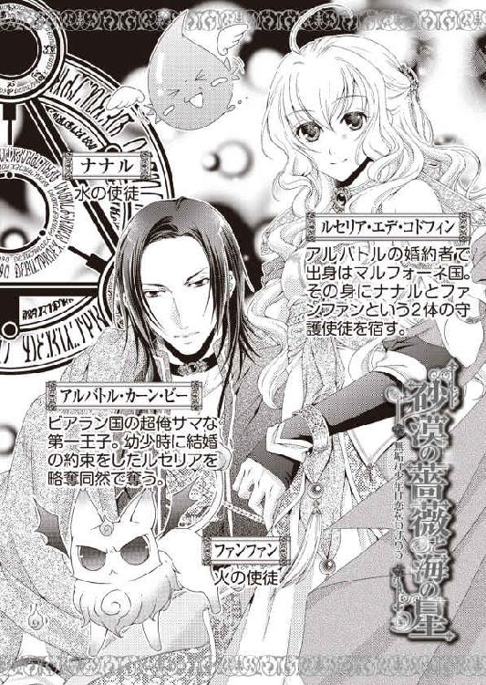
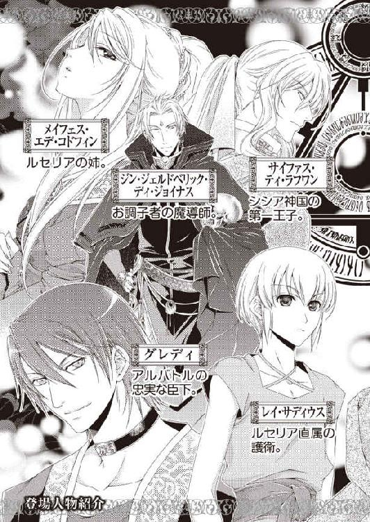
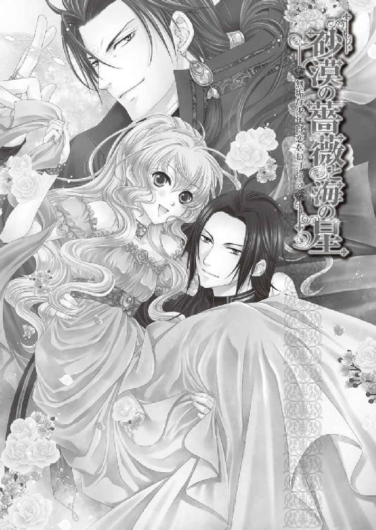
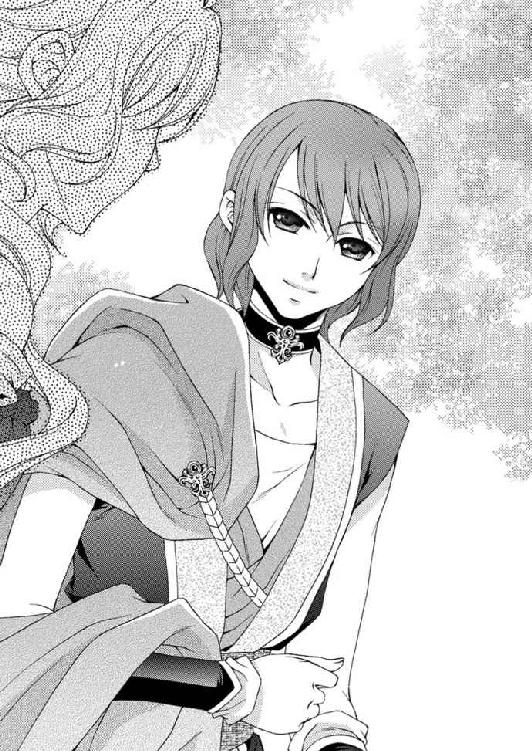
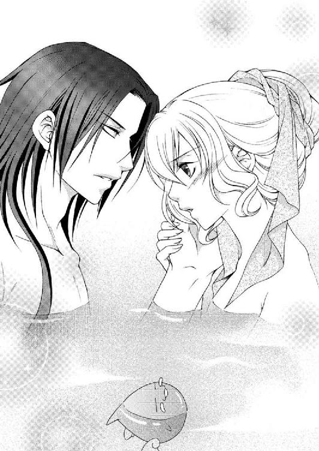
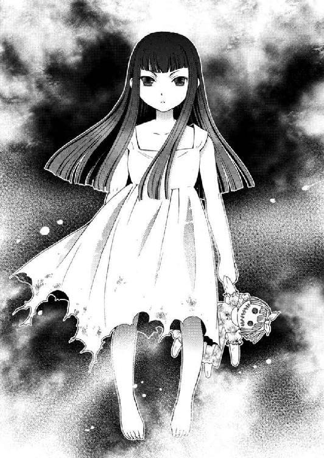
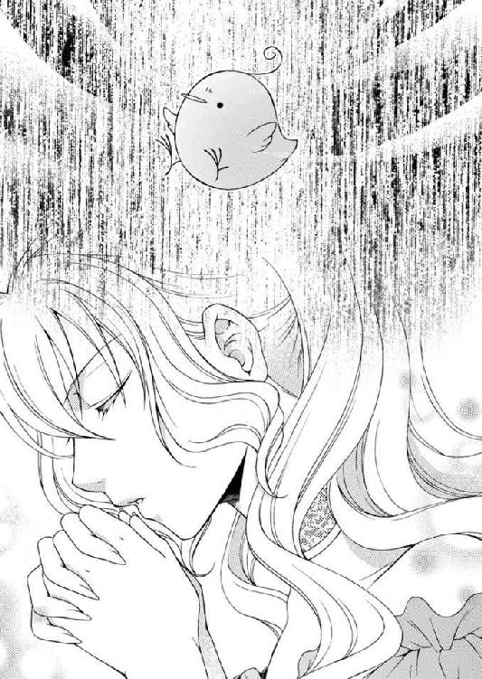
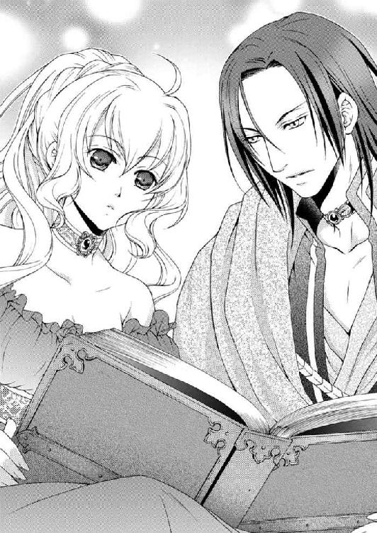

| 砂漠の薔薇と海の星5 無垢な少年は恋をわずらう<砂漠の薔薇と海の星> (ビーズログ文庫) | |
| あすか & 由貴 海里 | |
| エンターブレイン (2011) | |
本作品の全部または一部を無断で複製、転載、配信、送信したり、ウェブページ上に転載することを禁止します。また、本作品の内容を無断で改変、改ざん等を行うことも禁止します。
購入時にご承諾いただいた規約により、有償・無償にかかわらず本作品を第三者に譲渡することはできません。
本作品は本文縦組で制作しております。また、電子端末での閲覧に向くよう、一部デザイン等を変更しております。あらかじめご了承ください。



ルセリアは森に囲まれた中にある、澄んだ湖の岸辺に立っていた。
風はそよとも吹かず、水面に波紋もない。鳥が飛び立つ音も、魚が水面を跳ねる音も聞こえてこない。
ここは静寂が支配する場所だからか、声を発するのも躊躇われた。
光を通さないほどの深い森が、湖を取り囲むように鬱蒼と茂っている。水面の上空だけがぽっかりと開いていて、そこに広がる青空が眩しい。
薄いワンピースを着た裸足のルセリアは、ゆっくりと歩き踝まで澄んだ水に浸かった。
ひんやりとした水の冷たさが肌に伝わり、音のない世界でようやく一つの感覚を取り戻す。
揺らぎの少ない水底は透明度が高く、踏みしめる砂粒まで鮮やかに目に映る。ルセリアが足下の周りを見つめていると、ふいに名前を呼ばれた。
ルセ――。
「......え!?」
顔を上げると、視線の先に義姉であるメイフェスの姿があった。
清廉な美貌のメイフェスには似合わない、毒々しい深紅のドレスを身に纏っていた。
首元まである襟は彼女の細い首を強調していて、ドレスは胸元から腰、肩から袖口まで身体にフィットしている。けれど上半身とは違って裾は大きく広がり、ドレープのきいたフリルが湖の水面に消えている。
長い髪は後ろで一つにまとめられて、小作りな顔がいっそう引き立てられていた。
けれどその表情は悲しみに満ちていて浮かんだ涙で瞳は潤んでいる。
「メイ姉様っ！」
ルセリアは思わず駆けだそうとしたが、水面に一歩踏み込んだそこから足が動かない。まるで両足に巨大な石の重りでもつけられているようだ。
「......どうして!?」
ルセ――。
もう一度、名前を呼ばれて顔を上げた。
メイフェスは頰に涙を伝わせ、唇を震わせながら、続ける。
とても苦しいの――。
「メイ姉様......」
ルセ、とても辛いの――。
「どうして動けないのっ！」
なんとかしてメイフェスのもとへと向かおうと、ルセリアは自分の膝を叩いてみたが、足は一向に動かない。それどころかますます重くなっている。
このままだと私......私が消えてしまう――。
「私、絶対にメイ姉様を助けるから......」
「無理だ」
メイフェスとは違う全く異なる声が落ちてきて、ルセリアはその人物を捜した。
「......誰？」
「あの女は私のものだ。誰にも渡さない」
上空から、メイフェスとルセリアの間に下りてきた少女に目を奪われる。
柔らかそうな黒髪は、腰より少し長い。眉にかからない程度に揃えられた前髪が幼さを強調しているようだ。
手には薄汚れた人形を持ち、膝丈までの真っ白なワンピースを身につけているが、その裾は焦げた痕のようにボロボロだった。靴は履いておらず、裸足で、驚いたことに少女の身体は湖面すれすれに浮いている。
一見すると、六歳か七歳くらいの少女なのだが、幼い外見と反して赤い瞳には老獪な輝きが灯っていて、眼光はやけに鋭い。
「何を......言ってるの？」
「わからないか？ ......お前だっていずれ私のものになる」
少女は大きな目を輝かせて楽しそうに笑う。けれどそこには無邪気な明るさはなく、むしろ暗いものが漂っているようだった。
「教えて、どういうことなの？」
「いや......でも、知らない方が幸せだ」
少女はメイフェスの背後に回って肩から腕を回してしがみつくと、目を細めた。メイフェスは背後の少女を振り払えないようだった。
ルセ――と、メイフェスの唇が動くのと同時に、二人の姿は景色に溶け込み消えていく。
「待って、教えて......メイ姉様――っ！」
手を思い切り伸ばした瞬間、すべてが消え失せて、視界にはアルバトルの心配そうな顔が現れた。
「ルセリアっ！」
「......え......あ......」
夢から覚めたというより、現実だったものが急に失われた感覚に襲われ、それに戸惑いを隠せない。
ルセリアは声を失ったまま周囲を見回し、寝室の寝台で眠っていたことをようやく思い出した。
「嫌な夢でも見ていたのか？」
「......夢......だったの？」
「姉らしい女の名を呼んで、涙を流していたからな」
アルバトルの相変わらずなメイフェスの呼び方にルセリアは緊張が解けて、思わず笑みがこぼれていた。
「アルバトル、メイ姉様よ」
「ああ、そういう名前だったな」
「......夢でよかった」
ルセリアは安堵のため息をつくと、両手で目を擦った。その手をアルバトルにやんわり摑まれ、顔を上げた。
「どんな悪夢だ？」
「メイ姉様が助けを求めてきたの。でも......私は姉様のもとにどうしても行けなくて。もがいていると白いワンピースを着た少女が出てきて、メイ姉様も私も自分のものだって言うの」
もう一度、ゆっくりと息を吸い込み、吐き出す。乱れた気持ちは落ち着いたのだが、あの少女の燃え立つ赤い目が忘れられない。
「本当に......嫌な夢」
「ただの夢だ」
「そう思う？」
「夢は何かを表しているという者もいるが、俺にとって夢はただの夢だ。目が覚めたらそこで消える。意味などない」
アルバトルは夢に興味がないようで、憮然とした顔で髪を搔き上げた。
部屋の隅に置かれた小さな明かりに浮かぶアルバトルは、間近で見ると照れてしまうほど、綺麗な顔立ちをしている。
ルセリアはそっと顔をそむけて赤らむ頰を隠した。
「......手を伸ばせば触れられそうな感じがしたのよ」
「女はどうしてこう、夢に何かの徴を求めるんだ」
「アルバトルは嫌な夢を見ないの？」
「見ないと言ってるわけではない。それには意味がないと言ってるんだ」
「......アルバトルの嫌な夢って、どんなの？」
アルバトルにも怖いものがあるのかと興味から聞いたが、彼は面白くなさそうに答えた。
「アビシュテが刃物を振りかざして追いかけてくる」
「うわっ......」
アルバトルの義母であるアビシュテのその様をリアルに想像してしまい、ルセリアは思わず飛び起きそうになったが、アルバトルに引き戻されて横たわる。
「まあ、返り討ちにしてやるが」
「その夢、よく見るの？」
「いや。だが見ると鬱陶しい」
自分も見たら震えそうな夢だが、美しい女性が髪を振り乱して襲いかかってくる姿などあまり頻繁に見たくはないだろう。
「夢はただの夢だ......ルセリア」
「......うん。ありがとう、アルバトル」
「俺が父に打ち明けたことがそなたの心を悩ませたか？」
「いいえ。アルバトルの言うとおり、ただの夢だと思う」
アルバトルは父でありビアランの王であるエルドナルに、シシア神国で話し合われた会議の内容を伝えた。同時にルセリアが守護使徒を自らの身体に宿していることも打ち明けた。そうすることでアルバトルはルセリアを大国の庇護のもとに置き、サイファスのようなルセリアの力を欲する者から守ろうとしてくれたのだ。
エルドナルに打ち明ける前に、ルセリアはそのことを伝えられたが、それがよかったのかどうかは、わからない。
かつて、ネディアと呼ばれる黄金の都市があったという。
どこに存在したのかは定かではないが、ネディアは守護使徒という巨大な力を使って平和に国を治められていた。
守護使徒を六つ集めると七つ目が出現するという。
だが、ネディアを征服しようとした王がいた。彼の策略により、守護使徒を宿した聖なる僕は死に瀕した。その死の間際、最後の力を振り絞り、世界からネディアを隠し去り、息絶えたといわれている。
その後、六つの守護使徒は世界に飛び散り、ネディアの英知や宝は永遠に失われた――という伝説が古くから伝わっており、サイファスのように今も追い求める者は多い。
もっとも守護使徒はナナルの出現によって、伝説ではなく本当に存在しているのだと、証明されたが。
他国においては、ルセリアは巨大な力を持つ危険人物と見なされることもあるだろう。
だが、もともと『砂漠の薔薇』という女神を信仰しているビアランでは、『砂漠の薔薇』の生まれ変わりだと信じられているルセリアが守護使徒という強大な力を持つことに抵抗を感じる国民はいないだろう。しかも、自国の王子であるアルバトルと婚姻することは、何よりも望まれることなのだ。
だからこそアルバトルは覚悟を決めてルセリアのことをエルドナルに打ち明けてくれたのだ。当然、ルセリアもそんなアルバトルの気持ちに感謝している。
「そういえば......今日もサリマエルと馬に乗るのか？」
「ええ」
「......気に入らん」
以前、使徒騒ぎから農作物を焼失したベルデ国の要請を受け、ビアランは西の貯蔵庫を開けて食糧危機を救った。その見返りに五千頭の馬を手に入れられたのだ。
ベルデの馬は脚が太く機敏で、兵士の馬として適しており、とても優秀だ。
アルバトルは馬がビアランに到着したら一頭選ばせてくれると約束してくれた。
ルセリアはみんなに反対されながらも自ら選んだその馬に『へティ』と名付けて可愛がり、毎日のように乗っている。
「私だってアルバトルと一緒に馬に乗る練習をしたいけど、忙しいのよね？」
「ああ」
「じゃあ、仕方ないでしょう？」
アルバトルが難色を示すのには理由があった。アルバトルの義弟であるサリマエルと一緒にルセリアが乗馬の練習をしているからだ。
「サリマエルは......可愛いだろう」
「そうね」
「素直だ」
「ええ」
一体何が言いたいのかと、ムッとしているアルバトルの表情から読み取ろうとしたが、機嫌が悪いことしかわからない。
「なよなよしていて女みたいだろう」
「瘦せてるけどなよなよしてはいないわよ」
「俺とは真逆だ」
「似てるかと聞かれたら似てないって答えるけど......どうしたの？」
アルバトルが真剣に自分と義弟を比べるので、ルセリアは訊ねた。するとアルバトルは軽く咳払いをしてルセリアと向き合った。
「俺とサリマエルは真逆の性格だ」
「......うん。だから？」
アルバトルはチラリと視線を外したが、またすぐルセリアに戻した。
「そなたに聞いたことはなかったが......」
「何？」
「......いや」
「何よ、そこまで意味深な顔をしたんだから、言ってよ」
ルセリアが問い詰めると、アルバトルはせわしなく首の後ろを搔いて、二度、ため息をついた。
「そなたはどういう男が理想なんだ？」
「......ええっ!?」
「驚くような質問か？」
今さらなんだけど......と、口を滑らせそうになったのを、ルセリアはギリギリで押しとどめた。
その答えをはっきり言えば、アルバトルの機嫌は朝から悪くなってしまうだろう。
「じゃあ、アルバトルの理想の女性ってどんな人？」
「そなただ」
「......え？」
「そなただと言っている」
アルバトルの迷うことのない切り返しに、ルセリアは逆に自分の返答に困った。
「......」
「ルセリア？」
「あ、えっと、私も同じ」
幼い頃に出会ったアルバトルに恋心を抱いて大人になった。ということは当時のアルバトルが理想だったのだろうか。いや、理想を考えたとき、優しくておおらかな義父をいつも思い浮かべていたから、アルバトルはあてはまらない。
誰かを好きになるとき、理想とは違うものなのだろう。といってもアルバトルがその違いを理解してくれるとは思わないが......。
出会ったときのアルバトルも、今のアルバトルもルセリアは大好きだ。理想にしても問題ないはずだ。
「アルバトルと出会ってから、私の理想はアルバトルだったわ」
「そなた、初恋の相手はサイファスだと間違えただろう。では、あれがそなたの理想なのか!?」
「ちっ......違わ......ないけど。でもあれは、間違えたんじゃなくて、騙されたの」
「ふん。ものは言いようだ」
とりあえず納得してくれただろうと別の話題に替えようとした矢先、再びアルバトルが義弟のことを蒸し返してきた。
「サリマエルはどうなんだ？」
「え？」
「だから、サリマエルは理想なのか!?」
もしかしてアルバトルは、サリマエルが気になっているのだろうか。
ルセリアは想像もしなかったが、どうやらアルバトルは義弟に嫉妬しているらしい。そんなふうに考えるアルバトルのしつこさに啞然としつつも、ここはしっかりと否定しておくべきだとルセリアは判断した。
「......アルバトル、サリマエルは貴方の弟。それにまだ十四歳よ。変なこと考えないでよ」
「俺は十一歳の時にそなたと出会い、花嫁として迎えることを決めたんだぞ。十四歳にもなれば色気もついてくる」
「アルバトル！」
嫉妬深いアルバトルのことはルセリアも理解している。だからといって、十四歳の義弟にまでそういう感情を向けるのはいきすぎだろう。
けれど戒めるように名を呼んだにもかかわらず、アルバトルは甘えるようにすり寄ってきた。
「そなたは俺のものだ......ルセリア」
アルバトルの手は、頰にかかるルセリアの髪をそっと搔き上げ、何度も額を撫でる。その手の動きが心地よくて、目覚めたばかりなのに眠くなりそうだった。
「俺の后になると誓ってくれた」
「ええ。誓ったわ......私......」
アルバトルの手が頰に触れそのまま首の後ろへと回る。
過去、抵抗するルセリアの手首を捕らえ、力ずくで引き戻したこともあった手が、今はこんなにも優しい。
船の上で求婚された夜を鮮やかに思い出せる。
暗闇を照らすたくさんのカンテラ。頭上から降り注ぐ光の華。
そして何より、心にまっすぐ伝わった真摯なアルバトルの言葉。情熱と愛に溢れた、素晴らしい求婚だった。
彼とともに生きる――。
ルセリアがアルバトルの腕の中でまどろんでいると、現実に引き戻す声が響いた。
「......ぼっちゃまぁ、まだですかね？ そろそろお召し替えをしていただきませんと、朝の会議に遅れますよ」
アルバトルの忠実な臣下であるグレディはまるであくびでもしているかのような口調でそう言った。
アルバトルは渋々といった様子で身体を起こしてルセリアから離れると、寝台を下りる。
「グレディ。お前はいつも邪魔をしていないか？」
「それは王子の誤解です。私はお忙しい王子のため、できうるかぎりお二人の時間を作るよう、日々、王子の予定を細かく管理しているのですよ。今も充分、いちゃいちゃできるほどの時間をお待ちいたしました」
「......」
微笑むグレディを睨み付けながらアルバトルは待女のエミールが用意した衣装に着替える。
ルセリアも身体を起こしたが、グレディに止められた。
「姫様はよろしいのですよ。ゆっくりなさいませ」
そうは言われたものの、とりあえず寝台に座って、まだ残る眠気を追いやるように今日の予定を思い出す。
いつもある午前中の勉強は夕方からだったし、乗馬は午後からだ。それなら今日の午前中は久しぶりにゆっくりできそうだった。
帰国してからのルセリアは、エルドナルとアカリナ国の姫であるジャニーンの華燭の儀に関する準備に追われ、アルバトルとの時間はあまり取れないでいた。
あれほどアルバトルの后になりたいと望んでいたジャニーンがどうしてエルドナルの后となるのか、その真意はわからない。
それでもルセリアは日々の行事に忙しく追われ、その合間にもビアランの歴史や読み書きを習い、一息つく間もなかった。
思いがけない久しぶりの休息に、午前中はゆっくり湯浴みを楽しもうと考えていると、着替えを終えたアルバトルが戻ってきた。
袖なしのチュニックは足下まである長いタイプのもので、太股より下にスリットが入っているビアラン特有のゆったりしたものだ。
刺繡が隙間なく施された太いベルト。宝石に縁取られた半円状のコートは深い藍色をしており、重厚に見えるものの、その実意外と軽いらしい。
アルバトルの男らしい姿に、内心見惚れつつも、ルセリアは微笑した。
「ルセリア。二人目に気を使う必要はない。無理なことを要求してきたら拒否していいぞ」
アルバトルはジャニーンを名前で呼ぶのが嫌なのか、ルセリアの前では『二人目』と呼ぶ。ちなみに現在の一人目であるアビシュテのことは『あの女』と言う。
「ありがとう、アルバトル。でも今のところ特に問題はないから」
「そなたはいつも......」とさらに続けようとしたところで、考え直したように「いや、いい」と告げて、召使いが用意した剣を取ってベルトに提げる。
「......いや、今日は、藍色の宝石がついた剣にするか」
アルバトルは独り言のように呟いて、すぐ隣の衣装部屋に召使いとともに行ってしまった。
そんなアルバトルを見送り、ルセリアは首を傾げる。
「今日は変ね、アルバトル」
「姫様、王子は姫様に頼ってもらいたいのですよ」
「......え!?」
そっと教えてくれたグレディにルセリアは驚きを隠せない。
「そうそうそう、アルバトルも青いのう。姫さんに『アルバトル、私、あの人から酷いいじめを受けてるの。私を愛しているならなんとかして......』と甘い声で囁きながらすり寄ってきて欲しいんじゃないのか」
いつの間にか部屋にやってきていたジンが、グレディの後を追ってきてからかう。
魔導師のジンは水晶髑髏に魂が囚われており、肉体が存在しない。そのため、あらゆるところに出没できる。壁をすり抜けて姿を現すため、ルセリアたちは彼の気まぐれな出没にいつも驚かされていた。
そのジンの本体とも言える水晶髑髏は、鉱山の視察に出かけたアルバトルが砂の中から発見したらしい。ジンの説明によると、最初に水晶髑髏を発見し、目覚めさせた相手――この場合アルバトル――が許すまで、ジンは髑髏から解放されないことになっている。
「ジン、変な物語の読みすぎじゃないの？」
「ここは物語より面白いぞ」
笑うジンを戒めたグレディは、珍しく心配そうな表情をルセリアに向けた。
「......姫様、ジャニーン姫のこと、本当に目に余るようでしたらいつでも助けを求められてよろしいのですよ」
「心配されるほどの嫌がらせはされていないから大丈夫よ」
ルセリアはグレディにそう言って微笑んだ。
「ならよろしいのですが」
ジャニーンは甘えた声でルセリアに近寄ってきては、驚くべき行動に出る。
ルセリアの持つものにとても興味を抱いて、あれは持っていない、これが可愛いと褒めては欲しがるのだ。さらにアルバトルとの生活が気になるのか、遠慮のない詮索が多く、彼女との会話は気が重い。
初めてルセリアの部屋を訪れたときは、アルバトルとの寝室に入ろうとするので引き留めるのが大変だったほど。
ただ苦手意識を感じることは多いものの、ジャニーンはアルバトルの父親である、ビアラン王の后となる。そのためルセリアはジャニーンと問題を起こし、それが原因で親子の関係を悪くするようなことはしたくなかった。
「おうおうおう、いいのかねえ、姫さんや」
「ジン、アルバトルは私のことをいつも考えてくれているのよ。なのに私がジャニーンと問題を起こすわけにはいかないわ」
「......まあ姫さんは、ジャニーン姫の挑発に気づいていないところもあるからなあ」
「えっ、そうなの!?」
「ジン、ルセ様に余計なことを言わないでください」
ルセリアの着替えを手にしてやってきたエミールはジンをたしなめる。けれどどうしてそれが余計なことなのか、ルセリアにはわからない。
「ん、なんだ、いけなかったのか？」
「......エミール。もしかして私、何か気づいてないことがあるの？」
「そんなことありませんわ。気になさらなくていいんです」
にっこりと微笑むエミールから、ルセリアは部屋の隅で剣を持って佇む警護のレイに視線を移して答えを求める。
「......僕にもわからない」
「ならよいではないか。のう、エミール」
「そうですよ、ルセ様」
誰も教えてくれるつもりがないようで、ルセリアは小さくため息をついたが、ルセリアの心は別のことに囚われ始めていた。
「......そうだ、ジン。姉上の解呪の方法はまだ見つからない？」
「すまないなあ。......急にどうした、姫さんや」
「......」
あんな夢を見たのは、メイフェスが〝暗黒の花嫁〟という術をシシアの神官であり魔導師であるカルソーニにかけられているからだろう。
〝暗黒の花嫁〟――。
もともと誰にでもある小さな嫉妬心が魔術によって火をつけられ、かき立てられる。次第に理性が機能しなくなるまで嫉妬の炎が増幅されていき、いつしか魔術をかけた魔導師の言葉しか信じられなくなる。かけられた魔術は非常にゆっくり効いてくるため、当人も変化に気づかない場合が多い。
ただ、問題は、解呪が簡単にできないことだ。
この魔術は魔導師自身の魂と契約をしている。たとえ魔導師と引き離したところで魔術はいつまでもメイフェスを縛り続けるのだ。他の魔導師に術を解除させないためらしいが、そこまでしてメイフェスを操り人形にしたい理由が今のところわからなかった。
ただ一つはっきりしているのは、サイファスが自分の目的達成のためにメイフェスを利用しようとしているということだ。
ルセリアは解呪の方法を探すようジンに頼んでいた。
「......私......姉上の夢を見たの。私に助けを求めていたわ......」
「夢は夢でしかないぞ、姫さん」
「ええ。アルバトルにもそう言われた」
誰になんと説明されようと、昨夜の夢はあまりにもルセリアに強烈な印象を残した。近寄れば吐息を感じ、手を伸ばせば触れられそうなほど、現実味があったのだ。
そしてあの少女。可愛い姿には似合わない、瞳の暗さが目に焼き付いている。
思いに耽っているところにアルバトルが自ら選んだ剣を提げて戻ってきた。
「ルセリア、行ってくる」
「今日も気をつけてね」
軽く口づけを交わし、アルバトルは離れていく。ゆっくりと二人で過ごせた船の旅を懐かしく思いながらも、ルセリアはアルバトルを見送った。

その後ルセリアは朝から湯浴みを楽しんで、通気性のいいシフォンドレスに着替えた。
寝室の端にある、小さな庭を見下ろせる階段状になった場所で足を伸ばす。柔らかな敷物の上でくつろぎながら、ルセリアは自分の中にいる守護使徒のナナルとファンファンを起こした。
「朝っごっ飯～ズンズン！」
水の使徒・ナナルは、一口サイズに切った果物が並べられた皿の周囲を上機嫌に飛び回っている。
といっても、彼らは食事をすることはなく、色とりどりの果物を興味深げに眺めるばかりだ。火の使徒・ファンファンは人工池に泳ぐ魚を目で追って、時折前足で捕まえようとしている。が、どうやら本気で捕獲するつもりはなく遊んでいるようだった。
最初の頃は、起こした途端にあちこち飛び回り、落ち着きなく行動してはルセリアを困らせていた。けれど定期的に出してやるようになると、彼らは放っておいてもルセリアの側を離れることなく、いつでも見える場所でじゃれ合ったり、カウチで身を寄せ合うようにして丸くなっている。
姿を透明にすることもできるようで、ルセリアが彼らの存在を知られたくない人間がやってくると、察知して景色に溶け込む。
「ルセ様、こちらもどうぞ」
「ありがとう、エミール」
瑞々しい真っ赤な果実を口に含み、その独特の甘味に顔がほころぶ。ようやくビアランに戻ってきたことを実感できる瞬間だ。
一ヵ月ほど前、ルセリアたちは葬儀のためシシア神国へ向かった。そこで守護使徒の一人、ファンファンと出会い、今はルセリアの中に棲んでいる。
そのシシア神国から帰国の途中、船は嵐に遭った。そこで海賊に襲われ、ルセリアは荒れた海に投げ出された。目が覚めると同じように浜辺に漂着していたサイファスとともに、イリディアス皇国の第一皇子、クルゾンのもとでしばらく過ごすことになったのだ。
さらにイリディアスではサイファスの双子の兄・ハーヴェイの存在を知り、ルセリアの義母の故郷・ニノキアの騎士団からは守護使徒をどう使役するかを学んだ。
アルバトルからは船上で改めて求婚をされて想いの深さを実感し、ルセリア自身も彼と共に生きようと、誓った。
様々な困難を乗り越え、ルセリアはようやくビアランの首都、シハーブに戻ってくることができたのだ。
だが、帰国してさらに驚いたのは、ジャニーンがエルドナルの后となる話だった。
それから二週間。日常は淡々と過ぎていき、彼女に振り回されてはいるが、それ以外は平穏な日々を送っていた。自分が守護使徒という強大な力を持つ存在を身に宿していることも、それらを欲するサイファスの執拗な企みも、遠いものとして感じてしまうほどに。
これではいけないと考えていると、ジャニーンの来訪をエミールが告げた。
「こんにちは、ルセリア姫。またずいぶんと遅い朝食なのね」
「最近、ずっとこんな時間なんです。よかったらご一緒にどうですか？」
「もう王といただいたのよ」
両手を重ね合わせて頰に当て、唇をアヒルのように尖らせる。もう見慣れた仕草だが、ちょっと大げさすぎて、目について仕方がない。
「ではお茶をどうぞ。エミール、ジャニーン姫にお出しして」
「かしこまりました」
エミールがジャニーンの飲み物を用意して彼女の前に置く。けれどジャニーンはその杯をとることなく自ら連れてきた侍女にまた別の杯を用意させた。当然、エミールの入れた茶には口を付けないのだが、だからといって用意しなければ『嫌だわ、気遣いがないのね』と言われ『これではアルバトル王子の后に相応しくないわ』と続く。
ジャニーンは自分のしている失礼など全く意に介さず、杯の縁を撫でて顔を上げた。
これもいつものことで『どうしたの』と聞いて欲しいときの仕草だ。
「今日はどうされたんです？」
「用がなければ来てはいけないのかしらん」
「......いいえ。いつでもいらしてくださいね」
できるだけ親しみを込めた笑顔で取り繕うが、ルセリアはいちいち探るような視線で見つめてくるジャニーンが苦手だ。そんな気持ちを知ってか知らずか、ジャニーンはルセリアの左手首にはまっているブレスレットに目を移す。
「本当にいつ見ても素敵ね、そのブレスレット」
「ありがとうございます」
「私も同じものが欲しいわ。ねえ、私と王様の結婚のお祝いにそちらをくださらない？」
向かいに座っていたジャニーンが急に立ち上がり、ルセリアの隣に腰を下ろす。
触れ合うほど肩を擦り合わせて、ジャニーンは猫なで声でそう言った。ルセリアは慌ててブレスレットをはめた左手を引っ込める。
「ごめんなさい。これは私にとって大切なものなので、お譲りできないんです」
「そうよね。アルバトル王子からプレゼントされたってことは聞いているのよ。でもね。私にもとっても似合うと思うの」
部屋の隅に立つレイの表情が不快に歪むのと同時に、どこからともなくナナルの声が落ちてきた。
「......お前、手首が太いから無理、ズンズン」
「いっ、今の何？」
「え、何？」
ルセリアは知らぬ振りを決め込む。エルドナルがジャニーンに守護使徒の話をしたかどうかはわからないが、彼らの姿を見せたことはなかった。
「聞こえたわよ」
「エミール、何か聞こえた？」
「いいえ」
エミールはそう言って顔を左右に振る。ルセリアは内心冷や冷やしながらも、知らぬ振りを続けた。
「気のせいですよ」
「そうかしら......」
「変な髪型だなぁ、ゴッホ～」
「やっぱり何か聞こえたわよ！」
ジャニーンは立ち上がり、天井をぐるりと眺める。けれどナナルやファンファンは姿を消しているため、見つけることはできないだろう。
誤魔化すにも限界があるのだが、だからといって説明するわけにもいかない。
「レイ、聞こえた？」
「......いや」
「......変ねぇ」
「夜更かしされたのではないですか？」
「いやだわ、ルセリア姫ったら。変な勘ぐりなんておよしになって」
キャッキャとはしゃぎながらジャニーンはルセリアの肩を叩いてくる。ルセリアに他意はなかったのだが、何か誤解させてしまったようだ。
「ねえ、ルセリア姫。そのショール、とっても素敵。どちらで仕立てられたの？」
今度はショールに目を付けてジャニーンは聞いてきた。
「これは......エミール？」
「姫様の衣装は、いつもアルバトル王子がお持ちになられて私が衣装棚に整理いたします。ですので、どちらでお買い求めになられたのかはわかりません」
「今度、アルバトルに聞いておきます。すぐにどちらのものかわからなくてごめんなさい。私、今まで自分で購入したものはないんです。自由になるお金がないので......」
ルセリアがそう言うと、ジャニーンの表情が一瞬強ばった。失礼なことでも口にしたのかと、急に不安になる。
「あの......どうかされました？」
「いいえ。でも......ルセリア姫がアルバトル王子にとても愛されていることだけはわかりますわ～。本当に、羨ましいこと」
「......え、あ......」
明らかに気分を害した様子のジャニーンは、やはり今日も用意した飲み物には一切口を付けずに立ち上がった。
「そろそろおいとましますわ」
「ええ」
ジャニーンはプイッと背を向けて振り返ることなく出て行った。
一体どうしたのだろうと呆気にとられていると、ジンが感心したように告げた。
「本当に姫さんは天然だのう」
「なんのこと？」
「ルセ様。王族に女性が輿入れされるとき、持参金の多さが競われます。実はアビシュテ様がいらしたときより、ジャニーン姫の方が持参金が多いそうで、アビシュテ様はとても憤慨されているとか」
競うような持参金を持ってこなかったルセリアには関係のない話だ。ジャニーンが優越感を持つことはあっても、腹を立てることにはならないはず。
「じゃあ......私なんて何も持たずにきたのだから、相手にされないでしょう？」
「いいえ。逆ですよ、ルセ様。持参金など不要なほど、愛されているということですから。なので、ルセ様は、持参金など持たなくてもいいご身分だとジャニーン姫におっしゃられたということになるんです」
「え～っ！」
今からジャニーンを追って、そんなつもりはなかったと言っても、信じてはくれないだろう。いや、プライドをへし折るようなことを平然と口にしたルセリアに、はらわたが煮えくりかえっているに違いない。
「姫さんは喧嘩を売ったということだな」
「ジン、傷口を広げてくれてありがとう」
アルバトルのためにも王宮内で問題を起こさないようルセリアは努力している。なのに裏目にばかり出てしまうのだから、どうしようもない。
「......どうして嫌いな女と仲良くしなければならないんだ？ 僕にはわからない」
「レイ、波風立てたくないだけなの」
アビシュテの嫌がらせとは違い、ジャニーンは一見すると親しげに接してくるため、ルセリアも冷たく突き放すようなことはできない。ジャニーンの本性を知る人間ならわかってくれるだろうが、そういう彼女を可愛いと思うエルドナルや、召使いたちもいるため、対応が大変なのだ。
「ナナル、ファンファン。姿を消してこそこそ話さないの」
ルセリアがそう言うと、二人は柱の陰から姿を出して、ちょこちょこと歩いてきた。
「ジャニンコ、鬱陶しいぞよ。ズンズン」
「オイラもジャニンコは嫌いだ、ゴッホ～」
「ちょっと、ジャニンコって......勝手に名付けちゃだめよ」
ナナルはアルバトルのことを『アルたん』と呼ぶ。アルバトルはかなり腹を立てているようだが、ナナルはそう呼ぶことをやめない。そして新たにジャニーンも名付けたようだ。
「そうですよ、ナナル、ファンファン」
「みんな喜んでるのにどうしてだめなンだ？ オイラにはわからないぞ」
「喜んでるわけじゃないの。ファンファンもジャニンコって言っちゃだめよ」
「ジャ・ニ・ン・コ、ジャ・ニ・ン・コ～......」
二人は声を揃えて『ジャニンコ』と口にしながら飛び回っている。他のことなら言いつけを守ってくれるのに、どういうわけかこれに関してはルセリアも手を焼いている。
「ちょっと、やめなさいって。もう......何が楽しいのかしら」
「あれだなあ、姫さんや。使徒の知能は子供並みなんだろう。だめだと言われたら余計にからかいたくなるようなところがよく似とる」
「でも......イリディアスの鉱山では本当に一心同体だったのよ。私が考えるように動いてくれたわ。なのにどうして、今は聞いてくれないのかしら」
ルセリアが困惑していると、ジンが意味深な笑いを浮かべた。
「......姫さんと守護使徒は心が繫がっておるんだろう？」
「ええ」
「ひょっとして姫さんも、心の底では〝ジャニンコ〟と思っておるんじゃないのか？」
「そ、そんなこと思ってないけど......」
チラリとナナルとファンファンを見ると、しつこく「ジャニンコ」と言い続けて、嬉しそうに騒いでいる。ジンの言うとおり、本当は苦手なのに仲良くしなければならない気持ちが、使徒たちをあんなふうにさせてしまうのか。それならば問題があるのはルセリアだろう。
「ジン、やめてください。ジャニーン姫の前で口にしなければ、別にジャニンコでもいいじゃありませんか」
「エミール......ぽろっと本人の前で言ってしまったらどうするのよ」
「......笑って誤魔化してしまいましょう！」
エミールの提案に疑問を感じつつも、そうするのが一番かもしれないと納得していると、サリマエルの召使いがやってきた。
「姫、王子の召使いが来ているぞ」
「ありがとう、レイ。もう乗馬の時間なのね......」
ルセリアは馬に乗るための服に着替えると、宮殿の敷地内にある馬場に向かった。
宮殿内には兵士用の厩舎と王族専用の厩舎がある。それらは隣接しているものの、馬場は完全に分かれていて、馬に乗る練習や乗馬を楽しめるようになっていた。
馬場は外の砂漠をそのまま利用しているが、ここへは砂漠を支配する聖霊とも「神」とも呼ばれる獰猛な生き物・ワームが入ってこられない。外砂漠に繫がる箇所の地中に、ワームを遠ざける植物・エジを巻き付けた鉄の門が埋められているためだ。
これら外砂漠に繫がる門は宮殿を取り囲むように設置されていて、敵が宮殿内に侵入するという最悪の事態に陥った場合に、門が開けられることになっていた。
けれどもう何百年もの間、新しい門に交換される場合を除いて、開かれたことがない。
ここは安全に砂漠を踏める場所だといってもいい。
ルセリアが遅れて厩舎にやってくると、すでにアルバトルの弟であるサリマエルが準備万端で待っていた。
「姉上、お待ちしていました」
「ごめんなさい、遅くなってしまって」
「いえ。ジャニーン姫が姉上のお部屋にいらしていることは聞いておりましたから。きっと......困っておられるのではないかと思っていました」
「そんなことはないのよ。......少し失敗してしまったけれど」
困った顔でそう言うと、サリマエルははにかんだ笑みを浮かべる。
アルバトルの義弟にずっと会いたいと思っていたが、その機会がなかなか訪れなかった。
けれど、アルバトルがエルドナルにルセリアのことを打ち明けてほどなくして、アビシュテがサリマエルを伴ってやってきたのだ。
「ルセリア姫、我が息子のサリマエルとどうぞ仲良くしてやってくださいね。わらわによく似て、とても優しい子ですのよ」
アビシュテは、ルセリアをさんざん馬鹿にしたことなどすっかり忘れた様子で、サリマエルを紹介した。
「はじめまして、姉上。サリマエルと申します。あ、......姉上って呼んでよろしかったでしょうか？」
「もちろんよ」
「ありがとうございます、姉上」
はにかんだような笑みを浮かべるサリマエルは、プライドの高いアビシュテと全く違った。
もしかするとルセリアの中にいる守護使徒の話をエルドナルから聞き、ここは仲良くした方がいいと判断したのかもしれない。だから以前のような嫌がらせはなくなったし、通路ですれ違っても、挨拶を交わしてくれる。
アビシュテにどのような心境の変化があったのか知る由もないが、サリマエルと仲良くできるのは願ってもないことだった。
その日からサリマエルはルセリアに乗馬の誘いをしてくるようになったのだ。
体が弱いため公務もなく、まずは体力をつけることを優先させられているサリマエルにとって、独りぼっちの乗馬は楽しくなかったのだろう。
ルセリアも時間が合うときは一緒に乗馬を楽しむようになったので、慕ってくれるサリマエルが実弟のように可愛くて仕方がなかった。しかもサリマエルは少女に見まがうまだ十四歳の少年だ。母親が違うとはいえ、傲慢で自己中心的な父王、エルドナルに欠片も似ておらず、優しい性格をしていた。
「僕の母も困っていますよ」
「アビシュテ様が？」
「今、父上はジャニーン姫の虜なんです。母はそれが気に入らないようです」
「そう......当然よね。あ、へティが来たわ」
鞍や頭絡をつけて馬番に連れてこられたへティはルセリアを見ると嬉しそうに顔を上下に振った。
イリディアス皇国から帰国してすぐに、馬場に放たれた馬たちの中から、ルセリアは一目惚れでヘティを選んだ。が、誰も賛成してくれなかった。
それは二歳の雌馬で、身体は白いのだが、四肢が膝から下が真っ黒で、まるでブーツを履いているようにも見える。たてがみと尻尾は黒と白が入ったまだら。お世辞にも美しいと言える馬ではなかった。
けれどアルバトルが自分の馬を選んでいいと言ってくれたため、ルセリアはみなには不評な馬を自分のものにした。
額にも星のような模様があるからか、初めてへティを目にする者はこれが姫の馬なのかと驚きを隠せないようだ。けれど乗り心地はどの馬よりも安定しているし、反動も少ない。しかもとても機敏で、ルセリアの指示を正確に読み取ってくれるまたとない相棒だ。
ルセリアは教師に指導を受けて、しばらく馬術を学び、最後は軽く障害をこなしてその日の練習を終えた。
母国・マルフォーネでも馬には乗り慣れていたので、馬術はそれほど難しいことではなかった。それにまだ学ぶこともたくさんある。しかも街に気軽に行けないルセリアにとって、乗馬は何よりの楽しみだった。
ルセリアは馬場の外に作られている木陰に腰を下ろし、エミールが用意してくれた冷たい飲み物を飲んで涼んでいた。
そこへ練習を終えたサリマエルもやってきてルセリアの隣に座った。
とりとめのない話をしていたが、ふとサリマエルが思い出したように尋ねてきた。
「兄上はこの国の一夫多妻制についてどう思われているんでしょう？」
「......聞いたことはないの」
ルセリアも気になってはいたが、国のしきたりに口を挟むことができず、この件に意見したことはない。
「姉上は気にならないのですか？」
「この国のしきたりだもの」
「僕の母は......そのしきたりに翻弄されてきたんです。兄上も姉上もきっと僕の母についてはあまりいい印象はないと思うのですが、母は可哀想な人だと僕は思います」
「可哀想？」
ルセリアの言葉にサリマエルは小さく頷く。
「はい。母は望まれてこの国へやってきたはずなのに、すでに寵愛を受けている女性がいらっしゃいました。兄上の母君のアミタ様です。確かに母は第一王妃でしたがそれは表向き。父が外交に伴うときの、ただの飾りでしかなかった。母が意固地な王妃になってしまうのも仕方ないと思いませんか？」
「......そうね」
アビシュテのような立場に、ルセリアもいつ立たされるのかわからないのだ。
もちろんルセリアはアルバトルを愛しているし、彼も同じ気持ちでいてくれるだろうと信じている。
けれど何人も妻を娶ることが許されているこの国で育ったアルバトルに、ルセリアが感じる違和感を理解してもらえるかどうか。
「母は父をとても愛しています。これは本当なんです。とてもプライドの高い母ですが、その気持ちは側にいる僕が一番よく理解しています。だから僕は......一夫多妻のしきたりを変えたいと思っています」
ルセリアは幼いなかにも大人の表情を見せるサリマエルに微笑んだ。
だが、アルバトルから同じ台詞を聞けたら、もっと嬉しいだろうとふと思い、ルセリアはちょっぴり寂しい気分に陥った。
「いつか姉上も悲しみに暮れることがないように......僕はこの国を変えたい」
「アルバトルもこの先......新しい后を迎える日が来るのかしら」
「兄上が望まなくても、政治的な理由から娶らなくてはならないこともあると思います」
「......そうよね」
たとえアルバトルが望まなくても、そうせざるを得ない日がいずれやってくる。そのときルセリアは、事実を受け入れられるのだろうか。
ルセリアの育ったマルフォーネでは一夫一婦制である。しかもルセリアの養父は養母が亡くなってから他国の縁談をすべて断っていた。
もちろんルセリアとしては養父の幸せも望んでいるから、いつか新しい伴侶を見つけて欲しいと願っている。ただ、亡き妻を思う一途な養父の気持ちはとても嬉しい。
とはいえ、マルフォーネとビアランは国の成り立ちも違うし歴史も違う。一夫多妻制をとるのはそれが必要な歴史がこの国にあったからだろう。だからルセリアはなかなかアルバトルにその件について話せないでいたのだ。
「姉上はよろしいのですか？」
「そのときにならないとわからないわ」
「そうでした、母上は姉上のことを気に入っているんですよ」
「え、そ......それはいくらなんでもないと思うけど」
数々の嫌味と嫌がらせを思うとアビシュテがルセリアを気に入っているとはとても思えないのだが、サリマエルは喜々としている。
「あの姫はとても肝が据わっているってよく感心しています」
「あはは」
そういうことかと納得して思わずルセリアが笑うのと同時に、馬場として囲まれている砂漠の表面がうねり、唐突に鋭い髭と鋼鉄の身体を持つワームの巨体が現れた。
「門は閉じられているはずだっ！」
「どうしてワームが入ってくるんだっ！」
兵士たちは口々に騒いでいるものの、魔術も効かないワームに対抗する武器もないため、容易に近づくことができない。確かに、エジの根っこから出る毒素を嫌うが、人間や馬という生きた獲物を目の前にして効果があるのかどうか不明だ。
馬場に放たれている馬たちは悲鳴のような鳴き声を上げ逃げまどう。ワームの動きは緩慢だが、狙われたら最後だ。
「なぜ......ここには入ってはこられないはずなのに」
ルセリアは思わず柵をくぐると、馬場に駆け込んでいた。後を追おうとしたサリマエルは兵士によって引き戻される。
「姉上っ！ 危険ですっ！ ......離せっ！」
「私は大丈夫だから」
「ルセ様！」
「エミールも来ちゃだめよ！」
肩越しにそう言い、ルセリアは馬に狙いを定めていたワームの前に立つ。不思議なことにナナルやファンファンの力を信じる今のルセリアにはワームは恐ろしい生き物ではない。
「......ここには入ってきてはいけないの。砂漠へ戻って」
ルセリアが言い聞かせるように語りかけると、ワームは長い首を左右に振って周囲をしばらく眺めていた。みなが緊張する中、ワームはますますルセリアに近づいたが、目前まで来ると、また長い首を左右に振る。しばらくそうして首を振っていたが、やがて諦めたように踵を返して砂に潜っていった。
「そうよ。さあ、砂漠へ戻るの」
砂漠の表面はうねうねと外へ向かって揺れていたが、いつしか砂の動きは収まり、静寂が戻る。馬たちはワームがすでにこの馬場から去っていったことを悟ったようで、緊張は解けていた。
ルセリアの様子を見ていた兵士たちは、噂に聞いていたワームを思い通りに扱う砂漠の薔薇を目の当たりにし、あちこちで感動の声を上げていた。
「姉上はやはり砂漠の薔薇なのですね。なんて尊いことなのでしょう」
サリマエルはルセリアの前で跪くと、手を取って崇めるように感激していた。その姿にルセリアの方が戸惑ってしまう。
「え......あ......そういうわけじゃ......」
思わず手を引っ込めたルセリアの耳にアルバトルの声が響く。
「ルセリアっ！」
アルバトルは柵をひらりと越えて馬場に降り立つと、苛立ちを隠せない表情でやってきた。
彼の瞳はまっすぐルセリアに向けられたままで、サリマエルには一瞥もくれない。
「アルバトル......」
「騒ぎを聞いて来たが、そなた、怪我はないか？」
「ええ。私は大丈夫」
アルバトルはルセリアの無事な姿を確認して安堵したのか、表情を和らげるように口元にうっすらと笑みを浮かべた。
「兄上」
「......ああ、お前も無事か」
「はい。姉上が助けてくださいました」
サリマエルの言葉にアルバトルは恐ろしく冷たい顔を向け、吐き捨てる。
「女に助けてもらって嬉しそうにするなど、男として情けないことだと思え」
「アルバトル！」
もう少し言い方があるはずなのに、アルバトルは冷えた眼差しで、サリマエルを見下ろしている。申し訳なさそうに肩を竦めたサリマエルは、小柄な身体がさらに小さくなったようだった。
「当然のことだ」
「ごめんなさい、兄上」
アルバトルはルセリアの手を取って引っ張るようにして馬場から出ると、警護の兵士を怒鳴りつけた。
「砂漠と馬場を繫ぐ門を開けた犯人がいるはずだ。必ず探し出し、この俺の前に引きずり出せ！」
「はいっ、かしこまりました」
兵士たちが散っていくのを眺めながら、アルバトルは追ってきたサリマエルに告げた。
「サリマエル。お前の母に余計なことは話すな。わかったな」
「は......はい、兄上」
「もういい、部屋に戻れ」
義兄として冷たすぎる言い方だったが、サリマエルは反論することなく去っていった。その寂しげな背を眺めながら、ルセリアは非難を込めた目を向けた。アルバトルの傲慢ぶりには慣れたものの、あれではサリマエルが不憫すぎる。
「ねぇ、アルバトル......」
「そなたはしばらく部屋で過ごせ。宮殿内であってもうろつくことは許さん。俺はこれから北の鉱山へ視察に行くことになった。三日ほど留守にする」
「え？」
ルセリアはふいの言葉に怒りを忘れて聞き返した。
「......突然なのね」
「ああ。先ほど決まった。その間、そなたは部屋から出ずにいろ」
「ちょっと！ それは横暴よ」
「外に出るとこういうことになるからだ」
まるでワームが馬場に入ってきたのはルセリアのせいだといわんばかりのアルバトルの態度には怒りを通り越して本気で呆れる。
「ワームがやってきたのは、私のせいじゃないわ」
「わかっている」
そう言ったアルバトルは一呼吸おいて言葉を重ねた。
「......だが、俺が留守にしている間は、部屋に閉じこもっていてほしい」
「心配しすぎよ、アルバトル」
「そなたは目を離すととんでもないことに巻き込まれているからな」
「部屋に閉じこもっていても、巻き込まれるときは巻き込まれてるわよ」
三日くらい我慢できないわけではないが、頭ごなしに言われるのが気に入らない。
「そなたにも言い分はあるだろうが、俺が安心できるんだ。悪いがしばらく我慢してくれ」
「じゃあ、こうしない？ 私を心配だっていうなら視察に同行させてくれる？」
「......だめだ！」
ジャニーンのように少し可愛く頼んでみたが、アルバトルの決心は固いようで、提案は速即却下された。
「レイ、ルセリアを頼むぞ」
「はい」
「アルバトル～っ！ もうっ！」
アルバトルはルセリアの手をレイに押しつけると、背を向けて足早に去っていった。
忙しい中、心配して駆けつけてくれたのは嬉しいが、取りつくしまもなくこれでは文句も言えない。
「ルセ様、部屋に戻りましょう」
「......は～い。わかりました」
エミールに促されたルセリアは、いつもは必ずしているへティの世話をしぶしぶ馬番に頼み、部屋に戻った。
そこでいつもと様子が違ったことにふと気づく。
「アルバトル、なんだかものすごく......難しい顔をしていたわ。何かあったのかしら」
「王子はいつもあんな顔をしているぞ」
「違うわよ。もう少し優しい表情をしているわ」
「......優しい？」
「レイ、いいのよ、もう」
王とまた何か話したのだろうか。それともルセリアのことで王から注意でも受けたのか。
ルセリアは自分が守護使徒を宿していることをできればエルドナル王に知られたくなかったし、ましてやそのことでアルバトルとシシア神国のサイファスが敵対していることを話して欲しくなかった。
アルバトルは理解してくれたし、力の一端を見た者たちは『砂漠の薔薇』だからと勘違いしていて、ルセリアを恐れたりはしない。けれどビアランという国力を持ってルセリアを守ろうとするならば、王だけではなく、大臣やそれに近しい者たちがみな、ルセリアの中に守護使徒が宿っていることを知るのだ。
そこであまりにも巨大な力を恐れ、逆にビアランではもてあます存在になるのではと考える者も出てくるかもしれない。エルドナルが王としてシシアより優位に立つために、他の王と協議し、ルセリアの力をみなで共有しようと、あのサイファスと同じ提案をしないとも限らない。
だからこそルセリアは、アルバトルの側を離れようと一度は決心した。結局、彼の愛を信じることにしたのだが。
今となっては遅いし、ずっと隠し通せることでもない。アルバトルの決断が最善だったと信じている。それでもルセリアは自分のことでアルバトルに迷惑が掛かるのではないかとずっと心配していた。
なんだか落ち着かず窓際を右往左往しているルセリアのところにグレディがやってきた。
「グレディ......」
「姫様。しばらく私たちは留守にしますが、王子の言いつけどおりくれぐれもお部屋から出ないようにお願いします」
「ねえ、何かあったの？」
「......私から申し上げたというのは内緒ですよ」
「ええ」
「表向きは鉱山へ視察に行くことになっているのですが、隣国のカルデルで流行っているという病について調べることが今回の目的です」
グレディの説明にルセリアは頭の中で地図を描いた。
ビアランの国土を渡るように西から東へと連なるシェマダン山脈がある。
シェマダン山脈を北西に下りると、マルフォーネ王国、さらに北西に行くとシシア神国がある。北東に下りるとカルデル国とアカリナ国があるのだ。
ジャニーンの出身国でもあるアカリナ国には行ったことはないが、ビアランやシシアに比べ中規模程度の国であることは知っていた。
「こういうことってよくあるの？」
「いえ。この国は乾燥していますからね。風邪など感染型の病はあまり流行りません。そのため、逆にこの度の風評には敏感なのです」
隣国で疫病が流行ったら、ビアランにもやってくる恐れがある。アルバトルはその状況を確認しようとしているのだろう。
「アルバトルが行って大丈夫なの？」
「それなりの対策をして参りますので、大丈夫ですよ。王子が心配されているのは姫様のことだけですし」
「どうして部屋から出てはいけないの？」
アルバトルがどうしてもと言うなら、部屋でおとなしく過ごすつもりでいるが、やはり三日間は長すぎる。
「狭い場所でならレイもジンもいますので、何があろうと姫様の安全を確保できるとお考えなのでしょう」
「宮殿内くらい構わないと思うけど......」
「ほんの数日ですよ、姫様。どうぞアルバトル王子が憂慮されないよう、行動を控えていただきますよう、お願いします」
「......わかった。数日だもの。部屋でおとなしくしているわね」
「ありがとうございます。王子も安心して視察に出かけられますよ」
グレディと話しているとアルバトルが戻ってきた。言葉をかけ合う前に、彼は慌ただしく衣装を着替える。すぐ様出て行こうとしたところをルセリアが引き留めた。
「アルバトル。気をつけて」
「俺は大丈夫だ」
軽く触れ合い、離れていく手。
ルセリアは漠然とした不安が胸にわき上がるのを感じたが、アルバトルに告げられる言葉は探せなかった。アルバトルに略奪同然でビアラン国に連れてこられたばかりの頃、ルセリアは部屋に閉じこめられた中での生活を強要された。
けれど今では多少の自由が許されて、宮殿内にある中庭を散策することもできるし、厩舎に行って馬に乗ることもできる。もちろんどこへ行くにも警備の兵はついてくるし、宮殿内にある衣装の仕立て屋やアクセサリーの店でも長居はできないが、それなりに楽しめるようになっていた。
だからアルバトルから三日間部屋から出ないようにと言われ、以前と同じように過ごせばいいのだと軽く考えていたが、半日も経たず退屈になっていた。
縫い物をしたり絵を描いたりして過ごすことを好んだメイフェスとは違い、活動的なルセリアにとって部屋に籠もるのは大の苦手なのだ。
それでもアルバトルが真剣に頼んだことだからと、ルセリアは言いつけどおり、部屋でできることをするつもりだった。
「......エルドナル王とジャニーン姫にお贈りする品の目録ってもうできているの？」
「中身は目を通していただいていますので、今は装丁をお願いしているところです」
「そうなの......じゃあ、衣装を確認する？」
「昨日、終えましたよ」
「そうだったわ......」
王とジャニーンの華燭の儀の準備もすでに終え、他にすることがないか考えてみるものの、もう思い浮かばない。カウチに座り、湯浴みでもしようかと考えていると、ジンがエミール、レイとともに、頭を突き合わせるようにして床へ座り込んでいることに気づいた。
「何をしているの？」
「姫さんや。おうおうおう。ジャニーンを覗き見しようとしておる」
「......ちょっと、ジン。何考えてるの。レイも、どうしてジンに手まで貸してるの!?」
「だから、姫さんや、あのジャニーン姫を覗こうとしておるんだと話しているだろう？」
肉体のないジンは、魔導師ではあるが肉体を借りなければなんの術も使えない。そのためグレディに身体を借りることもあれば、レイに頼んで術を使う。どうやら今はレイの手を借りて魔術を使おうとしているようだ。
「エミール、水差しから水を零して、床に小さな水たまりを作ってくれたまえ。レイ、もう片方の手はジャニーンのスカーフを握っているのだぞ」
「いいですよ」
エミールは水差しを手に持ち、床に水を撒いて、小さな水たまりを作る。以前にもルセリアが頼んで故郷の様子を見せてもらったことがある。そのときに初めてルセリアは、自分の両親やメイフェスとは血の繫がりがないという事実を知った。
以来、こういったことはしたことがなかった。そしてルセリアの本当の両親のことはわかっていないままだ。
「さてさてさて、レイ。水たまりに手をかざし、ジャニーンを見たいと強く心に念じるのだよ。強～く。強くだ」
レイが小さな水たまりに両手をかざすのと同時にジンが何か小声で詠唱する。ジンの手はレイの手に溶けるように重なり、その下で水がグルグルと円を描くように動きだす。
「......やっぱりよくないと思うんだけど」
「ルセ様。まずは敵を知りましょう」
勢い込むエミールに、ルセリアはやんわりと言う。
「敵っていうほどじゃないでしょう」
「僕は姫の警護をしている身だ。あの姫の動向を把握しておかなくてはならない」
レイがそう言い放ち、しばらくすると、彼が手をかざしている水面に細かな波が立ち徐々に映像が浮かび上がった。
ジャニーンはエルドナルにすり寄るようにして座り、夕食を摂っているようだった。エルドナルは酒をずいぶん飲んでいるのか、頰をうっすらと赤く染めている。
「相変わらずエルドナルは若い娘には鼻の下を伸ばしていかんのう。我が輩はああいう色気むんむんの娘は苦手だがなあ」
「......ほら、二人の時間を覗き見するようなことはやめましょう」
ルセリアがやめさせようとすると、素早くレイが止めた。
「いや、姫。少し待て」
「どうしたの？」
ルセリアの問いに誰も答えず、みなの視線はジャニーンとエルドナルを映した水面に向けられている。自然とルセリアの視線もそこへ向かった。
『ねえ、王様。何度も申し上げましたけど、ルセリア姫がそれほどまでに得難い宝だというのなら、ご自分のものにされたらいいんじゃありませんこと？』
ジャニーンはエルドナルの手の甲を指先で何度も撫でている。その姿を覗き見していることを申し訳なく思っていたルセリアだったが、ジャニーンの放った言葉に耳を疑った。
『あれは息子の后となる娘だからな』
『じゃあどうして私の言うとおりにアルバトル王子を鉱山へ向かわせたのです？ 王様も少しは手に入れたいと思われたからでしょう？』
『困ったことを提案する姫だ』
エルドナルが王として親としてギリギリの節度を守ろうとしているのに、ジャニーンが甘えた声で追い打ちをかける。
『だって～......この国で一番偉いのは、エルドナル王ですわん。王様がすべてを決め、手に入れるのよ。たとえ息子のアルバトル王子の后となる娘であろうと、王様が欲せば王様のもの。そうなんでしょう？』
『ああ、そうだ』
ジャニーンは自分の夫となるべきエルドナルに、ルセリアも手に入れろとたきつけている。
恐ろしいことを平気で企むジャニーンに、ルセリアの背筋に冷たいものが走った。
『ルセリア姫は〝砂漠の薔薇〟と尊ばれる存在なのですってね。国民の人気も高いと聞いていますわ。時には王様よりもみなから慕われ、愛される存在なんでしょう。そんな姫を后とされたら、王様の人気も不動のものになるのではなくて？』
『......私はそなたを后に迎えるのだぞ。あの娘に興味はあるが、そなたを悲しませるようなことはできん』
エルドナルがジャニーンの魅力的な提案に魅かれているのがわかる。
確かに以前、エルドナルは力でルセリアを我がものにしようとした。けれどあのときはまだ婚約者として公表される前だったし、今はエルドナルもアルバトルがどれほどルセリアを愛しているのかは理解しているはず。
きっとジャニーンの提案など笑い飛ばしてくれるだろう。
『私も愛している王様が別の誰かを娶るなんて考えたくありませんわ。でも王様は国の利益を優先すべきだと思うの。あのシシアの王子も欲した姫君。イリディアス皇国も興味を持っていると聞いていますわ。それほど価値のあるルセリア姫を王様が娶れば、みなが羨望の眼差しを送りますわよ』
『悪くないが......』
少しずつ雲行きが怪しくなってきていることはルセリアにもわかった。
それでもエルドナルの親としての理性を信じたい。
『ねえ、王様。もし私を可哀想だと思うのなら、こうしませんこと。私は王様のことを本当に心から愛しています。だから王様を諦めます。その代わり、私を表向きはアルバトル王子の后になさって、実際は王様の側室にしてくだされば、私の父も納得いたしますわ』
『......ジャニーン。そなたは本当にできた姫君だ。だがな、あの姫は......不思議な力を持っている上、私のことを嫌っておる......』
ルセリアはエルドナルにハーレムで襲われたときからこれっぽっちも好感を抱いていないし、手に触れられることを想像するだけでも吐き気がする。
ジャニーンの提案はルセリアの想像をはるかに超えていた。
『ルセリア姫はアルバトル王子からも逃げだそうとしたと聞いていますわ。シシアの王子からも逃げていらっしゃるそうだし。経験豊富な王様ならきっとルセリアの姫のお気持ちも変わるはずですわよ』
『......』
エルドナルは顎を撫でながら、考え込んでいる。チラチラとジャニーンに視線を向けているのは、よくないことを思案しているのだろう。
『そうだわ、王様。私が女性が従順になるという媚薬をご用意しますわ。アルバトル王子も今はご不在ですもの。その間に媚薬を使って既成事実をお作りになるといいのよ。そうすれば王子もお父上でいらっしゃる王様に従われますとも』
『わかった』
小さな水たまりに映った映像はゆっくりと消えていく。信じられない思いで、ルセリアはしばらく呆然としていた。
――わかった。
わかったって、何がわかったの？
ジャニーンの人道に劣る提案を理解したと告げたのだろうか。
「......ルセ様」
「......」
ジャニーンは恐ろしい女性だ。
最初からアルバトルしか目に入っておらず、彼を手に入れるためならなんだってするつもりでこの国へやってきたのだろう。
もし、エルドナルの気持ちが変わらなかったら、どうしていたのだろう。いや、ああいう女性は目的を達するためには、どんな策でも弄するのだ。
「姫さんや」
「......」
アルバトルを手に入れるまで、ジャニーンはこの国に居座り、私を悩ませる――。
「姫！」
レイに怒鳴るように呼ばれ、ようやく我に返った。けれど混乱した頭では現状をどうすればいいのか答えは見つけられない。
「......待って。待って、少し落ち着かせて。ほ......本当に王様はジャニーン姫に言われたような行動に出られると思う？」
その問いに、みなの頭は縦に振られた。誰一人、否定しようとしない。
「おうおうおう。あのエルドナルならやるだろう。どうしようもないのう」
「以前、同じようなことがあったはずだ」
ジンは呆れ、レイは怒りに打ち震えている。エミールといえば両手を胸元で組んで、真っ青な顔をしていた。
「でっ、でもあれは......まだ正式に公表される前の話よ」
「ジャニーンはどうしてもアルバトルの妻の座を得たいのだろう。だから邪魔な姫さんをもっともらしい理屈をつけてエルドナルに押しつけたいんだなぁ。ここで姫さんをアルバトルから引き離せるのはエルドナルしかおらん」
アルバトルの后の座につくのを最終目標にしてエルドナルに近づいたジャニーンに、ルセリアは改めて恐ろしいほどの執念を感じ背筋を震わせた。
とはいえ、エルドナルがどういう行動を起こすにせよ、王という面目を潰すわけにはいかないはずだ。
何も知らない振りをして、ルセリアが姿を隠すのが一番いいだろう。
「アルバトルが戻ってくるまでの間、どこかに隠れることができたらいいんだけど......そういう場所はないの？」
「ひとまずシハーブからは出た方がいいかもしれません」
首都の他に安全だと保証してもらえるような別邸はあるらしいが、今はその場所を聞ける相手がいない。
街の宿屋にしばらく滞在できるのならそうしようかとルセリアが考えていると、傍らのレイが呟いた。
「......いや、今国外には出られない。港は封鎖されているし、キャラバンの出入りも制限されている」
「グレディからそれは聞いているけど......、流行病はそんなに酷い状況になっているの？」
「......ああ、ビアランではまだ確認されとらんようだが、状況は悪いらしいぞ。まだ、王や大臣など一部の者しか知らせていないようだな」
だからアルバトルは部屋に籠もることを強く望んだのだろうか。自分の留守の間に、疫病がビアランを襲っても、ルセリアが無事でいられるように。
「ルセ様。得体の知れない病は危険だと思いますよ」
「王の方が危険だ」
確かに未知の病と、どちらの危険を避けたいかと問われたら、ルセリアは迷わずエルドナルを選ぶ。
「街の宿屋にしばらく身を隠せないかしら」
「王子が姫さんの警備を厳しくしているから、宮殿の外へ出るのがいつもより難しいはずだぞ」
「そうだったわ」
「まあまあまあ、あれだ。邪魔する奴がいればナナルでもファンファンでも使って蹴散らしてしまうといい」
「......ジン、簡単に言わないで」
守護使徒の使役の仕方は理解したが、人に対して使うことはできない。
彼らはルセリアの命令には従うものの、善悪の明確な基準がないようなのだ。もともと持たないのか、それとも主人であるルセリアから学ぶのかは謎だが、自分たちの力が相手に大怪我を負わせるものになろうとも、彼らは気に留めることがない。
そんな無邪気な武器を人に向けることなど、ルセリアは考えられないのだ。
「......とりあえず、ここを出るための支度をいたします」
「エミール、お願い」
こうしている間にも、エルドナルが自分の決断が間違っていることに気づいてくれたらいいのだが。
ルセリアもエミールを手伝って、着替えを鞄に詰め込む。
みなが慌ただしくなったからか、カウチで休んでいたナナルとファンファンが何事かと戻ってきた。
「ご主人様、ジャニンコ、嫌い。ズンズン」
「......す、好きではないわね」
「オイラが燃やしてやってもいいンだぞ、ゴッホ～」
「たとえ私が心の中で大嫌いだと思う人がいても、貴方たちは行動に出てはいけないの。わかる？」
ルセリアがそう言うとナナルとファンファンは首を傾げた。彼らと心が繫がっていることはわかっているが、どこまで理解し合えているのかは、謎だ。
「心......と、言葉......は、違う？ ズンズン」
「そうよ。本音と建前をどう説明したらいいのかしら......」
足下でふよふよと転がる二人に、ルセリアはため息が漏れた。守護使徒を間違いのない方向へ導くことなど、ルセリアには荷が重すぎる。それでも自分の中にいる存在だから、ルセリアがなんとかしなければならないのだろうが。
「姫、王が来た」
「......えっ、噓！」
持っていたショールを思わず落とし、振り返る。部屋の入り口にエルドナルと彼らの召使い、兵士までもが入ってくるのが見えた。
「ルセ様、あちらが持ち込まれるものは、決して何も口にしないのがよろしいかと」
「ええ。気をつけるわ」
ルセリアは慌てて部屋の入り口へ向かうと、エルドナルに頭を下げ挨拶をして出迎えた。
「エルドナル王、このような場所にお越しくださるなんて、恐縮でございます。ご存じだとは思いますが、アルバトル王子は鉱山へ視察に出かけられていて不在にしております。伝えるべきことがございましたら、言付けを預かりますが」
「いや、今夜はルセリア姫と食事をしようと思ってな。迷惑だったか？」
「い、いいえ。どうぞ、お入りください」
笑顔のままルセリアはエルドナルを促し、続けてエミールに告げた。
「エミール。食事の用意を」
「それには及ばん。こちらで用意をしてきた」
エルドナルが連れてきた召使いが敷物や料理などを運んできてあっという間に設える。ルセリアは必死に平静を装い微笑した。
「......ありがとうございます」
床に敷かれた敷物の上に座るよう促され、ルセリアはおとなしく従った。低いテーブルには温かい料理や、デザートの果物が並べられたが、どれも口にしない方がいいだろう。
エルドナルの行動力には驚くものの、彼のプライドを傷つけないよう、逃げ出すきっかけを摑まなければならない。
「アルバトルから聞いておるが、シシアでは大変だったようだな」
真横に腰を下ろしたエルドナルから、ルセリアはジリジリと動いて距離を少し空けたが、その分だけ近寄ってくる。
「お気遣いありがとうございます。いろいろございましたが、王子が側にいて助けてくださいました。立派な方だと心から尊敬しております」
「おお、そうだろうとも。私からしてもアルバトルはできた息子だ」
ふとルセリアが料理に手をつけないことに気づいたエルドナルは、気分を害した顔で聞いてきた。
「......どうした、口に合わんか？」
「いえ、夕食はすでにいただいてしまって、お腹が一杯なんです」
「そうか、ならこれならいいだろう。南で採れる果物を絞った飲み物だ」
「ありがとうございます」
エルドナルから杯を渡され、快く手に取ったものの、やはり口をつけることはできなかった。どこにジャニーンのいう媚薬が忍ばされているかわからないからだ。
けれどエルドナルは何も口にしようとしないルセリアにさらに苛立ったようだ。
「......私が勧めるものはすべて気に入らんようだな」
「本当に今は何も入らないほどお腹が満たされてしまって......申し訳ありません」
そう答える間に、エルドナルの手がルセリアの手に触れてくる。慌てて手を引っ込めると、エルドナルは苦い顔になった。
「こういうことは困ります」
「たとえアルバトルの后になる姫であろうが、この国の王は私だ。逆らうことは許さん」
今度は手首を摑まれたため振り払おうとしたが、できなかった。エルドナルは涼しい顔をしていたが、ルセリアは見る間に青ざめる。
「私はアルバトルの后になると誓いました。貴方がどのような方であろうと、その誓いを汚すようなことはしません」
「相変わらず気の強い姫だ」
「そろそろお帰りください。王様を部屋で待つ方がいらっしゃるはずですよ」
精いっぱいの虚勢を張って、ルセリアはエルドナルを睨み付ける。だがエルドナルはルセリアの手を自らに引き寄せて、さわりさわりと撫で回し始めた。その感触に産毛が総毛立ち、怖気が走る。
「息子が言っておった。そなたはたいそうな力を持つが、それは人には使えないとな」
「本当にその噂をお信じになられているのですか？」
「......」
「私もできるだけ人に危害を及ぼさないようにしているつもりですが、感情の乱れが使徒を暴走させる可能性もありますよ」
それは本当のことだ。ルセリアは立派な人間ではない。ちょっとしたことで気持ちはぐらつくし、精神的に追い詰められたら、その心を読んだ守護使徒が何をしでかすかわからないのだ。
「......お願いですから、お帰りください」
ルセリアはきっぱりと告げたが、エルドナルは手を離さないばかりか、腰枕に凭れて酒をあおっている。彼を追い出せる兵士はこの国にはいない。彼が自ら出て行ってくれるのを待つしかないのだ。
「小娘に睨まれた程度で出て行くとでも思っているのか？」
エルドナルのもう片方の手がルセリアの腰に回り、身体ごと引き寄せられる。
「レイっ！ エミール！」
ルセリアは助けを呼んだが、なぜか返事はなかった。
「無駄だ。そなたの味方はもう誰もいない」
膝の上に座らされそうになるのをルセリアは必死に抵抗して拒んだが、所詮力では敵わない。あっという間に抱きかかえられて、エルドナルの胸に抱かれる。
「王として間違った行動はなさらないでください」
「これが王として正しい道だ」
敷物の上に押し倒されたルセリアは手を振り上げてエルドナルを押しやろうとした。けれど抵抗虚しく、エルドナルの唇はルセリアの首筋を捕らえた。
「......っ！」
わき上がった怒りと屈辱が身体に熱を走らせた。その瞬間、ナナルとファンファンが実体化し、水と炎が天井に渦巻く。
「だめっ、ナナル、ファンファンっ！」
今まで見たことのない恐ろしい表情のナナルとファンファンに、ルセリアは声を張り上げる。
どれほどエルドナルが不快で最低な王であろうと、守護使徒に傷つけさせるわけにはいかない。エルドナルのためではない。ナナルやファンファンのためなのだ。
「アルバトルの言ったとおりだな。そなたは決して人に守護使徒を使うことができぬ。どれほどの力を持とうと、それがそなたの最大の弱み」
覆い被さるエルドナルはルセリアの手首を床に縫い止め、自由を奪う。部屋には兵士も召使いの姿もなく、恐ろしいことにいつしか二人きりにされていた。
「アルバトルになんと説明されるおつもりなのですっ！」
「あれにはジャニーンをあてがってやる。問題などないわ」
唇を近づけてくるエルドナルに、ルセリアは顔を背けて目をつぶり歯を食いしばった。
だがエルドナルの触れてくる感触は伝わらず、ルセリアの身体に自由が戻っていた。
おそるおそる目を開くと、エルドナルは背後に立つレイに後頭部を摑まれ、首筋にナイフをあてがわれている。
正視できないほど怒りに満ちたレイの瞳。薄く開いた唇から淡々と言葉が紡がれた。
「それが姫の優しさだと気づかぬ馬鹿に、この僕が触れさせるとでも思っているのか」
「......この私を誰だと思っている！ 召使いの分際で本気で傷つけられると思うか。お前など打ち首にしてやるぞ！」
「ほざいていろ。僕はただの護衛だが、お前は色に惑わされた、ただの豚だ」
レイは冷たくそう言い放ち、エルドナルの後頭部を摑んだ手を引き上げた。背後から突きつけたナイフは彼の首筋に赤い傷を作り、プツプツと血の玉が浮かぶ。
「お前が仕えるべきこの国の王に剣を向けた上、その暴言は何事だ。絶対に許さん、許さんからな」
「僕が仕えるのはルセリア姫ただ一人。お前ではない」
「やっちまえ～レイ、ズンズン」
「ぶち殺せ、ゴッホ～」
今にもエルドナルを殺しそうな雰囲気を纏うレイを、ナナルとファンファンがたきつける。
「だめよ、レイっ！ やめなさい、二人とも！」
ルセリアは組み敷かれていた状態から逃れながら、レイにそう叫んだ。どれほど無体なことをしたとしてもエルドナルはビアランの王だ。
これ以上、傷を深くさせてしまったら、本当に打ち首にされるだろう。
ルセリアはレイの背後に回って彼を引っ張り、エルドナルから離した。レイは納得がいかないのか憮然とした顔でまだナイフを構えている。
「衛兵っ！ この男とルセリア姫を捕らえて牢屋に放り込んでおけ！」
エルドナルが叫ぶと、すぐさま兵士が部屋に飛び込んできたが、みな戸惑いを隠せないようだった。
「......エルドナル王。砂漠の薔薇を捕らえるのですか？」
「そうだ。命令だっ！」
王と兵士のやりとりをハラハラと見ていたルセリアは、柱の陰からこっちへ来いと手を振るジンの姿を見つけ、反射的にレイの手を摑む。
「レイ、逃げるわよっ！」
「豚の始末はいいのか？」
「いいの！」
壁から顔と手を出すジンの手招きに促されるように、ルセリアは思い切って壁に飛び込む。すると、部屋の外にある通路に移動することができた。ジンの魔術に違いない。
さらに、向かいの壁でまたジンが顔と手を出して振っているので、今度は躊躇なくその壁に飛び込んで別の通路に出る。
ジンの手引きで四度目の移動を終えたルセリアたちは、サリマエルの部屋に足を踏み入れていた。
壁から唐突に現れたルセリアとレイにサリマエルは目を丸くして驚いている。
「......姉上、どうされたのです？」
「私......あのっ貴方のお父様から逃げてるのよ！」
ルセリアが慌てて説明をしようとしたが、同時にサリマエルの部屋の扉が激しく叩かれた。兵士がやってきたに違いない。
「え、あ。事情はわからないのですが、とりあえずこちらに隠れてください」
緊迫した様子を察してくれたのかサリマエルは自分の召使いに奥の部屋にルセリアたちを案内するように伝え、兵士と話をしに出て行く。
奥の部屋に匿われたルセリアたちはそこでようやく息をつけたが、状況は最悪だった。
ナナルとファンファンはつまらなさそうに、床をころころと転がっている。
「姫、僕はまずいことをしたのか？」
「......いいえ。......私を助けてくれたわ。ありがとう」
「当然のことだ」
レイは誇らしげに胸を張っているが、ルセリアの心は乱れたままだった。そこへため息をつきながらジンがやってきた。
「エルドナルはいかんのう。あのジャニンコに惑わされおって」
「ジャニンコはやめて。笑えないわ......。それよりエミールは大丈夫なの？」
「おうおう、エミールは大丈夫だ。侍女頭のところで見張られとるが」
「ジン、このままだといずれ見つかってしまうわ。どこか隠れるのに最適の場所はない？」
「わしの水晶髑髏が保管されとる地下の所蔵庫なら誰もおらんが......」
所蔵庫の場所は宮殿のほぼ真ん中・奥宮殿と呼ばれるところにある。
ルセリアも一度しか訪れたことはないが、入るには王と大臣の許可が必要なのだ。例え許可が下りた後も、そこへたどり着くまでの間に何度もチェックがあるほど、入室が厳重に制限されている。
「でも、許可がないと......」
「いや、ここからならさっきまでのように魔術で道を作ってやれる」
「じゃあ、まずはそこへ移動しましょう」
話がまとまった頃、サリマエルが部屋に戻ってきた。
「姉上、何があったのですか？ 兵士は姉上と、レイを捜していましたよ。特にレイは父に怪我を負わせたとか。本当ですか？」
「......王子、よかったら一緒に来て。そこで説明をするから」
ルセリアは困惑しているサリマエルを連れてジンの作ってくれた道を通り、地下の所蔵庫へと向かった。
「地下に所蔵庫や宝物殿があることは知っていたのですが、僕......初めて来ました」
感嘆の声を上げるサリマエルに、ルセリアも改めて周囲を見渡す。
壁の明かりに浮かび上がる所蔵庫は、天井まで届く棚が所狭しと並んでいて、古今東西のあらゆる本が揃っている。
そのため、世界に一冊しかないだろうと思われる貴重な本が盗まれたり、写本されて外部に持ち出されないよう、ジンが一人でここの目録作りに励んでいるのだ。だが、最近のジンを見る限り、未だ仕事は終えていないようだった。
「この......骸骨はなんですか？」
サリマエルが不思議そうに尋ねる。
その視線の先には、本を閲覧するために置かれた細長いテーブルに、人の形をすべて残した骸骨の姿があった。骸骨は椅子に凭れ木軸でできたペンを握っていて、その先端は分厚い目録に添えられている。
それは、ジンが目録を作成するために使うものだった。
「肉体のない我が輩が文字を書くにはこの骸骨が必要なんだよ、サリマエル。話しておらなんだかな」
「はい。ジンは暇をもてあましているものだとばかり思っていたので。ところで上では何があったのですか？」
「サリマエル。小さな頃はあんなにも我が輩が遊び相手になってやったというのに......悲しいぞ」
「......え、あ。そんなつもりでは......。ただ、僕はいつも蚊帳の外です。こんなにも心配しているのに、誰も教えてくれないのですか」
サリマエルの心配そうな顔に、ルセリアは一瞬悩んだものの、すべてを打ち明けることにした。
話が進むにつれ、彼の表情は見る間に青ざめ、最後には手を握られて謝罪をされていた。
「貴方のせいじゃないんだから、謝る必要はないわ」
「......すみません。自分の父であることが恥ずかしい。でもそんな父を止められない自分の無力さが何より恥ずかしいです」
「貴方はお父様とは違うわ。気にしないで」
「姉上......」
澄んだ眼を潤ませるサリマエルの手をやんわりと解いて、ルセリアは椅子に座った。
しばらくはここにいてもいいかもしれないが、いつまでも安全とは限らない。
「これからどうするのが一番いいのかしら。ここもいずれ見つかるわよね」
「そうそうそうだなあ。姫さんはエルドナルを侮辱し、レイは怪我を負わせた。簡単にはこの騒動は収まらんぞ」
「アルバトルなら王様を宥められるかしら」
「いや、わからん。エルドナルはアルバトルに対しては確かに甘いが......どうだろうな。それよりも大きな問題がある」
「どういう問題？」
珍しく鼻の頭に皺を寄せて唇を尖らせるジンに、ルセリアは首を傾げた。
「我が輩はエルドナルが心配なのだよ。ああ、怪我はたいしたことないんだが、そうではなくてなあ......」
「怪我ではないなら何が問題なの？」
「姫さんも見ただろう。エルドナルが姫さんを捕らえろと叫んだときの衛兵の顔を。明らかに不信感を持った表情だった。当然だ。姫さんは国民が崇める砂漠の薔薇だ。王であろうと砂漠の薔薇は敬うべき存在。それをあんなふうに怒鳴りつけるなど......王に反発する者がこれから出てくるかもしれない。自らの過ちに気づけば振り上げた剣を下ろすのだろうが......たきつけるジャニンコがいるからのう」
「......ジャニンコはいいから」
ルセリアは脱力しつつも、ジンの言わんとしていることを理解した。
自分では砂漠の薔薇が国民にとってどれほどの存在なのか実感はないが、ビアラン建国時から王だけでなく全国民に崇められてきたのだ。
〝砂漠の薔薇〟は、砂漠を支配する聖霊や神のような存在だ。
とある国の王子が、あまりの美貌とカリスマ性により、実父である王の嫉妬を買い、砂漠へと追放された。王子はすぐさまワームの餌食になるはずだった。が、王子に一目惚れをした、黄金の髪を持つ砂漠の薔薇が現れ、この地に国を創るよう告げた。砂漠の薔薇はワームを思いのまま操り、王子を助け現在のビアラン国を創ったとされる。
国民にとって砂漠の薔薇は、時に王よりも敬うべき存在だと言われる理由がそこにあった。
「姫さんや、まずはこの国から出ることを考えねばな」
「アルバトルのところへ行けないかしら。アルバトルなら......きっとなんとかしてくれると思う。もし無理だったとしてもアルバトルと一緒にいたいの」
一人で遠くに逃げたくはない。だいたい、逃げ込む先などどこにもない。たった一つ、アルバトルの腕の中以外は。
「おうおう。そうだのう。一緒にいるのがいいだろう。鉱山までは一日あれば着くことができるからな。だが夜は門も閉まり、キャラバンの出入りもほとんどない。シハーブを出るのは朝になってからの方がいいだろう」
「わかったわ」
「待て、姫がいることでワームに関する危険は除外できても、照りつける太陽の下、何の装備もなく砂漠へ旅立つことなど僕は賛成できない」
レイは冷静にそう言い、話を静かに聞いていたサリマエルが口を開いた。
「では僕が......あの、僕が旅に必要なものを用意してきます」
「本当にお願いしてもいいの？」
「はい。任せてください。その代わり僕も一緒に連れて行ってくれませんか？ 王子としての僕をどうぞ利用してください」
「そうだな。我が輩もサリマエルの案に賛成だ」
ルセリアもサリマエルが協力してくれるのなら、これほど心強いことはない。けれどその結果、サリマエルの立場が悪くなることを考えると素直にうなずくのは躊躇われた。
「私のことに巻き込んでしまうことになるわ。お父様との関係が悪くなったらどうするの」
「心配しないでください。兄上が不在の間、僕には姉上を守る義務があります」
少し頰を紅潮させているサリマエルに、ルセリアは申し訳なく思いつつも、彼の協力を快く受けることにした。
「......ありがとう、サリマエル王子」
ジンが一階への道を開くのを待つ間、ルセリアはサリマエルにもう一つ頼み事をした。
「エミールも連れ出せそうなら、厩舎の方で落ち合えるように伝言してもらっていい？ 無理そうならいいの」
「わかりました。できる限り姉上のお力になります」
サリマエルが姿を消すと、ジンは満足そうに頷く。
「サリマエルは可愛いだけの王子だと思っていたが、ずいぶんといい顔をするようになったのう。ようやく男としての自覚が出てきたのかもしれん」
意味深な視線を向けてくるジンに、ルセリアは目をぱちくりさせたが、彼は咳払いをして「い、いやなんでもない」と言葉を濁した。
「変なジンね。それじゃ、まずはシハーブから無事に脱出しないとね」
「お～お。そうじゃった。我が輩も連れて行け」
「......ジンを？ どうやって？ 水晶髑髏を持ち出すことはできないはずよ」
ジンの魂が宿る水晶髑髏は、このビアラン国を魔術から守る魔術防壁を兼ねた存在なのだ。そのためこの地下から持ち出すことは禁止されている。
「所蔵庫の隣にある宝物殿で面白いものを見つけたんだな」
「何を見つけたの？」
「分魂水晶だ。そこに移動してもらった」
目録の隣に親指の先ほどの丸い水晶が置かれていた。透明度が高く、不純物の一切混ざっていない水晶はとても美しい。
「......これね。とても綺麗」
「我が輩の魂の一部をこの水晶に宿らせる。本体はここにあるが、分身を連れ出せるんだ。術を使うときはレイかサリマエルの身体を借りるといいだろう」
「魂を分けて......大丈夫なの？」
「おうおうおう、心配無用だ。もし水晶が砕けてしまうようなことになっても、分魂はここにある水晶髑髏へ戻ってくるだけだ。心配ない」
分魂しても危険はないことを知り、ルセリアは急に目頭が熱くなった。ジンも一緒に来てくれることがこんなにも心強い。
「よかった......ジンが一緒に来てくれて」
「おやおやおや、珍しいな。姫さんが頼りにしてくれているとは」
「私......守護使徒を使えるようになったのはいいんだけど......不安なの。もしものとき、魔術を使えるジンが側にいてくれれば安心だわ」
守護使徒の二人はテーブルの上をコロコロと転がっている。可愛いだけではない強大な力を持つ彼らにルセリアは言いしれぬ不安を抱いてしまうのだ。
さらに、忘れようとした夢がずっとルセリアの心の片隅に居座っていて、ふとした拍子に記憶に浮かび、不安をかき立てる。特にこんな状況だと、あれに何か原因があるような気がしてならないのだ。
「姫、大丈夫か？」
「え、あ......うん。大丈夫」
顔を覗き込むレイに笑顔を取り繕う。
今すぐアルバトルに会いたい――。
昨日、別れたばかりなのに、ルセリアはもうアルバトルが恋しい。
大丈夫、無事にたどり着けるわ――。
気をしっかり持とう。何も恐れることなく、これからアルバトルのもとへ向かうのだ。ルセリアには力になってくれる仲間がいるのだから。
所蔵庫で息を潜めてあまり眠ることもできずに、ルセリアたちは朝を迎えた。
さあ、アルバトルの元へ行くのよ――。
不安な気持ちを吹き飛ばすように、ルセリアはそう自分に言い聞かせる。今はこんなにも先が見えない状況だが、自分には助けの手がたくさんあるのだ。必ず無事にアルバトルのもとへたどり着くことができるはず。
ルセリアたちがジンの助けを借りて厩舎にこっそり移動して待っていると、エミールとサリマエルがやってきた。
エミールは荷物を担いだまま、半泣き状態でルセリアに抱きついてくる。
「ルセ様～......」
「よかった、無事で。とても心配していたの」
「王がいらした後、レイとともにすぐにお部屋から出されてしまったんです。レイはジンと一緒にお部屋に戻りましたが、私は待女頭様の所に軟禁されてしまって......サリマエル王子が助けてくださいました」
感謝の言葉を向けられたサリマエルは、荷物を馬に載せながら、照れている。ルセリアも改めてサリマエルに感謝の気持ちを伝えた。
「王子、本当にありがとう」
「い......いえ。僕はたいしたことはしていません。姉上の着替えはエミールが用意してくれましたので、お着替えください」
「さあさあさあ、宮殿ではいまも騒ぎは収まっておらん。急げや、急げ」
「わかった」
ルセリアはすぐさま召使いの服に着替えた。さらに日よけのフードを深く被り、鼻を覆うようにベールを巻いて、顔の半分を隠す。
以前もこんなふうに変装してシハーブから逃亡しようとしたことを思い出し、ほんの少し緊張が解れた。あの時はアルバトルから逃げようとしたのに、今はそのアルバトルに会いに行こうとしているのだから。
「砂漠へ出入りする四つの門には、相当数の兵がいると考えた方がいいだろうなあ。厩舎から馬で外へ出る道を作るしかない」
「......そういえば、どうしてジンは宮殿の外でも魔術が使えるのです？ 魔術防壁があれば使えないようなことを聞いたものですから、不思議です」
エミールの問いに、ジンは何を今さらというふうに笑う。
「魔術防壁を張っているのは我が輩だ。自分の場所なのだから我が輩のみ魔術が使えるのは当然だよ」
「あ、そうですね。じゃあ、ジンは偉大なる魔導師なのでしょう？ だったらパッとアルバトル王子のところまでみんなを飛ばしてくださったらいいのに」
確かにエミールの疑問は的を射ていた。ルセリアも一瞬でアルバトルのもとへ行けたら、どれほど気持ちが楽になるか。
「そ......それは無理なんだな。特に長い距離になると、目的地に目印が必要になる。それがないとずれが生じてどこに到着するか予想がつかないんだよ。近くならそういう目印なしに多少の誤差で移動できるが。下手をすると崖の先端に飛び出す恐れもあるからなあ......長距離はやめておいた方がいい」
「ジンはいつ偉大な魔術を見せてくれるのかしら......」
「まあ、そう言うでない。ではサリマエルの身体を借りるぞ」
レイはルセリアを警護しなければならないので、逃亡中はサリマエルの身体を借りることにジンが勝手に決めたのだ。
サリマエルも最初は戸惑っていたが、危険がないことを知ると、ジンの提案を了解した。
「さてさて、さっさと門の外への道を開くぞ」
サリマエルの姿をしたジンは厩舎の壁に、水を使って扉を描くと、その中心に手の平をかざし、ぶつぶつと詠唱する。すると水で描かれた扉が光り、ゆっくりと開いた。
「水が乾くまでの間しか通り抜けられんぞ。ささ、早く早く」
馬に乗ったまま、ルセリアたちは扉を抜けて、シハーブの外へと出ることに成功した。
けれど、門に近かったせいか、こちらに気づいた兵士が馬を駆って近づいてきた。
「そこの者、待て」
「僕になんの用ですか」
先頭のサリマエルがフードを下ろして顔をさらした。するとやってきた二人の兵士は顔を見合わせて、戸惑うような表情で尋ねる。
「サリマエル王子でしたか。外出の連絡は来ておりませんが」
「母上から頼まれた所用で出かけます。何かあったのですか？」
「はい。宮殿内で王に剣を振り上げた男を捜しております」
兵士はそう言いつつ、サリマエルの一行から視線を逸らさない。ルセリアはうつむき加減に目を伏せ、兵士を見ないようにしていた。
「それは聞いておりますが、ならばここではなく宮殿内を捜すべきではないですか？」
「はい、そのとおりでございます。王子、無礼な振る舞いをお許しください」
「いや。誤解が解けたらそれでいいですよ」
兵士たちが納得して去ろうとした瞬間、一陣の風が吹き抜け、ルセリアの口元を覆っていたベールが飛んだ。
「......あっ」
砂漠にふわりと落ちたベールを拾いルセリアに差し出した兵士の顔が、その瞬間強ばった。けれどそれは一瞬で、すぐに笑顔へと変わる。
「どうぞ、お気をつけて」
「ありがとう」
ベールを渡し終えた兵士は踵を返し、門のところへ戻っていく。それを見送りながらルセリアは安堵のため息をついた。
「気づかれたみたいだけど、見逃してくれたのかな......」
「ルセ様は砂漠の薔薇ですもの」
ルセリアは見逃してくれた兵士があとから罰を受けないようにと願いながら、シハーブを後にした。
アルバトルは、北にあるシェマダン山脈を目指して馬を進めていた。
山脈は大陸を分断するように西から東へと延びていて、山を越えた向こう側にカルデル国やアカリナ国との国境がある。シェマダン山脈の東の端の麓にアカリナの最南に位置する小さな集落があり、アルバトルはそこに向かっていた。
シシア神国の周囲の国々に妙な疫病が流行っているという連絡があった。
幸いビアランにはその兆候はないが、その疫病にかかると、次第に無気力となって動けなくなり、食事を摂らないことで瘦せ細り、やがて死んでいく......と聞いていた。
その奇妙な疫病はルセリアの母国・マルフォーネでも確認されているらしいが、ルセリアには話していない。知らせたところで、原因や治療法がわかるまで、何もできないからだ。手の打ちようもない状況を知らせて悲しませるより、何も知らない方が幸せなこともある。
「どういう病なのかより、まずシシア神国を取り囲むようにして流行っているというのが気になりますね」
「ああ」
「あの魔導師が何か術をかけているのでしょうか」
「いや......それはわからないな」
サイファスの傍らにいていつも何かを企んでいるシシアの神官であり魔導師でもあるカルソーニ・ス・バルディア。あの男が魔術を使っている可能性もある。
もっとも魔術というのは万能ではなく、当人の持つ基礎能力に左右されるものらしい。また、疫病のような広範囲にわたる術は諸刃の剣で、自らの国も侵される可能性があり、他国を攻めるには賢い方法ではないこともみな理解している。
けれど自国を護りつつ他国に疫病を流行らせる方法をカルソーニが見つけていたら、話は違ってくるだろう。
もしかすると、ジンの魔術防壁が機能しているとも考えられるが、見えないものを相手にしているためか、確証が得られない。ただ、仮に疫病が魔術によるものだったとすれば、魔術防壁のために据えられている石碑の色が変わっているはずとジンは言っていた。けれどここへ来るまでにいくつか確認したが、ビアラン国内の石碑にはなんの変化も見られなかった。
「......山頂はもうすぐですよ」
「ああ」
アルバトルたちはさらに山道を進んで山頂を目指した。ここは坑道に向かう道がいくつも整備されているため、山頂まで馬に乗って向かえる。それでも坂は急なため、馬にかかる負担は相当あり、汗だくになった馬たちのために、途中、何度か休憩を取った。
すれ違うビアランの坑夫たちは、特に病気にかかっている様子もなく、日常の仕事を粛々とこなしているようだった。まだこちら側には疫病は発症していないのだろう。
ようやく山頂にたどり着くと、アルバトルはビアランの見張り台に登ってカルデル国の端にあるミズリの集落を見下ろした。ここからなら、近づかなくても観察できる。
だが、どういうわけかそこにはうっすらと黒いものが覆い被さっているように見える。
間を縫うように、そこに暮らす人々が見え隠れするのだが、彼らはみな一様によたよたと歩いていて心許ない。
「あの村に漂う黒い霧は......」
アルバトルの言葉に隣で聞いていた兵士が「私には見えませんが......」と困惑気味に口にした。
「グレディはどうだ」
「ええ、私にも見えておりますよ。王子、あれに似たようなものを目にした記憶があるのですが」
アルバトルもそうグレディに話そうとしていたところだった。
「もしや同じものか。ならなぜ見える者と見えない者がいる？」
「わかりません」
「ミズリの集落に誰か行かせて状況を確認させましょうか」
「いや。確かめたいが......あの黒い霧には触れない方がいい気がする」
イリディアスの鉱山の奥深くで見た黒い霧。あれに触れた人間がどんなふうに消えたか、アルバトルの脳裏に焼き付いている。
地下に潜むものの仕業であることは理解した。そして、人の手ではどうにもならない存在であることも。
国境付近の村に原因不明の疫病が蔓延しているなら、最悪の場合、村ごと焼き払うつもりで準備を整えやってきた。
ルセリアには決して話せないが、王や大臣たちが下したことだ。
このことを知れば残酷だと彼女はアルバトルを責めるだろう。そしてアルバトルにようやく抱いた愛情をすべて心から追い払ってしまう可能性もある。
だが、国民を守るために下した決断をアルバトルも支持しているし、たとえこのことを知ったルセリアに責められようと、その信念は揺るがない。
そうしなければビアラン国内に病が入ってくる可能性があるからだ。
自国の民を原因不明の病で倒れさせるわけにはいかないのだ。これは父であるエルドナルとも話し合った末の苦渋の決断だと言ってもいい。
けれど原因が眼下に広がる黒い霧だとすれば、村を焼こうが、国を滅ぼそうが、解決することではないだろう。
「イリディアスに潜ませている密偵からはなんの連絡もございませんが......シシアやイリディアスはあそこにあった何かを掘り出すことに成功したのでしょうか」
「密偵が生きていればいいがな。もっとも、掘り返すのが難しいくらいには埋まったはずだ。......ただ、本当に鉱山から掘り出したものが原因だというのなら、あれは俺たちの手には負えない代物だ」
「......そうですね」
イリディアスの廃鉱で目にした黒い霧は、触れると身体が溶けて消えたが、眼下の人々は弱ってはいても、溶けることはないようだ。
それでも道端に膝をついて倒れ血を吐いている者、それを助けようとする者。助けようとしている人間もよろよろとしていて、集落全体に力がないことがわかる。
なのに猫は屋根の上でひなたぼっこしており、犬も餌を欲しがって吠え、尻尾を振っている。
鳥たちは農作物をつついて、人々の周りをいつもどおり飛び回っていた。
「なぜだ」
「どうされました？」
「人は倒れたり、調子が悪そうに見えるが、動物は問題ないようだ」
目にした光景が信じられず、みな見張り台から身を乗り出すように眺めていると、どこからともなく、ここではあり得ない声を耳にした。
「あれは人間以外は排除しない、ズンズン」
「......ん？」
アルバトルが周囲を見回しつつ、何もないことを確認して、グレディの疑問に耳を傾ける。
「そのようですね、どうしてでしょう」
「あの黒い霧は人にだけ影響を及ぼすのか」
幻聴を無視して眼下に広がる霧の話題に戻った。が、すぐさま、耳慣れた声が響く。
「そうだって言ってるぞよ。頭悪いな、アルたん」
ナナルはいつの間にかアルバトルの肩にちょこんと乗っていて、羽をパタパタと動かしている。とても夢だとは思えず、アルバトルは声を上げていた。
「ナナルっ！ ナナルか！」
「どうしてここに!? 姫様がいらっしゃるのですか？」
滅多なことでは動じないグレディもナナルに気づいて、珍しく飛び上がらんばかりに驚いている。
「ナナルだけがここに飛んできた。ご主人様があまりにもアルたんのことを心配してるから。ズンズン」
「お前はルセリアを守るべき存在だろう！」
「うるさいな、アルたん。ご主人様に危機が迫ったら一瞬で戻ることができるぞ。ズンズン。お前が心配することではなぁ～い、ぞよ」
ゲラゲラと笑いながら飛び回るナナルに、アルバトルは苛立ちが頂点に達しそうになったが、ふと守護使徒なら何か知っているのではないかと思って聞いてみた。
「ナナル、あれが何かわかるのか？」
「......病、病じゃないよ、ズンズン」
ナナルは知ったふうにそう答えた。もしかすると守護使徒には理解できる状況なのだろうか。
「では、なんです？」
「アルたんたちに話せることはないな、ズンズン」
「......霧は動いていますが......国境を越えられないように見えますね」
「風？ 風に運ばれるものじゃないぞよ。馬鹿だなあ、お前たち」
無視すると答え、聞くと答えないナナルにうんざりしたアルバトルは、本気で始末してやりたい気分に陥りそうになるのを堪えた。
「......ナナル。役に立たないなら、もういい、ルセリアのところへ戻れ」
すると先ほどまで手すりに止まって羽を振っていたナナルは姿を消した。ようやくルセリアのもとへ戻っていったのだろう。
「......王子、どういたしましょうか」
「国境警備隊の人数を増やして監視を強め、しばらく静観するしかないだろうな。その間にもう少し情報を集めるしかない」
「病を発症した者を一人、確保するのはどうでしょう」
「どういった形で人に伝染するかがわからない今は、下手に接触しない方がいい。当然、国内に持ち込むことはならん。それに、勝手に入ってきたとしてもワームが始末してくれるからな」
すでに港の封鎖は終えており、国内に入るキャラバンも制限している。特に首都のシハーブは周囲を砂漠に囲まれているため、旅慣れたキャラバンや案内役なしではたどり着けない。仮に隣国で病が猛威を振るい人々がビアラン国内に逃げ込もうとしても、今度は砂漠に棲まうワームという巨大な生物の餌食になるのだ。
近隣に住む者たちはみなそのワームの存在を知っているため、ビアランの砂漠地帯へ気軽に足を踏み入れることはしない。
「私たちはワームを恐れながらも、彼らの存在に救われていますね」
「ああ」
ワームは砂漠の神の僕。もともとは彼らの棲まう場所に、人が神の許しを得て住まわせてもらっているのだ。
傲慢な父親のエルドナルであってもその考えを尊び、ワームを神の僕として奉っている。
「......ここに来ても俺たちにできることはなかったな」
「あ......ナナル。アルたんにお知らせがあった。ズンズン」
また唐突に現れたナナルはそう言って、尻をフリフリしながら、手すりに止まっている。
「戻ってくるな。......それで、なんだ」
「ジャニンコにたきつけられたエロドナルがご主人様の手を摑んで、ぶっちゅ～っとしそうになったのを、レイたんがぐっさりやろうとしてご主人様に止められたぞよ。ズンズン」
「なんだと！ どういう意味だ!?」
聞いても答えないナナルが、珍しく言葉を続けた。
「エロドナルがご主人様を泣かした。ナナルもファンファンもエロドナルを抹殺してやろうとしたけど、ご主人様がだめっていうから......しょんぼり。ズンズン。アルたん、代わりに殺ってくれる？」
「王子......」
ルセリアのことは守護使徒たちが守る。
シシア神国やイリディアス皇国がたとえ武力によってルセリアを得ようとしたところで、守護使徒たちの強大な力の前には、ひれ伏すしかないのだ。
けれどルセリア自身は、その力は誰かに誇示するものではないと考えている。またその力を利用して何かを得る手段にもしようとはしなかった。どんな力にも対抗できる守護使徒を宿しながらも、決してルセリアは人を傷つける手段として使わないことをアルバトルは知っている。
だからこそ、彼女を守るためにエルドナルに守護使徒に関わることを打ち明けたのだ。
愛する者を守るために必要なことだと信じたからだ。
だが――。
「ルセリアを悲しませた責任はこの俺にもある......」
そう言い、自分の犯してしまった愚かな決断に、奥歯が痛むほど嚙みしめる。
アルバトルの父であるエルドナルは、人が持たない特別なものを手にすることに喜びを見いだす。それらを共有したり分け合うことができない性分なのだ。
「父の性格はわかっていたはずなのに」
ルセリアがどれだけ希有な存在であるのかを知ったエルドナルが、彼女を自分のものにしたいという欲望の火を再び心に灯してもおかしくない。
アルバトルは正式にルセリアを花嫁とすると公表して安心していたが、それを反故にすることをエルドナルは恥だと感じなかったのか。
「俺は父を見誤った......っ！」
「よし、アルたん。エロドナルを殺るぞよ！」
両手を振り上げて賛同するナナルに、アルバトルは冷えた眼差しを向けた。けれどナナルは相変わらず陽気に踊っている。
「それはできんが、お前の忠誠心だけは褒めてやる。それよりルセリアは大丈夫なのか!?」
「ご主人様は元気。あ、それと、ご主人様は無事に宮殿から逃げ出してアルたん目指して向かってるぞよ、ズンズン」
「それを早く言え――――っ！」
アルバトルが怒鳴ると、ナナルは憤慨し始めた。
「アルたん聞かなかった。だからナナル言わない。当然のこと。お前ばっかじゃないの」
「このっ......この使徒は......あああ......苛々するっ！」
ハンマーで何度も殴りつけたい衝動を抑え、深呼吸をする。
「王子......わかります」
グレディは、そんなアルバトルの肩に手を置いた。
「それで、ナナル。ルセリアは今どの辺りにいるんだ？」
「ご主人様に会いたいのか、アルたん」
「当然だろうが！」
「......仕方ない。ナナルがご主人様をアルたんのところまで案内する。ズンズン」
ナナルはそう言って小さな手を上下に振った。
いつでもこう素直なら可愛げもあるのだろうが、意思の疎通ができる方がまれなのかもしれない。
「こちらから移動しなくてもよろしいのですか？」
「お前たちがどこにいてもナナルはご主人様を連れて行けるぞよ。心配するでない、アルたんとその僕、グレッポン。さらばだ～！」
ナナルはそう言うと、空高く舞い上がり、姿を消した。
ルセリアのことは心配だが、もうすぐ会えるだろうということに、アルバトルは乱れる気持ちを少し落ち着けた。
その傍らでグレディが眉間に皺を寄せたまま、呟いた。
「......グレッポン」
「お前のことだろう」
「......」
グレディはしばらく黙り込んだが、思い出すように宙に目を泳がせ、首を捻る。
「ジャニンコ？」
「ジャニーンのことだろうな」
「ぷっ」
珍しく噴き出したグレディに、アルバトルはため息を漏らした。
「......遅い」
「すみません、ぼっちゃま。いえ、姫様のことで憤りを感じ、無事だと安堵した後から、そういえばと思い出しまして......」
グレディは軽く咳払いをして肩を竦める。
エロドナルはいいのかと疑問に思いつつ、アルバトルの胸中で父親の裏切りに対する怒りが再燃した。
たとえジャニーンにたきつけられたのだとしても、正式に告知を出した息子の婚約者に懸想するなど、あり得ないことだ。
もっともそういった過去の歴史がないとはいえない。親子で一人の女性を奪い合い骨肉の争いを繰り返した話もある。自分がそんな愚かな争いの渦中に巻き込まれるとは思わなかったが、仮に本気でエルドナルがルセリアを欲しても、アルバトルは敗者になるつもりはない。
「王子、行き違いになると大変ですので、見張り台まで下りて、そこでルセリア姫の到着をお待ちしませんか？」
「......そうだな」
砂漠を移動するためには、砂の模様を読んで中に潜むワームを避けなければならない。そのため、目的地まで大きく迂回することも余儀なくされる。けれどルセリアにとってワームは危険な存在ではないため、まっすぐここへやってこられるはず。
見張り台で彼女たちの姿を確認してから迎えに行っても入れ違いになることはないだろう。
その前に、確認することがあった。
「これから俺は砂漠の薔薇であるルセリアと合流する。ルセリアは俺の父、エルドナル王に望まぬことを強要され、シハーブを脱出したようだ。もしお前たちが王に仕える兵ならば、俺のことは気にせず帰国しろ。だが砂漠の薔薇を守る兵となることを望むのなら、この場に留まり俺とともにルセリアの到着を待て」
アルバトルは兵士たちにそう告げ、さらに言葉を重ねた。
「選択はお前たちに任せる。どのような決断をしようと、俺が罰することはない。むろん、心優しいルセリアも決して罰を与えることなどないだろう」
言い終えると兵士たちは口々に「私は王子とそして砂漠の薔薇をお守りします」「私もです」とアルバトルに宣言した。
今は一人でも多く味方が欲しいアルバトルにとって、彼らの決断はありがたいものだった。
「......ありがとう。みなの忠誠に感謝する」
アルバトルはそう言って、空を見上げた。
ルセリアと合流した後、すぐに国へは戻れないだろう。では、どこへ向かえばいいのか。
アルバトルは夕闇迫る大地を眺め、ルセリアの到着をただ待つばかりだった。ルセリアたちは、翌朝無事にシハーブを脱出し、アルバトルのいるだろう鉱山に向かって馬を進めていた。
本来、砂を読んでワームを避けなければならないが、ルセリアの身体に守護使徒を宿しているため、彼らは自ら道をあけてくれた。
途中、何度か水分を補給するために休憩しては、再び馬に乗って進む。そんなことを繰り返しているうち、太陽は沈み、月明かりがルセリアたちの影を砂漠に映し始めていた。
「姫さんや、そろそろ休むか？」
「いいえ。まだ大丈夫よ。そろそろ砂漠の切れ目にきているみたいだし、もう少し進みましょう。エミール大丈夫？」
「私は大丈夫です。でも......」
チラリと前を進むサリマエルに視線を流し、エミールはルセリアに彼の疲れを知らせる。
気は急くものの、無理をさせて動けなくなっても、ここに医者はいないし、心地のいい寝台もない。
「じゃあ、ここで休憩しましょうか」
「え？ 僕は大丈夫ですよ」
「私が疲れたの。休んでもいいかしら？」
ルセリアがサリマエルを気遣って自分が疲れたことにして休もうとしたが、サリマエルは首を縦に振らなかった。
それならばもう少しだけ先に進んでもいいかと考えていると、ナナルが上空から肩に下りてきた。
「ご主人様、もうすぐアルたんと会えるぞよ。ズンズン」
「えっ、アルバトルと!? ナナル、どうしてそんなことがわかるの？」
「ちょっとすこ～んと、飛んでいって、山の上にいたアルたんと会った、ズンズン」
「......え？ そんなことしたの？ 言わなかったわよね？」
ナナルは今気づいたかのように目を輝かせ、ルセリアの肩でクルクルと回っている。
「ズンズン。ご主人様、知りたかった。だからナナル、アルたんのこと覗いてきたぞよ」
「覗いてきたって......」
「オイラはご主人様の警護に居残りした。ゴッホ～」
もう片方の肩に下りてきたファンファンはたてがみと尻尾をグルグルと回して、どういうわけか喜びを露わにしている。
「......ジン、守護使徒って指示しなくても、勝手にそんなことするのかしら？」
「今まで姫さんが眠らせていたから成長せんかったのが、ここしばらくずっと起こしているせいで、様々なことを学んでおるのかもしれんぞ」
「そうなのかな......それは嬉しいけど」
学んでくれるのはいいが、あまり勝手に行動はして欲しくない。ルセリアの気づかないところで何かあったら対処ができないから。
今は喜んでいるようなので、少し落ち着いたのを見計らって、先に話してから行動することの大切さを教えようと考えていると、耳に懐かしい声が飛び込んできた。
ルセリア――！
「......今、アルバトルの声が聞こえた気がする」
まさか、そんなはずはない。アルバトルと合流できるのはまだ先だ。きっとあまりにも会いたいと考えていたから、幻聴を耳にしたのだろう。
そう自分に言い聞かせていると、その愛しい人の声が聞こえた。
ルセリア――！
「おうおう。王子の声がするぞ。我が輩にも聞こえる」
「ルセ様、あれを。アルバトル王子です！」
エミールが指差す方向に砂煙が上がっているのが見えた。しばらく見つめていると、馬に乗った一団がこちらに向かっているのが明確になり、その先頭にアルバトルがいたのだ。
向こうも気づいたのか、真っ黒の体に、金髪のたてがみと尻尾を持つ華やかな名馬・マジュディーに乗ったアルバトルが駆けてきた。
「アルバトルっ！ アルバトル――っ！」
ルセリアはへティから飛び降りて砂漠を走った。会えるのはもっと先だと思っていたから、急激に高揚する気持ちを抑えられず思わず走りだしていたのだ。
エルドナルに触れられた不快感を忘れさせてくれるのはアルバトルだけ。
身体に残るエルドナルの臭いを消してくれるのはアルバトルしかいないのだ。
彼に抱きしめられたい。触れられたい。
そんな気持ちで胸がいっぱいになって、あふれ出す。
駆けてくるルセリアの姿に驚いた顔をしつつアルバトルも馬から下りて、胸に飛び込むルセリアを抱きしめてくれた。
いつもそうしてくれるように心も身体も丸ごと抱きしめるように、その抱擁は力強い。
「......ルセリア。よく無事で......」
「アルバトル。ごめんなさい。言いつけを守らずに追ってきてしまったわ」
「構わん。ナナルから話を聞いている。父のことを......」
ナナルがどこまで話したのかわからないが、ルセリアは羞恥に視線を逸らせてしまった。
悪いのはエルドナルだ。それでも何か自分にも隙があったように感じてしまう。
「私......」
「本当にそなたの身体が今も俺だけのものか、今夜隅々まで確かめさせてもらう」
「あっ......アルバトル......」
アルバトルの冗談とも聞こえない言葉に、ルセリアが顔を赤らめていると、レイやサリマエルの馬もやってきた。
「この先に人夫用の小屋がある。そこで今夜は休......」
「兄上」
アルバトルはサリマエルの姿を一瞥した瞬間、喜びの表情を冷たいものへと変化させた。
そんなアルバトルに、再会を喜んでいたサリマエルの笑顔が翳る。
「なぜサリマエルが一緒にいるんだ」
「シハーブから出るために力を貸してくれたのよ、アルバトル」
どこまでも嫉妬するアルバトルに、ルセリアはサリマエルを庇うように告げた。けれどアルバトルの態度は変わらない。
「僕......兄上の代わりに僕が姉上をお守りしなければと思ったのです」
「余計なことを......お前の助けなど必要ない。帰れ」
「兄上......」
まるで叱られた子犬のように悲しげな目を向けるサリマエルを、アルバトルは見ようともしなかった。
「陽も暮れているのよ。なのに、サリマエル王子だけ帰すことはできないわ。ここまで無事に来られたのも王子のおかげなのよ。少しは感謝してもいいじゃない」
「......」
「いえ、姉上。僕は兄上のもとに無事姉上を案内できました。その目的を果たせたので僕の役目は終わりです」
サリマエルは悲しそうに目を伏せつつも、ルセリアやアルバトルの仲を気遣う。そんなサリマエルの優しさに、ルセリアは胸が痛んだ。
「いいえ。夜の砂漠に一人で追いやることなんて誰であろうとできないわ。アルバトル、そうでしょう？」
「......仕方がない。明日、砂漠の案内役をお前につけてやるから、シハーブに戻るんだぞ」
「はい。兄上」
サリマエルはそれだけを言うと、自分の馬のところまで戻り、再び跨った。
兄であるアルバトルに、褒めてもらえるだろうと楽しみにしていたサリマエルの気持ちがわかるルセリアは、彼が不憫でならない。
兄弟の仲についてとやかく言える立場ではないが、今はとにかく落ち着く先にたどり着いてから考えるべきだろう。
「ジン......どうやってついてきたのです？ まさか水晶髑髏を持ち出してはいませんね？」
レイの馬にちょこんと乗っかるジンに、グレディは困惑している。確かにここでジンを見るとはアルバトルたちも予想してなかったはずだ。
「おうおうおう、グレディ。そんなことはないぞ。分魂水晶に分身を連れてきただけだ。みなの力になるためにな」
「どなたが水晶をお持ちなのです？」
「サリマエルだ」
ジンから聞いたグレディは未だ気落ちしているサリマエルのところまで行くと、そっと手を差し出した。
「王子、ジンの水晶をお預かりします」
「え、あの......僕が持っていてはいけませんか？」
「サリマエル王子に危険が及ぶような事態になると困ります。それに私はいつもジンに身体を貸しておりますので慣れておりますよ。どうぞお渡しください」
「......わかった」
渋々という表情でサリマエルはポケットから水晶を取り出し、グレディに渡した。グレディは首から提げている袋に水晶を入れると、服の中に戻す。サリマエルはそれをとても残念そうに見送った。
アルバトルと無事再会できたルセリアたちは、あと少し馬を進めて砂漠を抜けた。鉱山の麓には視察に訪れたときに宿泊する建物があり、ルセリアたちはそこで休むことになった。
立派とは言い難いが、干しレンガ二階建ての建物は、夜に襲ってくる砂嵐を避けるには充分のものだった。風殿はもとより湯は使えず、水浴びするしかなかったが、そこは火の使徒・ファンファンが水を温めて湯にしてくれた。
ルセリアはやたら広い浴槽に身を委ねると、ようやく息をつくことができた。
問題は山積みだが、アルバトルと再会できたのだから、今はその幸運に浸っていたい。
「ルセ様、お湯加減はどうですか？」
「ちょうどいいわ。ずっと緊張していたからホッとした」
視線の先で、ファンファンが湯に浮かんだり潜ったりする姿を微笑ましく眺めながら、話を続けた。
「それでね、エミール。......エミール？」
ほんの少し前まで背後にいたエミールの姿が消えていた。何か用事を思い出して湯殿から出て行ったのだろうと、ルセリアは気にすることなく、湯殿の縁に頭を凭れさせて目を閉じる。
しばらくすると人の気配がして、ルセリアはてっきりエミールが戻ってきたのだと思っていたが、驚くべきことにそれはアルバトルだった。
「きゃ......きゃああああっ！」
ルセリアは湯船を滑るようにアルバトルから距離を取り、角の行きあたりで止まる。アルバトルはそんなルセリアを追うように、ゆっくりと洗い場を移動して近づいてくる。
「あっあっあっ......アルバトルっ！ ななな......何しに来たのよっ！」
ルセリアは手で湯を弾いてアルバトルにひっかけて、追いやろうとした。が、もちろんその程度のことでアルバトルはひるんだりしなかった。
「そなたと一緒に湯を楽しもうと思ってな」
「～～～～......っ!!」
羞恥で身体が熱いのか、湯にのぼせて熱いのか、原因がどちらともわからない状態で、ルセリアは逃げ場を失い、声なき抗議を上げていた。
そんなルセリアの隣にアルバトルは身体をゆっくりと預けて、後頭部を湯船の縁にのせ、目を細める。
ルセリアはアルバトルの裸を見ないようにしていた。それでも、肩が触れるほど側にいるアルバトルに、胸の鼓動が速まる。
「もっと側に寄れ」
ばしゃっと音を立てて、ルセリアの身体はアルバトルに引き寄せられる。
一瞬、アルバトルと向き合った形になって目が合った。互いの姿がはっきりと見えるあまりの羞恥に耐えきれず、ルセリアは湯の中で手をばたつかせた。すると湯に身体がふわりと浮かんで、なんとか身体の向きを変えてアルバトルに背を向けることには成功したものの、気がつくと彼の膝に乗せられていた。
......う......後ろから......抱きしめられてるっ!!
背に触れているのはアルバトルの逞しい胸板だ。その感触に耳まで真っ赤に染まっていく。
「こっ......こんなの......恥ずかしい......」
「なぜだ。俺はそなたのすべてをこの目に焼き付けた。そんな俺に裸を見せることになんの恥じらいがあるというんだ」
確かにルセリア自身はアルバトルの前で衣服を脱いだことがあったが、あのときと、今は違う。一度見せたから二度目も見せられるというものではない。
「はっ......恥ずかしいのよ。だって、裸だもの......」
「そうだな。湯は裸で楽しむものだ」
アルバトルはけろりとした表情でそう言い、ルセリアが照れる顔を背後から覗き込もうとしてきた。思わず湯をひっかけたが、アルバトルは楽しそうに笑うばかりだ。
どうしよう......。
湯から出ようにも、裸を晒すことになる。それにはありったけの勇気が必要だったが、今はない。
半ば諦めて湯に浸かっていると、アルバトルが口を開いた。
「ところでここでは湯は使えないはずだったが......」
「ファ......ファンファンが温めてくれたの」
「なるほど。日常で役に立つこともあるのだな」
湯にぷかぷか浮いているファンファンに聞こえたのか、アルバトルに対して彼は眉間に皺を寄せてみせる。
ナナルはあれでもアルバトルに友好的のようだがファンファンの方からやってくることはない。目が合っても今のように顔を歪めて見返してくるばかりだ。意思の疎通は難しくてもまだナナルの方が可愛げがある。
「ああ、そうだ、ルセリア」
アルバトルはふと思い出したように名を呼び、ルセリアのむき出しの肩に触れた。一瞬身体を強張らせたものの彼の大きな手に触れられるうちに、次第に落ち着きを取り戻したルセリアは、まどろむように目を細める。
「ジンから詳しく聞いた。父のことだが......再び不快な思いをさせたようだな。許せ」
「私は大丈夫。何もなかったもの......」
ルセリアはアルバトルが悲しむような目には遭っていない。今もルセリアは身も心もアルバトルのものであり、誰にも汚されてはいなかった。
そっと背後から肩に落とされるアルバトルの愛撫にくすぐったい思いをしながらも、ルセリアはずっと訊ねたかったことをようやく口にした。
「アルバトル、聞いてもいい？」
「ああ」
「王が望まれたら......アルバトルは......私を......」
そこまでなんとか言葉にできたが、最後までは言えなかった。けれどアルバトルはそれで理解してくれたようだった。
「馬鹿なことは申すな！ 俺は誰がそなたを望もうと、渡すつもりはない。今までの俺の行動からそなたもわかるだろうと思っていたがな」
「相手はアルバトルのお父様だから......少し。ほんの少し、疑ったの......ごめんなさい」
繫がれた手は決して他の者に譲られることはない。そう強く信じているルセリアだが、相手はアルバトルの父でありビアランの王だ。アルバトルがたとえ望まなくても、エルドナルが無理を通そうとする可能性もあった。
そんな不安にまだ囚われながらも、アルバトルの力強い言葉に、ルセリアの気持ちは落ち着きを取り戻しつつあった。
「そなたは俺のものだ。この身体も......心も......すべて......」
「アルバトル......」
背後から回されている手が、頰や肩だけではない、柔らかな場所にも触れる。
少しずつ高まる気持ちを抑えながら、ルセリアは口を開いた。
「......明日、国へ帰るの？」
「いや、今は帰国はできない」
「そう......」
エルドナルはサリマエルとともに国から逃亡したルセリアに対し、怒りを爆発させているだろう。また、自分のプライドを挫いたルセリアを許すつもりもないはずだ。さらに問題はレイだ。仕方がなかったとはいえ、一国の王の首に怪我を負わせた。ビアランの兵士に捕まれば確実にレイは処分されてしまうだろう。
こんなことになった原因を作ったジャニーンに、ルセリアは怒りを覚えた。
「ルセリア、ニノキアに行ってみないか？」
「え......ええ。私は行きたかった国だけど、いいの？」
唐突にアルバトルの口から聞かされた言葉に、ルセリアは驚いた。ニノキアは義母の出身国だ。確かにニノキアに向かうことこそ、今の状況には一番だと思えてきた。
「父の様子がわかるまですぐに帰国はできない状況だからな。ここからならニノキアは近い」
「でも......ニノキアにも疫病が流行っていたらどうするの？」
「今のところニノキアで発病した噂は聞こえてこないが、あそこはもともと中の情報が外へ漏れ出てこない国だからな。それが確かな情報なのかわからんが、行ってみるしかないだろう」
「......そうね」
疫病がどのようなものか、ルセリアはまだ知らない。風邪のようなものだろうか。それとも見るに堪えられないものなのか。
そんな疫病が流行る中、ビアランの国も心配であろうアルバトルに、ニノキアに向かわねばならない原因を作った自分を、ルセリアは恥じていた。
「アルバトル......ごめんなさい」
「なぜ、そなたが謝る。謝罪すべきは父上だ」
確かにどれほどジャニーンにたきつけられても、その提案に乗ってしまったエルドナルが悪いのだろう。それでもルセリアは父親と仲違いさせてしまうのではないかと心配していた。
「......ねえ、アルバトル」
「なんだ？」
ルセリアは、心を悩ますもう一つの問題を思わず口にしかけた。
アルバトルも複数の后を娶るのか。
それともサリマエルのように、この風習をなくそうと考えることはあるのか。
「......ううん。なんでもない」
今は考えるべき事がたくさんある。余計なことを話してアルバトルを煩わせたくなかった。
ルセリアはアルバトルの身体に身を委ねて目を閉じた。
砂漠と空の境界に白い光が混じり、白々と夜が明ける頃、アルバトルは目を覚ました。傍らにはぐっすり眠り込むルセリアの姿がある。
額にかかるオレンジがかった金髪を撫で上げ、現実にこの手の中にいるルセリアを実感して微笑んだ。
ルセリア自身はたとえ人を傷つけるつもりがなくても、ルセリアが無理やりエルドナルの手にかかっていたら、守護使徒たちは許さなかったはず。ルセリアが信じているほど、彼らは従順ではないからだ。
彼らは主人を守ることを優先するからこそ、ときにルセリアの命令を無視することもあるはずだ。
エルドナルは感謝すべきなのだろう。守護使徒たちが本当に報復をするつもりだったら、一瞬のうちにシハーブなど消し去られていた。
「......っん」
ルセリアは瑞々しい唇を薄く開け、吐息をついた。
いつもなら穏やかな表情をしているのだが、次第に彼女の眉間に皺が寄り、苦痛に唇が引きつり始める。
「メイ姉様......」
ぽつりと漏れた言葉に、ルセリアがまた悪夢にうなされていることに気づいた。
夢でまでルセリアを悩ませるメイフェス。現実以外の場所でも面倒をかけられるとは思いも寄らなかった。
「メイ姉様......私......助けるから......」
囁くように告げられるルセリアの言葉には決意が滲んでいた。
起こせばせっかくの眠りを妨げる。だが、このまま放っておけば、ルセリアは目覚めるまでずっと姉を呼び続けるだろう。
「ルセリア......起きろ」
苦痛に歪むルセリアの、閉じられた瞳から涙がこぼれ落ちる。
「ルセリア」
今度は少し強めに呼びかけ、頰を軽く叩くと、ぼんやりとルセリアの目が開いた。
「あ、アルバトル......私、もしかしてまたうなされていたの？」
「ああ。義理の姉に対する罪悪感がよほどあるらしいな」
「......そうなのかな、だから同じ夢を見るのかも」
ルセリアは閉じた手を唇に当てて、考え込んでいる。
「まだ夜明け前だ。もう一眠りしよう」
「......うん」
ルセリアはアルバトルにすり寄ると、ゆっくりと目を閉じる。
ニノキアまで急げば一日あればたどり着けるか――。
今、ルセリアを伴いシハーブに戻るのは危険だとアルバトルは判断した。
本来はこの件に関係がない邪魔なだけのサリマエルを、先にシハーブへ帰国させようとした。が、彼はあろうことか拒否した上に、ルセリアを味方につけて居直ってしまったのだ。
そうなるとアルバトルも追い出すわけにいかず、しぶしぶ納得した。ルセリアの逃亡をサリマエルが手助けしたことはエルドナルにも知られているだろうから、一人で帰すのを心配するルセリアの気持ちを理解したことも理由だが。
本気でエルドナルがルセリアを欲したら、国内の勢力が分断され、内政不安に陥る。そこを他国につけ込まれたらひとたまりもない。
それを見極めるために、まずはルセリアを安全な場所に避難させてから、アルバトルだけでシハーブに戻り、状況を確認するつもりだった。
エルドナルが自分の愚かな行動を恥じて反省しているのならいい。けれど、未だジャニーンの企みに踊らされているのなら、大問題だ。
エルドナルは確かに女性には弱いところがあるが、国を治める王としては立場をわきまえることのできる立派な男だと信じてきた。
それほどまでにジャニーンの色香は男を惑わすのか、それともサイファスのように強大な力を手に入れたいという欲求は抑え難いものなのか。
「......ルセリア」
まどろむルセリアの濡れた瞳に、アルバトルは自然と笑みを浮かべる。
使徒を宿していることで、ルセリアに対する目の色が変わる人間が増える中、アルバトルだけは彼女が何も変わっていないことを知っている。
湖の畔に咲く白い薔薇をスカートの裾にたくさん摘んで立っていたルセリア。とても姫という身分に見えなかった彼女は、見知らぬアルバトルに満面の笑みを向けた。着飾るわけでもなく、本当にごく普通の少女だった。
ルセリアはあの当時のまま大人になった。そんな彼女だからこそ、心から愛しているのだ。
アルバトルはルセリアの頰に軽くキスを落とすと、毛布を彼女の肩まで引き上げて寝台から下りた。
外へ出ると、たき火の前にグレディが座っているのを見つけ、隣に腰を下ろす。
「眠れないのか？」
「いえ、今し方起きたところです。王子は？」
「俺も今起きた。少し早かったな」
「王子、ニノキアで姫様の秘密が少しはわかるのでしょうか」
「そうあってもらわねばな」
ルセリアの義母、エリス・エデ・コドフィンは、彼女が十二歳の頃病死している。
出身はニノキア王国。マハーク王の三女。エリス王妃が里帰りした際、ルセリアと思われる赤ん坊をマルフォーネに連れ帰ったようだ。
シェマダン山脈を越えさらに北へ行くと、深い森の中にニノキアはある。隣接した国とも国交がまるでなく、一日のほとんどを神事に費やし、代々伝わる教えを厳格に守った生活をしているらしい。
「姫の本当の両親はニノキアにいると思いますか？」
「その件だが、あまり期待はしない方がいい気がする」
ルセリアがニノキアゆかりの者の娘とも考えられるが、道中で誰かから託された可能性もあるのだ。
ただ、捨てられていた赤ん坊を引き取っただけなら、エリスはノヴェイヤ王にこの子はいつか旅立つなどという意味深な言葉は残さないだろう。ルセリアに重要な背景があるからこそ、大切に育てられたのだ。それは、エリスだけはルセリアの身体に守護使徒の一つが存在することを知っていたからではないだろうか？
ニノキアの王がすべてを知りうるからこそ、エリスはルセリアを自分の子として育てた。さらにイリディアスでの窮地にシーザス山岳騎士団のディナンがやってきて、ルセリアを守ろうとしたのだ。
薪が火の中で爆ぜ、ぱちりと音を立てる。アルバトルは同時に聞こえてきた足音に気付いて振り返る。
「兄上......早いのですね」
「サリマエルか......」
サリマエルがアルバトルの隣に座ると、グレディは無言で立ち上がり、たき火から離れる。二人で肩を並べる形でアルバトルは炎を眺めた。
「お前は戻ってもう少し眠った方がいい」
「......兄上は、僕が嫌いなのでしょう？」
サリマエルのアルバトルを見つめている姿が、目の端に映っていた。けれどアルバトルは揺らめく炎を見つめながらきっぱりと答える。
「ああ」
「どうしてですか？ 母の息子だから？」
「いや」
「では、何がいけないのです？」
アルバトルはサリマエルとこんなふうに二人で話したことはない。もちろんアルバトルが避けていたからだ。それはサリマエルも気づいているのだろうが、彼はどんな小さなきっかけも逃すことなく、話しかけてくる。
「こういう話をされることが気に入らないだけだ」
「......でも僕は兄上と話ができる機会が得られてすごく嬉しいです」
サリマエルはそう言って笑った。
彼にとってアルバトルは慕うべき兄なのだろうが、こちらは違う。アビシュテの息子だからというわけではなく、可愛いばかりで非力な男が嫌いなだけだ。
しかも、サリマエルはルセリアとともに楽しい時間を過ごしている。何よりそれが気に入らない。
「あの......僕が口にしていいことではないのですが、姉上ともう少しお時間を取られるようにされた方がいいと思います。姉上はいつも寂しそうです」
思ったとおり、サリマエルは毎日会って一緒に乗馬を学ぶルセリアに、姉以上の気持ちを抱き始めている。
まだ自覚していないようだが、こういう気持ちの芽は早めに摘み取っておいた方がいいだろう。
「俺のことはいい。お前はどうなんだ？ 見合いの話がいくつか来ているのは聞いているぞ」
「僕も兄上のような出会いを待っているんです。運命を感じさせる出会い......」
「......そうあるものではない」
「兄上が出会われたのですから、きっと僕にもあると信じてるんです。姉上のように明るくて優しいみなから愛される......とにかく姉上のように素晴らしい女性との出会いが......きっと」
頰を染めてうっとりと告げるサリマエルの様子は、アルバトルを不快にさせた。
「......お前はお前の女を探せ」
アルバトルは吐き捨てるようにそう言い、立ち上がった。
「え、あ。別に僕は......そういう意味で言ったわけじゃ......兄上！」
後ろからサリマエルが追いかけてくる気配がしたが、アルバトルは振り返ることなく小屋内に戻った。そこまでサリマエルは追いかけてはこなかったが、守護使徒の二人がいつの間にか後をついてきていた。
「お前はお前の女を探せ......ズンズン」
「お前はお前の女を探せ......ゴッホ～」
ふよふよと浮かんでアルバトルをからかい、ゲラゲラと笑っている。
夜は眠らせた方がいいとルセリアに提案するのがいいかもしれない。
「使徒は消えろ」
二人はアルバトルの言葉に再びゲラゲラと笑っていたが、部屋に戻ったアルバトルがルセリアの隣に身体を横たえると、ナナルとファンファンも、カウチに丸まった。眠っているというより、休んでいるようだ。
「アルバトル......どこかへ行ってたの？」
「ほんの少し......な」
「朝まで......ここにいて」
「ああ」
アルバトルは、ルセリアを引き寄せたものの、結局、二度寝することなく一夜を明かした。
朝を迎えると、アルバトルたちはニノキア国に向けて出発した。
問題はどの道筋を選ぼうと、疫病が発生している村や街を抜けなければならないということだった。
できるだけ疫病を避けるには、カルデル国とアカリナ王国の国境付近にある谷を北上し、ニノキアに向かうのがいいだろうと結論が出た。
西回りだとマルフォーネに立ち寄ることができるため、ルセリアはそちらを選択したいようだったが、そうなるとシシア神国に近づくことになるので却下した。
シェマダン山脈の東にある街道に向かい、山越えに入る。街道は山頂付近にビアランの関所、下山するとカルデラ国の関所となるが、念のため商人用の通行証明書をビアランから持ち出していたため、問題なく通過することができた。
ただ、山頂にあるビアランの関所ではかなり入国を制限していたためか、商人のキャラバンが何隊も足止めをされていた。
今のところアカリナやカルデラからの脱出者は出ていないようだが、疫病が深刻な状況になる前に策を講じなければならないだろう。
「今日は黒い霧がありませんね」
グレディの言葉にアルバトルもうなずく。
「......ああ」
昨日見えた黒い霧は、今はなぜか見えない。兵士たちと同じように、そこにあるのに目視できなくなったのか、それともすでに消えているのか、判断がつかなかった。
どういう類の疫病かわからない今、そこへ向かって行くのは危険でしかない。それでも今のアルバトルたちにはニノキアへ向かう選択しかない。
「やはり私は......この決断に賛成できかねます。王子や姫様が疫病にかかられたらどうするのです」
「......わかっている」
疫病の治療法が発見されない限り、どこにいようといずれ患うことになる。そのときアルバトルは、ルセリアを側に置いておきたいのだ。
そんなことを考えていると、また唐突にナナルが会話に割って入ってきた。
「アルたん、病気が心配？」
「またお前か。お前たちで疫病をなんとかできないのか。そういう力はないのか？」
「なんとかはできないけど、ご主人様もお前たちも大丈夫ぞよ。ズンズン」
意味深な言葉をナナルは口にした。アルバトルもグレディも思わずナナルに向き直る。
「大丈夫......とは、どういう意味だ？」
「馬鹿だな、アルたん。病気はこないって意味。ズンズン」
「......こないとは、病気にかからないのですか？」
ナナルは答える前に「あ、ご主人様が呼んでいる。さらばだ～！」と言って消えた。
役に立つのか立たないのかわからない守護使徒だ。
「守護使徒を身に宿す姫様は病気にはならないと言いたいのでしょうか」
「だろうな。俺たちも大丈夫だと言っていたが......どういう仕組みだ？」
「わかりませんが......ひとまず安心していいのでしょう」
ナナルの言葉は根拠がないものの、守護使徒の一言にルセリアを連れていく決心がついた。
関所に到着すると、アルバトルは連れていた五人の兵士たちを関所の守りを強化するために残すことにした。
兵士たちはみな同行することを希望したが、疫病がさらに広がると今の関所の人数では対応できないだろうとアルバトルは判断したのだ。それにあまり大人数で動くとさすがに目立つ。
どこにシシアの密偵がいて、アルバトルたちの動きを本国に伝えられる可能性も否定できないからだった。
アルバトルたちはビアランの関所を抜けて下山すると、カルデルの関所に入った。関所の門には兵士が一人立っているだけで、脇の小屋には人の気配がない。本来は兵士や監督官がいるはずなのだが、見回してもやはり兵士一人だった。
「......今、カルデル国は疫病が流行っている。どちらへ用事があるのかは知らないが、入国はあまり勧められない」
「どの程度、広がっているのですか？」
関所の兵士にグレディが尋ねると、彼は憔悴した表情で、ここを通る旅人みなに渡しているのだろう地図を差し出した。
「今のところ封鎖されている村や街はこの地図に記載されています。お持ちになってください。そこは避けられた方がいいでしょう。こういう状況ですので、城内へは入れません。また、仮にどなたかが発病されても、我々には他国の人間を治療する余裕はありませんので、ご了承の上、こちらにお名前の記載をお願いします」
兵士はそう言って背を向けたが、ふと何かを思い出したのか、肩越しに振り返る。
「ああ、それと。疫病の発病も感染原因も今のところわかっていません。病人には近づかないように」
普段なら同行者や荷のチェックがされるのだが、兵士は通行書にさっと目を通し、地図を渡しただけだった。
無事にカルデルに入国したアルバトルたちは、できるだけ村や街を避けるため、谷の方へと向かい、川岸に沿ってニノキアを目指す。
だいぶ進んだところで地図には載っていない集落に行き当たった。一見すると、ごく普通の集落だ。
わらぶき屋根の家並みは綺麗に手入れされていて、放牧されている牛や馬はのんびりと座って口をもぐもぐと動かしている。
犬は尻尾を振って近づいてくるし、鶏はせわしなく首を上下させて歩き、餌を探していた。
それは、どこにでもある光景だったが、人の姿は皆無だった。
「......気配はあるが姿が見えんな」
「家に籠もっているのではないですか？」
「そうかもしれん」
このまま村には入らずに、川岸を行けば人とは会わずにすむ。そう考えて馬を進めようとしたが、嫌な予感がして振り返ると、ルセリアとレイ、サリマエルの姿がなく、エミールが申し訳なさそうに馬の手綱を持って立っていた。
「ルセリア!?」
「おうおうおう、アルバトル、こっちだ」
浮遊していたジンが村の通りを指差している。ルセリアは集落の中へと入ったようだった。
全く、何を考えているのだと、怒りすら感じながらアルバトルは馬を下りると、ルセリアを捜して村に入った。
「ジン、ルセリアはどこだっ！」
「こっち、こっちだ......」
ジンの後ろ姿を追いかけてさらに奥へと入っていくと、今まではなかった人の声が騒がしいほど聞こえてきた。
「......これは」
高い柵に囲まれた中に、治療ができない患者が所狭しと地面に横たえられている。みな一様に青ざめて瘦せ細り、虚ろな目をしていた。
ルセリアは柵に手をかけて中を覗き込み、その姿を悲しげに見つめている。その傍らにレイが立っていて、サリマエルも一緒だった。
「そこの人、見かけん顔だな。何も知らん旅の人なら、早くこの村から出た方がいい」
中で治療に当たっている医者らしい中年の男がこちらに向かって叫んだ。
「ああ、そうしよう」
注意されてもなお柵を摑んでいるルセリアにアルバトルは近づくと、ルセリアがポツリと呟く。
「......酷い。どうしてこんなことに......」
「近寄るんじゃない、ルセリア」
アルバトルはルセリアの手首を摑んで引っ張ったが、すぐには柵から手を離さない。さらに強く引き寄せて、ようやく柵から離れた。
「いいか、俺たちには何もできん」
「......うん」
アルバトルは、ルセリアの背に回した手で、何度も後ろを振り返る彼女を押して歩いた。その後ろをサリマエルがついてくる。
「サリマエル。ルセリアを止めるならまだしも、一緒になってどうするんだ」
「ごめんなさい、兄上。どういう病気なのか見ておきたくて......」
サリマエルはビアランから外に出たことがない。そのためあらゆるものが興味の対象になるのだろう。こんなふうに苛つくことになるのなら国へ帰せばよかったと後悔するも、遅い。
内心ため息をつきつつ、川岸まで戻ろうとするアルバトルたちの前に、一人の少女が立ちはだかった。疫病にかかっているようには見えないが、憔悴しきった顔をしている。
「あのう......お水を分けていただけませんか？」
「お水ね、ちょっと待っていて」
ルセリアはそう言うと、肩から掛けていた水を入れた皮袋を少女に渡した。それを受け取った少女は抱きしめるようにして身体を折り曲げて何度も礼を口にする。
「もういい。ルセリア、行くぞ。これ以上、構うんじゃない」
「あ、はい。じゃあ......お大事に」
アルバトルはようやくルセリアを馬に乗せると、レイに勝手な行動をさせるなときつく命令した。レイは相変わらず表情の読み取れない顔で頷く。
みな馬に乗ったのを確認して、アルバトルも馬に跨ろうとしたところに、先ほどの少女が戻ってきた。
「あの......両親と弟が急に気分がよくなって、水を飲んだ瞬間に起き上がることができました。どういうお薬をくださったのですか？」
少女はルセリアの乗る馬の脇に立ち、瞳を輝かせていた。けれどルセリアは困惑しているし、アルバトルも事情がすぐに吞み込めない。
「いえ、私はただお水をお渡ししただけで......」
「悪いが、旅の途中だ。お前の境遇には同情するがこれ以上のことはできん」
アルバトルはルセリアの言葉を遮り、少女に馬を向けてそう言った。けれど少女はルセリアの鐙を摑んだまま離そうとしない。
「でも......何をしてもだめだったのに、いただいたお水を飲んだら治ったんです！ お願いします。他の方にも分けてあげてください！」
「ただの水だ。勘違いするな」
押し問答をしていると、騒動を聞きつけて家に籠もっていた村人が集まってきた。彼らは少女と同じように憔悴していたが、彼女の言葉に色めき立つ。
「あの人たちが病気に効くお水をくださったのっ！」
「なんだって!?」
「私たちにもお水を分けていただけませんか？」
やってきた村人がルセリアに群がろうとするのをレイが止める。悪いことに高い柵に囲まれていた人たちも騒ぎを聞きつけてやってきた。
「あ......あの人たちが来てから症状が治まったんだ」
「魔導師を連れているようだぞっ！」
騒ぎが大きくなってきたため、アルバトルはみなを伺して馬を息が上がるまで走らせ、集落から距離を取らせた。ようやく安全だと思われるところまで来る頃には陽は山の端に傾いていた。
「ここで少し休憩をする」
アルバトルは馬に水を与えるようレイに指示し、グレディは火を熾す準備を、エミールは遅い昼食とも夕食とも言えない食事の準備を始めた。
ルセリアはヘティに水を与えながら、ぼんやりと考え事をしている。
「そなた、何をしたんだ？」
「何もしていないわ。私はただ、みんなが飲んでいる水の入っている皮袋を渡しただけ。それはアルバトルも知ってるでしょう？」
「お前たちが何かやったのか！」
アルバトルはヘティの背から外した鞍の上にちょこんと座っているナナルとファンファンを睨み付けた。
「オイラたちが何かしてるわけじゃないンだけど......オイラたちがいるからこういう現象が起こってる。と、説明するといいンだったかなぁ。ゴッホ～」
「ナナル、難しいことはわからないぞよ」
わからないのはアルバトルで、守護使徒たちは理解しているはずだ。この意思の疎通の困難さはどこから解決していけばいいのだ。
「お前たちの言っていることは支離滅裂だ」
「離れたらまた病気がぶり返すってことを言いたいンだ。ゴッホ～」
「じゃあ、ナナルとファンファンが私の中にいるから、疫病を退けられたって言うの？」
ルセリアがそう訊と、二人は嬉しそうにぴょんぴょんと跳び上がる。
「そうそう。ご主人様を避けてるだけ。アルたん、馬鹿すぎ」
「......」
ナナルとファンファンは、アルバトルに尻を向けて馬鹿にするように振った。目覚めている間、一体彼らは何を学んでいるのだ。
「うむうむ。こういうことか。守護使徒を宿している姫さんがここに来たから、得体の知れぬ疫病が姫さんを避けた。その間だけ、村人たちは気力を取り戻したが、姫さんが村を去ればまた発病する。どうだ？」
黙っていたジンが知ったふうにそう説明すると、ナナルとファンファンは憤慨しながら上下に跳ねた。
「オイラは最初からそう言ってるぞ。ゴッホ～」
「ナナルも同じ同じ」
「じゃあ、根本的に治療するにはどうしたらいいの？」
ルセリアがさらに聞くと彼らはまた顔を見合わせ、聞こえない程度の声で話し合ってから、こちらを向いた。
「......今はどうにもならない。ズンズン」
「でも、戻すことはできる。ゴッホ～」
戻すの意味をアルバトルは訊ねた。
「戻す？ どうやってだ？」
「レヴィンを捜す。ズンズン」
「レヴィン......とはなんだ？」
アルバトルの問いに、ぽんと手を打ち答えたのはジンだった。
「もしや風の使徒のレヴィンですかな」
「そうそう、その、レヴィンぞよ！」
「レヴィンならこの疫病をなんとかできるの？」
「病気を治せるのはエスペンザ。戻すことができるのがレヴィン。ゴッホ～」
ひときわたてがみや尻尾を輝かせたファンファンに、ナナルは少し嫌そうに距離を取る。
けれどその言葉でアルバトルは新たに二人の守護使徒が目覚めている事実を知り、眉間に皺を寄せた。
「じゃあ、その使徒たちの居場所はわかる？」
「......近いのはレヴィンだ。ズンズン」
「じゃあ、レヴィンを捜しましょう」
予想どおりのルセリアの反応に、アルバトルは深いため息をついた。
今どういう状況に置かれているのか、ルセリアはすっかり忘れているようだ。
「ルセリア。使徒のことは、ニノキアに行ってから考えよう」
「え、でも、アルバトル......」
「だめだ」
アルバトルが言うと、ルセリアは不満そうに唇を尖らせた。まだ何か言いたそうにしているのを視線で黙らせたが、さらにジンが余計なことを聞く。
「レヴィンはどこにいるのですかな？」
「今の方向で合ってる。気がする。ゴッホ～」
「......ねえ、アルバトル。レヴィンという使徒はこの疫病から人々を守ることができるのよ。そうすればビアランの人たちがこの疫病に侵されても助けることができるわ」
ルセリアはまたレヴィンのことを蒸し返す。どうしても疫病のことが気になるのだろう。もちろんアルバトルも気になっているといえば、そうだ。
「まずはニノキアを目指す。何度も言わせるな」
「......わかった。でも途中で宿っている人を見つけたら、その人に一緒に来てもらうの。ならいいでしょう？」
「......なら、いい」
ルセリアの強引な提案に頷くほかなく、アルバトルはとりあえず了承した。ニノキアに行く道すがら出会うのなら別に問題はないだろう。
「食事を摂ったらすぐに立つぞ。もうしばらく進みたいからな。夜営はそれからだ」
アルバトルがそう言うと、ルセリアは手で押さえるようにして頭を傾けた。
「なんだ、目にゴミでも入ったのか？」
「ちっ、違うの。なんだか熱っぽくて」
今まで元気にアルバトルに反抗していたルセリアが、熱っぽいわけなど。突然こんな仮病を使う理由は一つしかない。
「......サリマエルか」
「ち、違うわよ。私のことよ」
「いえ。僕は大丈夫」
隣で聞いていたサリマエルは頰を少し紅潮させていて、熱っぽい顔をしている。
昔から身体の弱いサリマエルは、ちょっとしたことで熱を出しては安静にしなければならなかった。
今はもう少し体力がついているため、そこまで弱くはないだろう。だが、初めての長旅に疲労から熱を出しているのかもしれない。
「追っ手が来ている様子はないし、急がなくてもニノキアは逃げないわ。だから今は無理をしないで少し休まない？」
「そういう気遣いは不要ですよ、姉上」
「ううん。私がとても疲れているの。アルバトル......お願い」
そう言ってルセリアは潤んで瞳でアルバトルを見つめる。
ルセリアが仮病を使っているのは明らかだが、こんなふうに懇願されては、拒否できない。
「......いいだろう。グレディ」
「はい。今夜はここで夜営をいたします。天幕を張り、交替で見張りを」
アルバトルの言葉を受けて、グレディが夜営の指示を出した。
体調の優れないサリマエルの世話はエミールに任せ、この日は軽い食事を摂って早めに休むことにした。その分、朝早く発てばいい。
アルバトルが警備の確認を終えて天幕に入ると、ルセリアが飲み物の用意をしてちょこんと座って待っていた。
彼女なりに気を使っているようだ。
アルバトルはルセリアの隣に座ると、杯を差し出した。ルセリアは杯に飲み物を注ぐ。チラチラとこちらを見るのは、会話のタイミングを計っているのだろう。
「......アルバトル、怒ってる？」
「いや」
「もしかしてアルバトルって、サリマエル王子が苦手？」
「兄弟だと認めたことはない」
「どうして？ アビシュテ王妃の息子だから？」
サリマエルと距離を置くのは、アビシュテの息子という感情がないわけでもない。けれど、それが最大の理由というわけではない。
けれど、ルセリアは勘違いしているようだった。
「無理に仲良くして欲しいって言ってるわけじゃなくて......サリマエル王子はアルバトルをものすごく慕っているのよ。少しでもいいから優しくしてあげて」
「弟はすでに生まれたときから周りに優しくされて育っている。これ以上の優しさは不要だ」
「......アルバトルもそうされたかったの？」
義理の姉と仲のいいルセリアからすると、アルバトルとサリマエルの関係は正すべきもののように見えるのだろうか。
「そうではない。あれでもサリマエルは王子だ。俺にもしものことがあれば、次はあいつが王位を継ぐことになる。身体の弱い優しい男など、ビアランの王にはなれん」
「アルバトル......」
「もっとも厳しく突き放したところで、あれの性格が変わるとは思えんがな」
人には持って生まれた性格というのがある。それはどれほど教育を施しても変わるものではない。にもかかわらず、王位継承権を持つ王子に対し、望まれる資質は変わらないのだ。
その狭間でサリマエルが辛い思いをしていることにアルバトルは気づいていた。だからといって助けてやれるものではなく、自らが努力するしかない。
「サリマエル王子がアルバトルのそういう気持ちを知れば、変わるんじゃないのかな......」
「俺は優しさからサリマエルに厳しくしているわけではない。ビアランのためだ」
ルセリアからすると、アルバトルとサリマエルの関係は冷めたものに見えるのだろう。だが、互いに王位継承権を持つ身として、アルバトルは当然のことだと考えている。
そもそもアルバトルは兄弟同士のなれ合いが嫌いなのだ。
「サリマエル王子のこと......嫌い？」
「ああ」
「弟だとも思ってない？」
「当然だ」
きっぱりとアルバトルはルセリアに告げたが、それが彼女には納得できないようだった。
「......もう」
「そなたも必要以上に優しくするんじゃないぞ。誤解すると面倒なことになる」
「誤解って？」
サリマエルが特別な感情を持って『姉上』と呼んでいることに、ルセリアはまるで気づいていないようだ。
もっとも召使いを除いて女性と話す機会のなかったサリマエルだ。王子としてだけでなく親しく接するルセリアに、免疫のないサリマエルが特別な感情を抱いても仕方がないのかもしれない。
「優しさを愛だと勘違いすると面倒だと言ってるんだ」
「サリマエル王子は、私がアルバトルの后になることを知っているのよ。誤解なんてするわけないじゃない」
「そなたは......男心を理解していない」
「アルバトルは誰に対しても嫉妬しすぎなの」
その嫉妬がすべて的外れではなかったことを、ルセリアは忘れているのか。
アルバトルは内心そっとため息をつく。
「お前はお前の女を探せ......ズンズン」
「お前はお前の女を探せ......ゴッホ～」
「......何？ どういうこと？」
ナナルとファンファンが唐突にそう言って飛び回り、ゲラゲラと笑う。意味が理解できないルセリアとは違い、アルバトルは本気で守護使徒を刺し殺したい衝動に駆られた。
「ルセリア......必要ない場合は使徒を眠らせておけ」
アルバトルはきつく命令したつもりだったが、ルセリアは肩を竦めるだけで、守護使徒たちを眠らせることはしなかった。深い森を抜けると、崖に行き着いた。切り立った崖は見上げても空しかない。この壁の向こうにニノキア国の街や城があるとは、聞いていても気づかないだろう。
どこにあるかわからない入り口を探して切り立った崖を一回りするにも、数日かかりそうなほどだ。いや、正確にはどれほどの距離なのかわからないのだが。
ニノキアは、山の側面を崩し一枚岩で囲んで、この城壁のような外周を作ったと言われている。侵略を避けるため、国内ですべてをまかない、他国と国交を持たず、国民は勤勉で非常に信心深いと聞く。
鬱蒼とした森の中にあるために途中で位置を確認できず、ニノキアの全貌を地上から目にすることは不可能だった。
ルセリアは、壮観な眺めに驚きを隠せなかった。
「......噂には聞いておりましたが、これほどのものとは思いませんでしたよ」
グレディが崖を見上げてため息をつく。ルセリアもいつしか口を半開きにして上を向いていたのか、気づいたサリマエルにくすりと笑われた。
「我が輩が上まで飛んで誰かに声をかけてこようか？」
「それよりジンが道を開いてくださればよろしいのでは？」
エミールの返答に、全員がジンの方を向いたが、彼は乾いた笑いを浮かべた。
「いや......かなり強力な魔術防壁が施されている。分魂の状態ではとてもじゃないが、道を作ることはできん」
「ジン、入り口を見つけてきてくれるか？」
「いいですとも、王子」
そう言ってジンが空中に飛び上がろうとした瞬間、頭上から降りてくるいくつかの影が視界に映った。
「あ、待って。......誰か来るわ」
大鷲に乗って降りてくる人物の中の一人に、ルセリアは見覚えがあった。
「あれは......ディナン。アルバトル、ディナンよ！」
ニノキア国のシーザス山岳騎士団の一人、ディナン・ホトコス。イリディアスではルセリアたちを助け、守護使徒の扱い方を教えてくれた人物だ。
「......ああ、ディナンだな」
馬ほどの大きさの大鷲が上空から降りてきてルセリアたちの前に降り立った。
背に乗っていたディナンが地上に足を下ろすと、彼の仲間らしい人たちが乗る大鷲も順番に降り立つ。
「お待ちしておりました、ルセリア姫、アルバトル王子」
彼の差し出された手を握ったのはアルバトルだった。
ディナンはグレディよりやや年下に見える背の高い、細面のおっとりした雰囲気を持っている。薄茶色の髪は向かって左側のみビーズの髪飾りがつけられていた。濃い緑と黒を基調とした色味の服装は、地味なもので特徴に乏しく、どこの国の人間か判断するのが困難なほどだった。
「よくこちらの到着に気づかれましたね」
「見張り台がございますから。それにこの国を訪れる奇特な方たちはあまりおりませんので、すぐにわかりますよ」
ディナンがそう答えると、様子を窺っていたサリマエルが口を開いた。
「こちらの方は......？」
「ニノキアのシーザス山岳騎士団の方ですよ、王子」
「えっ......あの暗殺集団の？」
グレディの説明に顔色を変えたサリマエルに、ディナンは苦笑する。
「本当に私たちの噂はあまりいいものではないようですね」
ルセリアはアルバトルに彼らが暗殺集団の一人だと後から聞いたのだが、とても信じられなかった。
ただ、こんなふうに相手の警戒心を解くことのできる男こそが、本来そういった方面に優れた能力を発揮するのかもしれない。
「地上から国内へ入る道もあるのですが、ここから外周を回っていただくと半日ほどかかります。もともと馬と一緒には我が国内に入ることができませんので、来客用の厩舎に預けていただくことになります」
ディナン以外は、大鷲に二人ずつ乗っており、そのうちの一人が地上に降りて、アルバトルたちから馬の手綱を受け取る。
「レイ、エミール。荷を下ろすのを手伝ってください」
グレディはそう言って、レイたちとともに馬の背から荷物を下ろす。それをニノキアの者たちが大鷲に載せ替えた。
すべてを終えると馬は来客用の厩舎へと出発する。ルセリアたちはそれぞれ大鷲に乗せられ、あっという間に地上を離れた。
「わあ、すごい」
ディナンの大鷲に同乗したルセリアは、見る間に地上が遠くなるのを眺め下ろして、声を上げた。
山の中腹をスッパリ水平に切り取り、そこを平地に見立てて、国造りがされているのだ。
階段状になった一段目は青々とした作物が植えられていて、二段目は家々が立ち並ぶ。三段目の一番高い位置に城が建っていて、屋上には木々が植えられており、空中庭園のようにも見えた。
「すごい造りの国なんですね。どのくらいの期間、かけられたのでしょう」
「この国の基礎を作った者は『隣人』と呼ばれています。我々が造ったわけではないのですよ」
「隣人？ 隣の国を指すのですか？」
「いいえ。表向きは旅人のようなものと言われていますが、言い伝えではネディアを指すそうです」
失われた黄金の都・ネディア。守護使徒はもともとそのネディアを守っていたという。
その優れた知識を持ったネディアの人々がこの国を造ったというのだろうか。
「ネディア......失われた黄金の都。そこの人たちがこの国にいらしたんですか？」
「ええ。大きな戦が起こり、ネディアからこの土地へ逃れてきた人たちがこの国を建国したと言われています」
「そうなの......じゃあ、この近くにネディアがあったのかしら？」
「どうでしょうか。それは......不明です」
ディナンは爽やかに笑い、説明を続けた。
「国は三層に分かれています。下層......といっても地上からはかなり高い位置にありますが、そこで工業や農業を行っています。下層から一段上がった二層目に居住区と商業区、さらに切り立った崖の上に城が建設されています。層を繫ぐ通路はすべて階段になっておりますので、馬は下層でしか使えません」
「この大鷲が馬の代わりの乗り物ってこと？」
大鷲の羽毛を触ると、鋼のように硬い。ワームに触れたときに感じた、生き物とはかけ離れた手触りを思い出す。
「そうです。といっても大鷲に乗ることのできる人間は限られています。彼らは城の上部に巣を作っていて、そこを提供する代わりに、私たちに協力してくれているんです」
ニノキアの城は円を基調にした造りで、尖った部分がなく、窓やバルコニーの手すりも角が削られている。薄いベージュ色に染まった柔らかい印象の城壁は三層からなり、石積みの強固な造り。それらは隙間がまるでなく、どうやって組み上げたのか、ルセリアには見当も付かなかない。
そんな珍しい城の上にこんもりと緑が盛り上がっていて、大鷲の巣がいくつも見え隠れしていたのだ。まるで縦長の鉢にぎっしり生えた葉っぱのようにも見える。
「あれが巣ね。城の上に......森があるみたい」
「本当に森にしか見えませんよ。いずれご案内します」
「よろしいのですか？」
「我が国で姫様に入れない場所はありません。ご覧になりたい場所がありましたら、どちらでもご案内いたします」
「あ......ありがとうございます」
一瞬ディナンの言葉が気にかかったが、見る間に大鷲は弧を描いてゆっくりと城の中程にあるバルコニーへと下りる。そこには初老の男性が立っていた。
深い皺を刻んだ額、瞳は穏やかで目尻が下がっている。耳下から顎にかけて生えている髭は真っ白だった。
三角形をした帽子は刺繡が施され、後ろに肩まで垂れ下がる飾り布がついていた。裾広がりの長いチュニックの上に貫頭衣を羽織っている。貫頭衣は帽子と同じ銀色の刺繡がびっしりと縫いつけられているのに、不思議と派手さや重厚感はない。
右手には身長より長い木の杖を持っている。杖はまっすぐではなく緩やかに曲がっており、時間の経過によって黒光りしていた。
「こちらが、ニノキア国王、マハーク・シェル・ティーサ様です」
ディナンの紹介に、ルセリアは深くお辞儀をした。
「初めまして、おじい様。ルセリア・エデ・コドフィンと申します」
「ルセリア姫......よく帰ってきたね」
マハークは感慨深げにそう言い、ルセリアの成長を確かめるように見つめる。
ルセリアの肩の辺りに守護使徒のナナルとファンファンがふよふよと浮かんでいるのだが、マハークは彼らを見て微笑むだけで、驚くことはなかった。
やはりマハークは守護使徒のことを知っているのだ。
そこへ後から降り立ったアルバトルがやってきて、会釈した。
「マハーク王。初めてお目にかかります。アルバトル・カーン・ビーと申します。この度は突然の訪問にもかかわらず快よく迎えていただき感謝しております」
「いいえ。お待ちしておりましたよ、アルバトル王子。王子はビアランの第一王子でいらっしゃいますね。よく存じていますよ」
マハークはアルバトルと軽く握手を交わす。そのまま王と向かい合ったまま口を開いた。
「王にはぜひ、伺いたいことがあります」
「承知しております。......ディナン」
「はい」
「皆様をお部屋にご案内してあげなさい」
マハークの命令にディナンは小さく頷き、グレディやサリマエルのところへ移動する。が、ルセリアたちは引き留められた。
「ルセリア姫とアルバトル王子、それと、魔導師のジン。お三名は私と一緒にいらしてください」
「我が輩も......ですか」
ジンは自分が呼ばれたことに本当に驚いて、グレディやエミールの顔を見て肩を竦めている。
「ええ。貴方もとても深く関わっていることなのです」
「王子をお一人で行かせるわけにはまいりません」
さすがにいつも側にいるグレディは初めてやってきた国でアルバトルから離れることを危惧している。
不思議なことに真っ先に文句を口にするはずのレイは無言で、ディナンの指示に従っていた。
「我が国の神聖な場所へお連れします。立ち入る許可は皆様に出せません。どうぞ、お部屋で安心してお待ちください」
マハークはそう説明したが、グレディが納得する様子を見せないので、アルバトルが宥めるように言った。
「大丈夫だ、グレディ。部屋で待っていてくれ」
「......わかりました」
グレディは仕方なしにディナンに促されるよう、みなと一緒に去っていった。
ルセリアたちはマハークに案内されるままついていく。
「質問がたくさんおありだと思うのですが、まずはルセリア姫の出生についてお話しいたしましょう」
マハークは薄暗い回廊を歩きながら続けた。
「我が国の成り立ちはすでにディナンから聞き及んでいらっしゃると思いますが、この国はネディアと深い関係があります。ネディアがこの地上から姿を消すほんの少し前、戦火から逃れてきた数名のネディアの者たちが、ばらばらだった集落をまとめてニノキアを造りました」
回廊の柱を見上げながらマハークは淡々と説明する。彼の視線の先にある円筒形の石柱は、継ぎ目らしきものがない。ルセリアの知る限り、こういう石柱は見たことがない。
「彼らはこの地を去る前に、一冊の本を書き残しました。我々は『変革の書』と呼んでいます。代々王のみがそれを引き継ぎ、教えに従ってきたのです」
回廊の端までくると、今度は下へ向かう螺旋階段が現れた。壁に掛けられたカンテラの明かりだけが階段を浮かび上がらせているが、どこまで続いているのか予想もできない。
「その『変革の書』には混乱の時代を迎える前に、ネディアから使者が我が国へ送られること。その子を成人まで大切に育てること。その子の中にいる守護使徒が目覚めたら、他の守護使徒を捜し、正当な継承者であるその子の身に宿らせること......が、書かれています」
「まさか、ルセリアはネディアから来たと......そうおっしゃられるのか？ ネディアは歴史が定かでない頃に消えたと聞いている。そのネディアが今も存在していると王はおっしゃっているのですか？」
「ええ。ネディアは消えずに存在しているんです。ただ、どこにあるのか......我らにも、誰にも確かめる術がないのですが」
地上にもし存在していたなら、都市が姿を完全に消すことなどできないはず。それともネディアには守護使徒以上に不思議な力があるのだろうか。
ルセリアは信じられずにマハークに質問した。
「確かめられないのに、おじい様はネディアが存在するとおっしゃるのですか？」
「ええ。ルセリア姫の存在が、ネディアの実在を証明する唯一の証なのかもしれません」
そんなことを急に言われても、ルセリアは戸惑うばかりだ。アルバトルも同じように半信半疑の様子だった。マハークだけが何もかも理解した顔をしている。
一番下までくると広々とした洞窟に出た。洞窟は地底湖に繫がっているようで、地面の下がっている真ん中辺りから澄んだ水に満ちている。何が光っているのか見当はつかないが、あちこち開いている穴の奥がぼんやりと光っていて、洞窟全体は明るい。
「姫はこちらに流れ着いたのですよ」
マハークはそう言って水辺にある平らな岩のところに跪き、角のない滑らかな岩肌を撫でた。
懐かしそうに細められている目は温かい。
「そこ......に？」
「ええ。ナナルに包まれ、どこからともなく運ばれてきました。どの穴かわかりませんが、水脈の先にネディアがあるのでしょう。ただ、地中深くにあるのか、それとも海の奥底にあるのか、わかりません。ここの水脈は世界のあらゆるところに延び、私たちもどこまで繫がっているのか、知ることができないのです」
「ナナルは覚えてる？ ファンファンはどう？」
ルセリアは水辺で遊んでいるナナルとファンファンにそう聞いた。
「ん、ナナル？ ここ初めて。ズンズン」
「オイラも初めて。ゴッホ～」
「......もう」
「記憶が封印されているのかもしれませんよ」
マハークの言葉など聞いていないのか、ナナルとファンファンは二人でじゃれ合っている。
あちこち水が飛び散るのを、アルバトルは呆れた目で見ていた。
「私たち王族は一日のほとんどを神事に費やした生活をしております。毎朝、こちらで儀式を執り行うのですよ。ただ十六年前の朝だけは違いました。神事の最中、姫はここに運ばれてやってきました。すぐに〝書〟に書かれた使者なのだとわかりました。私たちが赤ん坊の姫を抱き上げるとナナルは消え、姫の身体の中で深い眠りについたのです」
「どうしてルセリアをこの国で育てなかったのです？」
「この地がネディアと深い関わりがあるということは、各国の古い文献には残っております。誰かがそれを知り、ネディアの宝を狙って我が国が侵略される可能性もありました。姫の出現は混乱の世に向かう前の、残された束の間の平和の期間であると『変革の書』に記されておりましたので」
ルセリアはネディアで生まれ、この地に送られた。
これでルセリアの両親や姉と血が繫がっていないことが証明された。すでにそのことは理解していたが、心のどこかでメイフェスと本当の姉妹でありたいと願っていたルセリアは、胸に走る痛みを感じた。
「......そのためネディアから託された尊い姫をこの国で育てることに神官たちは反対しました。当時、娘のエリスがマルフォーネに嫁いでおりましたので呼び戻し、姫を託すことにしたのです。エリスは我が子として、きっと間違いのない教育をしてくれるだろうと信じて。ただ、あんなにも早く亡くなるとは、予想できませんでしたが」
義母はそう言われても信じられないほど、ルセリアにとって『母親』だった。義父も義姉も同じだ。もう少し長生きしてくれていたら、義母の口からこのことが知らされたのだろうか。
「マルフォーネの王にはエリス亡き後、ルセリア姫の出生を知る者にこれからの教育を任せる方がいいのではないかと考え、引き取りたいと親書を送っていたのですが断られました。そんなあるとき、ビアランの王子との出会いを知り、しばらく様子を見ることにしたのです」
「どういうことです？ まさか私のこともその怪しげな本に書いてあるとおっしゃられないでしょうね」
アルバトルは立腹した表情をすると、マハークは小さく笑った。
「予言書ではないので、そういったことは『変革の書』には書かれておりませんよ」
「では、どういうことです？」
「王子の国にも伝説がありますね。確か......ビアランの建国に尽力したのは『砂漠の薔薇』と呼ばれる女性だと。彼女はネディアゆかりの方なのですよ。そのような国の王子とルセリア姫の出会いには何かあるのではないかと思い、マルフォーネとビアランに信頼の置ける者を潜入させて姫の成長を......そしてビアランの王子を見守りました」
昔から誰かに見守られていた。想像もつかなかったことが明らかにされて、ルセリアは動揺を隠せない。
アルバトルはそんなルセリアに気づいたのか、そっと腰に手を伸ばして引き寄せてから、マハークに向き直った。
「予言書でなければ、その『変革の書』とはどういうものなのですか？」
「来るべき日に備えるためのものですよ」
「我が輩は......どのような役目を負わされておるんです？」
ずっと沈黙して聞いていたジンがとうとう我慢できなくなったようで口を開く。
マハークはジンを振り返り、しばらく見つめた後、告げる。
「ジン・ジェルドベリック・ディ・ジョイナス。貴方はネディアの神官だった魔導師だと記載されています。本当に驚きましたよ。幼き日、姫と出会ったアルバトル王子が、かのジンを掘り当てたと聞いたときは。......導きというのは不思議ですね。すべてが一つの答えに向かっていくのだと、そこに神聖なものを感じずにはいられませんでした」
「おうおうおう。待ってくれ。では、これは運命だとおっしゃりたいのか？ すでに決められていた出会いだったと」
ジンが珍しく真面目に問うている。マハークはジンを落ち着かせようとするかのように、穏やかな声で淡々と答えた。
「さあ、どうなのでしょうね。こうは説明いたしましたが、私たちは運命を信じません。未来は決まっていないからこそ、人は努力します。そして道を開くものですから。もっとも導きは信じておりますよ。ルセリア姫がアルバトル王子と出会われ、王子はジンと出会われた。その導きを」
「我が輩は記憶がない。いつか戻るのか？」
「封じる必要があるから封じられているのでしょう。貴方の役目は私たちにも知る術がないものですから」
「では、ルセリアの役目とはなんです？」
間髪入れずアルバトルがマハークに訊ねた。それはルセリアも知りたかったことだ。
「この世に散らばった守護使徒を捜すことです。そのためにネディアから遣わされたのですよ」
「集めて......どうするんですか」
「ネディアの王族のみ、すべての守護使徒を身に宿すことができるのです。正当な継承者としてルセリア姫は遣わされた。すべての守護使徒が一つの身体に宿ったとき、彼らの記憶は戻ると言われています」
ではルセリアはネディアで生まれたというだけでなく、その王族の血を引き、守護使徒をすべて宿すことができる継承者だということになる。
とんでもない事実にルセリアの胸に不安が広がる。
「記憶が戻ると......私はどうなるんでしょう」
「そういったことは書には記されておりませんが、守護使徒をネディアに戻すことが姫の役割だと私たちは思っております」
「俺は......ルセリアを手放すつもりはない」
「王子、そのとき何が起こるのか、誰にも予想がつかないのです」
マハークはそう言ったが、この場でただ一人達観したような表情をしているようにルセリアには見えた。それが癇に障ったようで、アルバトルは声を荒ららげた。
「なぜ、ルセリアがその身に集めなければならないのです!! 別の誰かに存在することもできるのでしょう!?」
「守護使徒は本来すべて一つの身に宿しておかなければならない存在なのです」
「一つでも強大な力を持つ守護使徒を一つに集める方が危険ではないのですか」
これ以上使徒を宿すことをアルバトルは快く思っていないのだ。もちろん、ルセリアの安全のために。
「守護使徒はルセリア姫が宿している二つを含め、五つまで主人の命令を忠実に聞く存在なのですが、一つだけやっかいな使徒がいるのです」
「それは......もしや、闇の使徒・ゾフィーですかな」
ジンがその名を口にすると、ナナルとファンファンが急に動きを止めて、ルセリアのもとへ戻ってきた。
不安そうにも見える使徒たちの様子が気になる。
「そうです」
「ゾフィーとはどういう使徒なのですか？」
「暗黒の欠片・闇の使徒・ゾフィーは非常に狡猾で残酷です。人の不幸が大好物で、人が苦しむ姿を糧にします。他の五つの使徒がいて初めてゾフィーを制御できるようです。ゾフィーだけを身に宿した人間は、自らの意思を奪われた上、心を蝕まれて廃人となる。それは正当な継承者であっても例外ではありません」
「そんな使徒までルセリアに宿せとおっしゃるのか」
アルバトルの口調は抑えられていたが、憤慨しているのがルセリアにはわかる。ルセリアはそっと自らもアルバトルの腰に手を回して、寄り添う。
「五つの守護使徒を身に宿した状態でゾフィーを宿せば問題はありません。他の五つによってゾフィーは悪さができなくなり、主人の命令に従います。言い換えれば、ゾフィーを暴走させないために他の五つがいるといってもいいのでしょう」
「そうなの？ ナナル、ファンファン」
足下にいる二人の使徒は顔を見合わせて、頭を上下に振った。
「これだけは忘れないでください。たとえゾフィーに出会っても、自らの身体に他の五つの守護使徒がいない場合は、決して受け入れてはいけません。ルセリア姫、よろしいですか？」
「えっ？ ......ええ」
「待ってください。ネディアの姫か何か知らないが、ルセリアは何の力も持たない普通の人間だ。そんな義務を押しつける権利は貴方にないはず」
アルバトルの怒りは収まる様子がない。彼の言うとおり、自分は何の変哲もない人間で、守護使徒を全て使役することができるとも思えない。
「では、この世界に守護使徒を放置しておいていいと、おっしゃるのですか？ ルセリア姫にしかできないことなのですよ」
「この世界に、他にネディアの人間がいるかもしれない。ネディアがどこかにあるのならば。仮にルセリアが守護使徒など捜さずに放置していたら、別の人間がまた送られてくるのではないのですか」
「そうですね。私は代々受け継がれてきた『変革の書』に書かれていることをお話ししただけです。どうされるのかはルセリア姫次第。姫が決めることです」
ルセリア自身が決めるべきこと――。
けれど、ネディアの記憶などない。本当の両親の記憶も当然ない。
確かなのは自分の中にナナルとファンファンが宿っていることだけ。
「......本当に私はネディアの人間なのですか？」
「それは確かです。守護使徒を二つ宿していらっしゃることが証明となります。ごくまれに宿すことのできる人間もいますが、それは一つのみですから。......今、お話しできることはすべてお話しいたしました。質問があればなんなりとお聞きください」
「......いえ、今は......混乱していて......頭が回らない......」
ルセリアがそう答えると、マハークはゆっくりと頷いた。
「では、今夜はゆっくりお休みになって、また明日にいたしましょう」
「そうしていただけると......助かります」
一気に入ってきた情報をもう一度ゆっくりと考える時間が必要だった。
ルセリアはアルバトルに寄りかかったまま、もと来た道へと戻ろうとした。
「おうおうおう、そうだった。今、妙な疫病が流行っているようだが、ここではどうです？」
「ここには疫病は入ってこられません」
「人為的なものなのですかな？」
「これが......闇の使徒・ゾフィーの力なのです」
背後でジンとマハークが交わした会話にルセリアは思わず振り返る。
「......え!?」
「イリディアスの鉱山に埋まっていたのは、闇の使徒・ゾフィーだったのですよ」
あの鉱山に闇の使徒・ゾフィーが封じられていた。そこへメイフェスがサイファスによって連れて来られていた。
もしや――。
「ゾフィーは......どういう人間に宿ろうとするのですか？」
「もっとも好むのは、清らかな魂を持つ人間ですね。そういう人物を苦しめ、魂を汚していくことに喜びを見出すのです」
「では......イリディアスの鉱山にメイフェスが連れてこられていたのは......もしかして......」
「その女性が宿主に選ばれたのでしょう」
メイフェスは今、ゾフィーをその身に宿している。宿主を苦しめることで喜びを見いだす守護使徒を。
ルセリアはメイフェスを思い、身につまされる。
「......では、シシア神国はゾフィーを手に入れたということにもなりますね」
「そうです」
「どうしてナナルやファンファンはゾフィーのことを教えてくれなかったの？」
もっと早く、封じられていたのが闇の使徒だと知ることができたなら、メイフェスに警告できたかもしれないのだ。
「怖いのですよ、ナナルやファンファンも、ゾフィーのことが。もっとも、ゾフィーはまだ本領発揮というほどではないようです。きっと宿主が完全に適合していないのでしょうね。もっとも完全に適合する人間はこの世界には姫をおいてはおりませんが」
ナナルとファンファンを見ると、また怯えたような目を向けてきた。強大な力を持つ二人がこんなふうになるのだから、ゾフィーは仲間の使徒にさえ恐れられる存在なのだろう。
「......そろそろ失礼しよう、ルセリア」
アルバトルはそう言ってルセリアに歩くよう促してきた。が、マハークがそれを引き留める。
「ルセリア姫、一つお願いが......」
「なんでしょう」
「帰国時には私どものもとにおります守護使徒をお連れくださいますように」
「......え!? こちらにいるのですか？」
「ええ。息吹の欠片・風の使徒・レヴィンがおります」
レヴィンが近くにいるというのはナナルやファンファンから聞いていたが、ニノキアにいるとは予想外だった。
もちろんレヴィンを見つけたらその使徒を宿す人間を説得してともに来てくれるよう頼むつもりでいたが、今までの話の流れから、マハークの考えはもっと深い意味を示すのだろう。
「その返答はまたにさせてもらいます」
「アルバトル」
「休ませてもらおう、いいな」
「......うん」
ルセリアたちが螺旋階段を上ってもとの場所まで戻ってくると、ディナンが待っていた。そこでマハークと別れ、ディナンに案内された部屋に入る。
中は二間と別に寝室、召使い用の小部屋があったが、エミールもレイもおらず、彼らは別の部屋に案内されているようだった。
「他の方は向かいの部屋にご案内しております。召使いなどは後ほどお呼びしましょう」
ディナンはそう言って去っていった。
地下でもあまり質問もせずに会話を聞いていたジンは、気味が悪いほど静かにしている。何か思うことがあるのか、部屋の端で考え込んでいるようだった。
ようやく落ち着くことができたルセリアは、カウチに腰を下ろして憮然とした顔をしているアルバトルを見上げた。
「アルバトル」
「だめだ」
「まだ何も言ってないけど」
「そなたが言いそうなことはわかるつもりだ」
ルセリアにもまだ決心というほどのものはなかったが、一つだけ間違いのないことがあった。
守護使徒をすべて宿らせることのできる人間は、今のところルセリアしかいない。
そして誰かが五つの守護使徒を集め、ゾフィーを宿さなければ彼女を制御できないのだ。
「......私だったら全部の守護使徒を集められるって言ってたわ。他の誰かが一つでも持っていて悪いことに使うことがあったら大変だけど、私は争いのためには絶対に使わない。それはアルバトルもわかってくれてるわよね？」
「そういう問題ではない」
「メイ姉様が宿してるゾフィーだって私が引き受けても問題がないってことよね？ もちろん五つ守護使徒を集めてからっておじい様はおっしゃったけど......」
ルセリアがそう言うと、アルバトルは腕組みをしたままこちらに視線をチラッと流し、不快感丸出しの表情で告げた。
「ならん！ そんな危険なことをこの俺が許可すると思っているのか」
「アルバトル......」
「だいたい、守護使徒を全部集めて何が起こるのかは誰にも予想ができないのだぞ。マハーク王も言っていたはずだ。守護使徒たちの記憶はすべてが集まるまで封印されている。そなたの本当の使命とやらは、集めてみないとわからないってことだ」
「......そうだけど」
結果が予期できないことがあるのはルセリアも不安だ。けれどゾフィーをメイフェスから引き離すためには必要なことなのだ。
「力を一つ得るごとにそなたの危険は増す。何より近い将来、そなたはネディアに帰ることになるかもしれない」
「じゃあ、私。ネディアに行って集めた守護使徒を全部返して戻ってくるわ。それならいいでしょう？」
「......」
「この世界にあるから誰かに強大な力を利用されたらどうしようとか、どこかの王が悪用したらどうなるのかって心配ばかりしなくてはならないのよね。だったらさっさと集めて返しちゃえばいいのよ。それっていい考えだと思わない？」
ルセリアはアルバトルがこれ以上心配しないよう、できるだけ明るくそう言った。
けれど、心配しないでと言ったところで、アルバトルが理解してくれるとは思えなかった。
「......少し考えさせてくれ」
「うん。......あ、私、エミールの部屋へ行ってくる。着替えたいの」
「ああ。だが余計なことは話してはならん」
「わかってる」
ルセリアはアルバトルを残して部屋を出て、向かいの部屋に足を向けた。その後ろをジンがふわふわと浮かびながらついてくる。
「おうおうおう、姫さんや。マハーク王も言っておったが、決めるのは姫さんだ」
「そうよ。決めるのは私、でも......」
ジンの言うとおり守護使徒を身に宿しているルセリアが決断すべきことなのだろう。
これまでにも守護使徒のことで、アルバトルから離れようとした。
けれど、彼はルセリアを孤独にはしなかった。
むしろ、その不安を和らげてくれさえした。
アルバトルがルセリアを心から愛し、どれほど支えてくれているのか、自分自身が一番よく知っている。
だからこそ、一人では決められない。
「......アルバトルに理解してもらえないのならば、私にとってなんの意味もないのよ」
ルセリアがそう言うと、ジンは珍しく生真面目な表情で頷いた。
予想をかけ離れた話を聞かされたアルバトルは、何から手を付けていいのか、答えが出なかった。話があまりにも飛躍しすぎて、実は作り話だったと言われても納得してしまいそうなほどだ。
――これ以上、ルセリアに守護使徒を宿らせるわけにはいかない。
それだけはアルバトルの中ではっきりとしていた。
ルセリアが部屋を出て行くのと入れ違いにグレディがやってきて、アルバトルは地下で何があったのかを話した。
「......これは......大事ですね」
「ああ」
「シシアはすでに守護使徒の中でも一番やっかいな存在を手に入れたということですか」
「そうだ。ゾフィーはいずれルセリアのもとに現れるだろう。悪いことに、俺たちに対抗できる手段はない」
ゾフィーはあの疫病を流行らせた元凶なのだ。そんな人智を超えた存在に人ができることなどあるというのか。
「自分が無力だと、認めたくないものだな」
幼い頃から欲しいものは自分の力で勝ち取ってきた。負けなど決して認めない。どんな困難だろうとひるむこともなく立ち向かってきたのだ。
なのに守護使徒の前では恐ろしく人は無力だ。この屈辱をどう克服すればいいのだろう。
「他の守護使徒を捜すしかないでしょう」
「......」
「王子、シシアはゾフィーを使ってすべてを支配しようとする可能性もあります」
「そんなことはわかっている」
ゾフィーの目的は定かではない。けれどゾフィーを操ろうとしているのは、人間のサイファスだ。サイファスにとってゾフィーはルセリアを手に入れるための手段。そして世界を支配するためのものでしかない。
「姫様しか守護使徒を複数宿すことができないというなら、自ずから答えは導かれるはず」
「俺は......それを回避したい」
「ぼっちゃま。こればかりはどうにもなりません」
「くどい！」
何度考えても最善の答えは、アルバトルにとって最悪な答えでしかない。
そんなことはグレディに言われなくても充分理解していた。その上で別の解決策を模索しているのだ。
「だいたい赤ん坊を見知らぬ土地へ送り出すとはどういう両親なんだ。そんなことせずに成人を送ってくればいいだろう。最初からすべてを理解している奴をな」
「......ネディアの思惑など我らにはわかりません。そもそもその国がどこにあるのかもわからず、見たこともないのですから」
と、グレディはそこまで言うと、戻ってきたジンに向かって言葉を重ねる。
「そういえば、ジンは別ですね。もっとも、記憶のないジンはなんの助けにもなりませんが」
「おいおいおい、そういじめんでやってくれ。記憶がないのは我が輩のせいではないだろう」
ジンの魂が宿る水晶髑髏は、どの国の技術でも作ることができない高度なものだった。
ネディアで作られたと言われたら、不思議と納得ができる。ただ、どうしてジンは水晶髑髏に魂が囚われているのか。
謎は一つ解けても、また一つ増える。いつまで経っても謎ばかりだ。
「風の使徒を譲り受け、あと二つの守護使徒を集めてゾフィーをシシアから奪い、揃ったところでネディアに返せばよろしいのですよ。途中で別の解決方法が見つかれば、そのとき、軌道修正すればいいのです」
「......そうだな。悩む時間も惜しい」
どれほど抵抗しようとも、今の最善策は一つしかない。その現実から逃げるより、立ち向かう方がいい。
けれどアルバトルの決断に異を唱える者がいた。
「そんな、だめです、兄上」
柱の陰でそっと会話を聞いていたのか、サリマエルが青ざめた顔で現れた。
「サリマエル......聞いていたのか」
「姉上にばかり、辛い思いをさせるんですか」
今までの経緯を何も知らないサリマエルにこういう台詞を口にする資格はない。なのにまるで自分一人がルセリアの理解者であるような口ぶりに、アルバトルは苛立った。
「お前は口を出すな」
「子供扱いをしないでください」
「そうではない。お前には関わりのないことだと話している」
サリマエルは顔を紅潮させて唇をギュッと引き絞る。アルバトルの言葉が堪えたのだろう。
このまま引き下がってくれたらよかったのだが、サリマエルはますますいきりたつ。
「僕にとっては姉上です。関わりはあります」
「サリマエル、お前は何も見えていない。ルセリアのことだけではない。国のこと、この世界のことも。何もかもだ」
「兄上はこんな時に国の利益のことなど考えているのですか？」
「お前は本当に馬鹿だな」
吐き捨てるように言ったアルバトルに、口を開こうとしたサリマエルをグレディがやんわりと外へ促す。
「サリマエル王子、ご心配はよく理解できますが、この件は兄であるアルバトル王子にお任せになって。さ、王子はお部屋にお戻りくださいませ」
「グレディ、僕は......」
「いけません、王子。このことは兄上にお任せするのですよ」
グレディはやんわりと、だが有無を言わせない口調で告げ、サリマエルを自分の部屋へ戻るよう促した。サリマエルは不満そうにしていたが、出て行くしかないと理解したのか、しぶしぶ出ていく。
「やっぱり途中で帰国させるか、関所に置いてくればよかったな」
「サリマエル王子なりに心配されているのでしょうね。あの年頃の方は周りも見えず、熱くなりがちです。ぼっちゃまもそうでしたよ」
「俺とあいつを一緒にするな」
世間知らずのサリマエルは、にこやかに握手を交わした相手をすぐに信用してしまう。相手がどれほど狡猾な詐欺師であってもだ。
本人は騙されても学ばず、騙すより騙される方がいいと言うのだからどうしようもないお人好しで王子としては最悪だ。
内心深いため息をついていると、ルセリアが戻ってきた。
「アルバトル、おじい様がお食事に招待してくださったんだけど......」
「ああ、招待は断れん」
アルバトルは腰を上げルセリアを伴い、歓待の間へ向かった。
今後どうするべきか答えは出たが、それをルセリアに告げることに、アルバトルはまだ躊躇していた。
やるべきことは一つ。今できることはそれしかないのに。
歓待の間では、ルセリアは上座であるマハークの斜め右に座り、斜め左側にアルバトルは案内された。サリマエルはアルバトルの隣に座る。
レイはあくまでルセリアの護衛として部屋の端にひっそりと立っていて、エミールはニノキアの召使いたちの手伝いをしていた。
グレディもルセリアから少し離れた隣の席に案内されたものの、辞退して窓際にジンとともに立った。
「アルバトル......とても美味しそうよ」
「そうだな」
卓には生の魚を野菜と和えたものや、薄いピンク色をした麵、炒めた穀物がそれぞれ一人分の皿に用意されて並べられている。
アルバトルは基本的に生ものを食べないので、炒めた穀物から手を付けた。
「久しぶりに椅子に座って食事を摂るせいか、変な気分」
「そういえば、ビアランでは床に敷物を敷いて座る風習でしたね」
「はい。マルフォーネではいつも椅子に座って食事を摂っていたのに、こっちの方が居心地悪く感じるなんて、不思議です」
ルセリアは楽しそうにそう言って、豆のスープを匙で掬って口に運んでいた。
チラリとサリマエルの様子を窺うと、食べることよりルセリアの話を聞くことに夢中になっているようだった。
「マルフォーネには一度も帰国されていないようですね」
「ええ......」
ルセリアが問うようにこちらを向くのでアルバトルが代わりに答えた。
「いずれルセリアを連れて訪れるつもりでおりますが、今はまだその時期ではありませんので」
「そうですね」
「おばあ様や、お母様のご兄弟はご紹介いただけるのでしょうか？」
ルセリアが期待に満ちた表情でマハークに尋ねる。
「后は二年ほど前に病気で亡くなりました。エリスには二人兄がおりますが、一人は私の代わりに神事を行っております。もう一人はルセリア姫もご存じのように、国を嫌い海に出ておりまして、もう十数年帰ってきておりませんよ」
「そうなんですか......」
ルセリアは少し寂しそうに目を伏せた。
本来、一国の王の后が亡くなればそれなりの情報が流れてくるのだが、ニノキアのように他国と交流がほとんどない国では、重要なことも外へは出ないようだ。
「おばあ様が亡くなられていたなんて......知らずにお伺いして申し訳ないことをいたしました」
「気になさらずに。エリスが亡くなってからは、マルフォーネとも連絡は途絶えてましたし、我が国はたとえ黄泉の国送りや婚姻の儀であっても他国から人を呼ぶことはほとんどないので仕方ありません」
マハークはそう言って笑った。その表情からは、すでに亡くした妻を思い悲嘆に暮れた日々は通り過ぎたことを表していた。
「そういえば伯父さんとももうずいぶん会っていません。元気にされているんでしょうか」
「月の噂では、今も元気に自由気ままにやっているようですよ」
「またお会いしたいです。私......伯父さんが毎年、船に贈り物を乗せてやってきてくれるのを楽しみにしていました。その日は夜会を開いてくれて、メイ姉様と一緒に......」
そこまで言い、ルセリアは「ごめんなさい。一人で話してる、私」と肩を竦めた。
「また気が向いたら遊びに伺うと思いますよ。あれはとても......気ままな息子ですから」
しばらくマハークと談笑が続いたが、ほとんどの内容が当たり障りのないビアランでの日常についてのものだった。さまざまな事を知りつつも、今は明るく振る舞おうとするルセリアが痛々しく見えて仕方がない。
食事がおおかた終わったところでマハークが退席し、ルセリアはエミールやレイにも声をかけて、一緒に食事を摂ることになった。
そろそろ部屋に戻ろうかと考えていると、サリマエルがルセリアに質問を投げかけた。
「姉上は兄上のどこが気に入ったのですか？」
「......え？」
「以前からとても知りたかったんです。あの、聞いてはいけないことでしたら、答えてくださらなくても結構です」
「別に、隠すことなんてないんだけど......」
ルセリアはそう言い、チラリと隣に座るアルバトルに視線を流す。アルバトルは素知らぬ振りをして杯を空ける。
「......全部、かな」
「全部ってなんですか？」
「人から嫌われるところも、好かれるところ併せて、全部ってこと」
どういう説明なんだと、アルバトルはルセリアをジロリと見つめたが、彼女は微笑するばかりだ。
「僕は姉上にのろけられたんでしょうか」
「そういうつもりはなかったけど、サリマエル王子も誰かを好きになったら気づくわ。相手の欠点も愛おしくなるの。不思議よね～......」
ルセリアがそう言うと、サリマエルは頰をうっすらと赤く染めて、照れていた。何を照れることがあるのかわからないが、ルセリアと目が合うだけで恥ずかしいのだろう。
「ね、アルバトル」
「あまりサリマエルをからかうんじゃない。ああ、俺は先に戻っている。そなたはまだしばらくゆっくりしているといい」
「ありがとう。そうする」
アルバトルは先に席を立って部屋に戻るとバルコニーへと出た。街並みにはまだ明かりが灯っていて、漁火のように輝いている。
バルコニーの手すりに凭れ、アルバトルは目を伏せた。
ルセリアを連れて世界の果てまで逃げることができたら。そこで二人でひっそりと暮らすことができたら、どれほどよかっただろう。
「アルバトル......」
ルセリアの声が背後からかけられる。が、アルバトルは振り向かなかった。すると背に柔らかな温もりを感じ、腰にルセリアの腕が回されていた。
「なんだ、もう帰ってきたのか」
「......ええ。アルバトルの側にいたかったから」
ビアランに連れてきたときはあれほどまでにアルバトルから逃げていたルセリアが、今はこんなふうに寄り添ってくれている。
アルバトルが口を開こうとすると、ルセリアが囁くような声で告げた。
「......ごめんなさい」
「そなたが謝ることは何もない。俺は何度もそう言っているはずだ」
「じゃあ、ありがとう」
真面目な声でそう言ったルセリアに気づいていたが、アルバトルはいつもの調子で「そうだ、感謝しろ」と答える。「もう、相変わらずね」とルセリアが笑いだしたので、連られてアルバトルも笑ってしまう。
笑いがやみ、ふと沈黙が流れると、ルセリアが決意したように言った。
「私、明日、風の使徒を受け入れようと思っているの」
「いいだろう」
「......え？ だめって言われるかと思った」
アルバトルが即答したからか、ルセリアは驚いているようだった。本当はアルバトルから切り出すつもりだった。それなのにルセリアから言わせてしまったことが悔やまれる。
「俺もそなたを全力で支えるから心配するな。残りの使徒も捜して、即刻ネディアに突き返す」
「ええ。そうできたら、私......普通の女の子になるわ」
「ああ」
「〝砂漠の薔薇〟じゃなくなっちゃうけど......いい？」
ビアランの国民にとってルセリアは不思議な力を持つ『砂漠の薔薇』であって欲しいだろう。
けれどアルバトルにとってそれは必要なものではない。ルセリアがルセリアでいてくれたらそれでいいのだ。
「俺が愛した女性は砂漠の薔薇ではない。小国の縁談もこなかった姫だ」
「......ひど～い。貴方だって砂漠の悪魔でしょ」
「そうだったな」
ようやくルセリアを手に入れたのに、いつも誰かに奪われる不安が拭えない。
それは守護使徒をすべて集め、ネディアに返すことができれば、終わるのか。
「ルセリア......すまない」
「......どうしたの？」
「俺の力だけではそなたを守ってやることができない」
この世界で四大国と言われるビアランの国力さえ、守護使徒の前にはなんの力も持たない。
ましてアルバトルには守護使徒を宿す資質もなければ、不思議な力もないのだ。
ルセリアを護ると決めたこの手は、敵うことのない剣しか持てなかった。この無力さをどう克服すればいいのか、アルバトルは歯がみする。
「俺は......認めたくはないが......無力だ......」
「貴方は私の支えになってくれているわ......アルバトルがいなかったら私......きっと不安に押し潰されて、まっすぐ立っていられない」
背後から回されている手に力が込められ、背にルセリアの頰が押しつけられるのがわかる。
アルバトルはブレスレットのはまった左手をやんわりと解いて、口元に運んだ。
「ルセリア......愛している」
手の甲を何度も愛撫し、自らの想いがどれほど強いものなのか、実感する。
この手が愛おしい。決して手放したくない。
「私も......どんなことがあっても、ずっと貴方の側にいる」
「では、誓え」
「いいわ。誓う。ぜ～ったいに離れないわ。アルバトルがもうこんな女は嫌だって後悔しても遅いんだから」
ルセリアは楽しそうにクスクスと笑っている。彼女の笑い声を聞いていると、アルバトルは安堵することができた。
「......そうだ、私ね、アルバトル」
続けてルセリアが何かを伝えようとしたが、その言葉をナナルが遮った。
「......来てる。あれが......来てるっ！ ズンズン。ズンズン......」
ルセリアの周りを動揺しながら飛び回り、言葉も支離滅裂だ。そんな姿にルセリアはアルバトルの背から離れる。
「ナナル、どうしたの？」
「まずいまずい、ま～ず～い......ゴッホ～！」
「何、ニノキアに何が来たの？」
アルバトルも手すりから離れ、滑稽にも見える守護使徒たちの妙な動きに眉間に皺を寄せる。
危険が迫っていることを知らせているのなら、警戒した方がいい。
アルバトルは剣の鞘を摑んだまま、周囲を見回した。
「そっちじゃないわ、こっちよ」
背後から聞こえた声に振り返ると手すりに六歳か七歳くらいの少女が立っていた。
黒髪は腰より少し長く、眉にかからない程度に揃えられた前髪。
手には気味の悪い薄汚れた人形を持っている。膝までの真っ白なワンピースの裾から伸びる足は裸足だった。
燃えるような赤色の目は、姿形からは考えられないほど、恐ろしく輝いている。
「お前は誰だっ!?」
少女はアルバトルに目もくれずルセリアの方を見て微笑した。
「......貴方が、ゾフィー？」
アルバトルの後ろに立つルセリアが問いかける。
「夢で会っていたのに、私が誰だかわからなかったのか？ お前は勘が鈍いのか？ それとも馬鹿なのか？」
「......知って欲しかったのなら名乗ればよかったんじゃない」
人を小馬鹿にしたような話し方をするゾフィーに、ルセリアも腹を立てたのか、ムッとしている。
「ああやってお前を見せると、あの女はとても苦しむ。あの女の後悔と苦痛は私にとって、身体の奥がゾクゾクするほど甘美だ」
「ここへ......何をしに来たの？」
「ニノキアに欲しいものがあって取りに来たんだが、ここは邪魔な国でもある。だから壊しに来た」
あはははと高らかな笑い声を残し、ゾフィーは闇に消えた。それと同時に、街の灯が消えて、ニノキアを囲む深い森が炎に包まれる。
炎はニノキアを包むように急速に燃え広がり、ゾフィーの仕業であることはすぐにわかった。
「......もしや、シシアの策略か!?」
ゾフィーが宿っているのは、ルセリアの義姉であるメイフェスだ。メイフェスはシシア神国のサイファスに囚われたまま。
ゾフィーがここにいるということは、サイファスも近くにいるということだろう。
ルセリアに視線を移すと、ナナルとファンファンがバルコニーから飛び出していくところだった。
「ルセリア」
「......ナナルに炎を消すように、ファンファンにはシシアの兵士が入ろうとしたら炎で追いやるように頼んだわ」
ここからではシシアの軍隊の姿は確認できない。一体、どういうことなのか。
ゾフィーはニノキアに欲しいものがあると言った。風の使徒のことか、あの『変革の書』か、それともまだ隠されたものがこの国にはあるのか。
「ルセリア、行くぞ」
「待って......ね、アルバトルにも見える？ 崖を這い上ってくる......黒い霧」
日が落ちてから世界を覆う暗闇とは違う、何か異質な黒い塊が外から入ってこようとしていた。けれど崖の縁に触れるのと同時に、何かに弾かれるように追いやられている。それでもその黒い塊は諦めることなく何度も這い上り、魔術防壁を破ろうとしているようだ。
だが、このままだといずれあの黒い塊はニノキアに侵入する。
「......」
ルセリアは目を閉じて、しばらくすると目を開いた。
「ナナルたちにはあれを追いやることはできないって」
目を閉じている間にルセリアはナナルたちと会話していたようで、緊迫した表情をしている。
ここにいると下手をすれば標的になるため、アルバトルはルセリアをバルコニーから中へ連れて行くと、同時にディナンがやってきた。
「シシアの手の者が近くまで来ているようです。どうやって入ったかは不明ですがあまりにも突然で王も驚いています。ひとまず安全な場所へ移動してください」
ディナンについて廊下に出ると、みなそこでアルバトルたちを待っていた。
「ルセ様......」
エミールが不安そうにルセリアの側に駆け寄ってくる。そんなエミールの手を握りしめてルセリアは頷いている。
サリマエルは青ざめた顔でキョロキョロしているが、レイの姿が見えない。
「......レイはどこへ行った？」
「すみません、レイは帰国時に必要な準備のために使いに出してしまって......。すぐ戻ってくるはずです。ところで王子、もしやシシアですか」
「そのようだ」
グレディの言葉にアルバトルはため息をつきながら答えた。ジンは興味深げに近寄ってくると、ディナンに聞く。
「おうおうおう、我が輩が偵察行ってくるか？」
「いいえ、ジンはうろうろせずに私たちと一緒に行動してください」
そうぴしゃりと言ったのはグレディだった。シシアがどんな動きを見せるのか予想ができない今は、ルセリアのもとにいてもらわなくてはならない。
「ここで安全な場所はどこなんです？」
「行きましょう、これからご案内しますので遅れずについてきてください」
ディナンはそう言うと、足早に歩き始めた。アルバトルはルセリアの手を握って後を追う。他の者もそれに倣った。
「ディナン、聞いていいですか？ レヴィンはどこにいるんでしょうか。レヴィンしかあの霧は戻せないって他の守護使徒たちが言ってます」
「ルセリア」
「今、レヴィンが必要なのよ。アルバトル」
ルセリアの決心は固く、青い瞳には揺るぎのない意思が灯っている。すでにアルバトルはルセリアがレヴィンを受け入れることを許した。アルバトルも覚悟を決めたのだ。
「レヴィンのいるところへ案内してくれ」
「よくおっしゃってくださいました。その件は王より承っております。姫が望まれたらお連れするようにと」
ディナンはルセリアににっこりと微笑する。そこへニノキアの兵士がやってきてディナンに耳打ちした。
「少しここでお待ちください」
そう告げると、ディナンは兵士とともに少し離れた場所へ移動し、口早に指示を出す。
「ぼっちゃま、シシアが軍を動かした情報は入ってきておりませんでした」
「やはり少人数で動いているのか......。以前、あの女とサイファスがシハーブにやってきたときのように」
ルセリアが今ここにいることをゾフィーから聞いてサイファスは知っているのだろうか。知っているからこそニノキアにやってきたのか。
向こうの狙いに見当がつかないため、シシアから守るべきものは何か、いまいち判断がつかない。
アルバトルが考え込んでいると、ディナンが戻ってきた。
「お待たせいたしました、では行きましょう」
再度、ディナンが廊下を歩きだそうとしたとき、ルセリアの声が響いた。
「アルバトルっ！」
いつの間に手を放していたのだろう。顔を上げると、サリマエルがルセリアを腕に捕らえた上で、剣を抜いて後ずさりしている。
アルバトルは一瞬、我が目を疑った。
義弟は一体、何をしようとしているのだ。シシアがこれからやってくるというのに。いくら馬鹿な義弟であっても、この状況は理解しているはず。
「これ以上、姉上を悲しませるようなことはさせない」
「何を言ってるんだ、お前は!! だから馬鹿だと言うんだっ！」
「兄上は姉上を政治の道具にしようとしているだけだっ！」
吐き捨てるようにサリマエルは叫ぶと、ルセリアを近くの部屋へと押し込み、自分も中へと駆け込んだ。
「サリマエルっ！」
「僕が姉上を守りますっ！」
アルバトルの目の前で固く閉ざされた扉の向こうから、閂が通される音がした。
サリマエルは扉を背にして荒い息を整えている。
ルセリアは唐突に引っ張られた勢いで床に尻餅をついたが、すぐさま立ち上がった。
「サリマエル王子、こんなことはやめて」
「姉上は......兄上に騙されてる。兄上は国のことしか考えていない。姉上を利用しようとしているだけです」
サリマエルは思い詰めた表情でルセリアに近づくと、手を握りしめてきた。ルセリアはその手を振り払うと、サリマエルから距離を取る。
「それは誤解よ」
「僕が......姉上をお守りします」
サリマエルは幼い。世界は自分の力でなんとかできると信じていられる年齢なのだろう。無鉄砲で身勝手で考え方は甘い。
まるで誰かを見ているようなサリマエルの姿にルセリアは胸が痛む。
完璧な義姉・メイフェスにルセリアは幼い頃から憧れていた。両親は姉妹を比べることはなかったが、次女や召使いたちが比べていることには気づいていたのだ。だから一時期、義姉のようになりたいとメイフェスの真似ばかりしていたこともあった。
けれど義母のエリスが亡くなる少し前、「ルセはルセなんだから、メイの真似をしなくてもいいのよ。お母さんは元気に裸足で走り回るルセが大好きだもの」と諭してくれたから、ルセリアは自分らしくのびのびと成長できた。
だからこそサリマエルの気持ちがよく理解できる。今のサリマエルは兄に対する劣等感から暴走し、自分ならなんとかできると思いこんでいるだけ。
「ごめんなさい。貴方には何もできないわ」
「姉上......」
「アルバトルも、他の誰も......何もできないの。そのことで彼は苦しんでくれている。私はアルバトルに申し訳ないと思いながらも、そんな彼の優しさに頼り切ってるのよ」
誰よりもルセリアのことを考えてくれているのはアルバトルだけ。
他にもっと素敵な女性はたくさんいるし、彼に相応しい家柄の女性もいる。なのにアルバトルはルセリアを望んでくれた。
守護使徒のことも含めてすべての問題を一緒に背負おうとしてくれている。
こんな男性はアルバトルをおいてどこにもいない。
「違う。僕は......姉上が好きなんです。愛しているんです。だから......身勝手な兄上から守りたいんです」
「......えっ!?」
真剣なサリマエルの瞳に、ルセリアは一瞬、言葉を失った。
アルバトルが危惧していたのはこのことだったのだろう。ルセリアは年下の幼いサリマエルがこんなふうに告白してくることは想像できなかった。
でもこれは愛ではない。サリマエルは勘違いしているだけ。
「おうおうおう......何がどうなっとるんだ」
閉ざされた扉をものともせずに、ジンが通り抜けてやってきた。
「サリマエル、いかんのう。アルバトルが烈火のごとく怒っておるぞ。さっさと開けて避難をするべきだ」
「ジンは黙っていてください」
「ジン、無理強いはしないで。ここは私に任せて欲しいの」
無理にサリマエルをここから引きずり出したら、余計に彼は意地になって、愛からではなく兄に対する対抗心からルセリアを欲するようになる。
そうなるとサリマエルは兄であるアルバトルを憎むようになってしまう。
「姫さんや、外は大変なことになっておるぞ」
「わかってるわ」
わかってないのはサリマエルだけだ。
なんとしてでも自分で納得してこの扉を開けてもらわなくてはならない。
「姉上は騙されています。兄上は優しい男ではないんですよ」
「私も最初はわからなかった。でも......アルバトルはとても優しい人よ」
アルバトルは肝心なことを口にしないところがある。誤解が生じる原因だ。
ただそれは冷たいわけではなく、アルバトルなりに思うことがあって、言葉にしないだけ。
アルバトルは義弟であるサリマエルにもそれなりに心を配っている。ルセリアが思う仲のよい兄弟とはほど遠いが。
「姉上は何も知らないんです。小さい頃から僕は......」
「アルバトルの悪口をここで聞いても、私はなんの同情もしないわよ。そんなことを私に言いたかったの？」
「姉上......」
「今までアルバトルや私がどれほど苦しんだのか、まるで理解できていないでしょう。なのに私を連れて逃げるなんて無責任なことを......言わないでっ！」
逃げることができるのなら、他の誰でもないアルバトルとともにそうしていた。
「じゃあ僕にも同じように頼ってください。兄のようには理解できないかもしれないけれど、僕だって......」
「私が本気になったらこんな扉なんて簡単に壊せるわ。でもそうしないのは、貴方自身にこの扉を開けて欲しいから。アルバトルに馬鹿なことをしたと謝って欲しいの」
「僕は......」
サリマエルが言葉を続けようとするのを、ジンが止めた。
「......まずいっ！ 姫さんや、守護使徒を呼び戻すんだっ！」
「え!?」
「ニノキアの魔術防壁が破られた！ 疫病の黒い霧はすぐにこの国に満ちるぞっ！」
ジンはそう言うと扉をすり抜けて出て行った。
しかしルセリアは守護使徒をすぐには戻さず、目に涙をためているサリマエルの頰を両手で挟んで叫んだ。
「聞いて。よく聞くのよ、サリマエル王子っ！ アルバトルが私を利用しているというならそれは間違いよ。私が彼の愛を利用して側にいるの。いい、アルバトルだけが私と一緒に、逃げることはしないで立ち向かってくれるっ！ 貴方はどうなの？」
「僕はっ......僕は......なんて馬鹿なことを......」
ルセリアよりも小さな手で目元を拭うと、サリマエルはようやく自分のしでかしたことがいかに愚かなことか気づいたようだった。
サリマエルが閂を外して扉を開けると、アルバトルが飛び込んできて、彼の頰を強く打つ。反動で床に倒れたサリマエルの胸ぐらを摑んで、さらに殴りつけようとするアルバトルをルセリアがやんわりと引き離した。
「アルバトル、もういいの。やめて」
「俺はこんな馬鹿な義弟を持った覚えはない」
「兄上は......なんだって持っている。父上からの信頼も、次の王位も、国民の信頼も、姉上の愛も。僕は何も持っていないんだっ！ こんなの......不公平だ」
サリマエルの言葉を聞いたアルバトルは不快な表情のまま、もう一度サリマエルに近づいた。
「アルバトル」
「......わかってる」
アルバトルはサリマエルの襟首を摑んで顔を上げさせると、恐ろしいほど冷めた表情で睨み付けた。
「欲しいならすべてくれてやる。父も王位も国も、すべてをな。だが、ルセリアは渡さん。お前を殺してでも俺はルセリアを奪い返す」
サリマエルから手を離したアルバトルはさらに言葉を重ねた。
「俺はルセリアのことを、ただの女として愛し、守りたいと思っている。俺にとっては〝砂漠の薔薇〟でもなければ、誰もが尊ぶような相手でもない」
「兄上......姉上......ごめんなさい......」
サリマエルはそう言うと、床に座り込み、そのまま倒れ込んだ。そんなサリマエルを、エミールが抱きかかえる。
「......大丈夫です。息はございます」
「よかった。黒い霧のせいね。エミールはどう？」
「私も少し気分がすぐれません」
エミールはそう言って笑ったが、その笑顔は引きつったものだった。
ルセリアはアルバトルやグレディを見上げたが、二人とも気分が悪そうだ。
「王子......私もとても気分が悪いです」
「ああ、俺もだ。ジンが叫んでいた魔術防壁が破られた影響がもうここまで来たのか......」
気づけばジンの姿はどこにもなかったが、ルセリアはナナルとファンファンを呼び戻し、この場にやってきた黒い霧を追いやるように頼んだ。
床をちょこちょこ歩き回るナナルとファンファンにアルバトルは疑惑の目を向けている。
「おい、守護使徒を宿すルセリアがいれば大丈夫ではなかったのか？」
「ゾフィーとの距離が近すぎるぞよ、ズンズン。ていっ、ていっていっ！ あいつ、そこまで来てる。ズンズン」
戻ってきたナナルは小さな羽で黒い霧を扇いで、こちら側にこないよう追いやっている。
同じようにファンファンも、「なんであいつが来てるンだよ。オイラ大嫌いだ。ゴッホ～」と、ぶつぶつと文句を口にしながら、前足や尻尾でなぎ払っているが、その程度ではいずれみな黒い霧にやられてしまうだろう。
「......みな、大丈夫ですかっ！」
ようやく戻ってきたレイは真っ青な顔をしていた。やはり彼の姿が側にあると心強い。
「王を......お守りしなくては......」
ディナンは咳き込みながら壁に背を凭れさせて呟く。黒い霧の影響は一度吸い込むと体内に残るようで、ルセリア以外の人間はみなダメージを受けているようだった。
そんなディナンを助けるようにレイはそっと囁いた。
「王は大丈夫です。書とともに籠もられています」
「......安心しました」
アルバトルたちには聞こえなかったようだが、その会話がルセリアには気にかかった。
けれど今は、それを確かめる前にやらなければならないことがあった。
「ディナン、レヴィンのもとへ案内してください」
「そこの突き当たりの階段を上って屋上に出るのです。そこで姫様がレヴィンを呼んでくだされば、彼は出てくるでしょう」
ディナンは深呼吸をして息を整えると、ようやく壁から背を離して歩きだした。
しかし額に浮かんだ汗や、眉間に寄った皺が、彼の苦痛を物語っている。後を追うアルバトルやグレディの方がまだ影響は少ないように見えた。
みなには申し訳ないほど、ルセリアは気分が悪くなかった。まだファンファンを宿していなかった頃、守護使徒の存在を近くに感じただけで、胸に痛みを感じたり、気分が悪くなったりした。だが、レヴィンがこの近くに存在しているというのに、今はそんなことはないのだ。
ルセリアの身体が守護使徒の存在に対処できるように変化しているのかもしれない。
「ただ、レヴィンは......とても人嫌いなのです。もしかすると拒否されるかもしれません」
「今......どなたがレヴィンを宿しているのですか？」
「レヴィンは......犬に宿っています」
「えっ!?」
予想もしなかった宿主に、ルセリアは階段を上りながら、思わず声を上げていた。
「人に使役されるのを嫌ったため、屋上の大鷲の巣を守る番犬に宿っています」
「動物にも宿ることができるのですか？」
「......それができるのかどうかは記録にはありませんでしたが、レヴィンが犬に宿っていることは確かです」
そう言い終えると、外の様子を見に行っていたらしいジンが慌てて戻ってきた。
「状況は!?」
「シシアは兵こそ少ないが、魔導師を何人も連れてきておる。この国の外周に刻まれている魔術防壁を破り、魔術によって破壊を行っているようだ。国民は黒い霧でみなバタバタと倒れておるぞ」
「ああ......なんてことだ」
絶望にも似た声を発し、ディナンは恐ろしいほどの眼光を灯らせると、階段を駆け上る。その背をルセリアたちは追った。
屋上に出ると、空から見た森がそこに広がっていた。
たっぷりの葉を茂らせた立派な木がたくさん生えていて、上部にある枝の股にこんもりとした巣が作られている。
大鷲たちはシシアの者を追い払うためか、一羽の姿もない。だがディナンが口笛を吹くと上空から一羽の大鷲が降りてきた。
「こちらは皆様にお任せします。どうか姫様、レヴィンの説得を......」
「わかりました。行ってください」
ルセリアが力強くそう答えるとディナンを乗せた大鷲は闇夜に飛び立ち、姿を消した。
「風の使徒は本当にここにいるのか？」
アルバトルはそう言い、膝まで伸びている草をなぎ倒しながら、レヴィンが宿るという犬の姿を捜した。
けれど屋上は異様に静かで、なんの気配もない。
「私たちはこちらで待っています」
エミールは巣の出入り口にある長椅子にサリマエルを座らせてそう言った。サリマエルはとてもまっすぐ立てる状態ではないので、ルセリアたちはそこにエミールとサリマエルを残し、さらに奥へと進んだ。
「レヴィン、どこにいるの？ 出てきて！」
ルセリアがそう叫ぶと、ナナルとファンファンが周囲を飛び回って言う。
「あいつ、隠れてる。ズンズン」
「オイラが追い立ててやろうか、ゴッホ～」
「無理やりはだめよ。レヴィンにも意思があるんだから......」
ルセリアがそう言ってまたレヴィンに呼びかける。
「姫様、あちらを！」
グレディが声を上げ指を差す方向を見ると、太い幹の陰から垂れ目の犬がこちらを覗き込んでいる姿があった。
茶色の短毛、耳は垂れていて、だらしなく舌を出している。
「あの......どうしようもなさそうな犬が......風の使徒なのか？」
落胆したようなアルバトルの声を耳にしながら、ルセリアは犬の前にそろそろと近づいた。
「こんにちは、レヴィン。私はルセリア。貴方の力を貸して欲しくてここまできたの」
「......ぼっぼっ......僕は......嫌なんだな。こういうの......嫌なんだな......」
犬の足下にユラユラと揺れるレヴィンが姿を現した。ナナルやファンファンと違って、とてもひ弱に見える。
「嫌って......何？」
「人が......嫌いなんだな。人は争ってばかり。口論したり、殺し合ったり。うんざりなんだな。だから......ここにいたいんだな。居心地いいんだな」
「そうね。人は争ってばかりよね。でも、レヴィンが来てくれないと、もっと人は争うわ。貴方を手に入れたくて仕方のない人たちがこの国に攻め入ってきてるの」
ルセリアが説明すると、今まで線のように細くなっていた目をカッと見開き、レヴィンは声を震わせた。
「ぞっぞっ......ゾフィーの気配がするのは......そのせいなんだな」
「そうなの。私もさっき会ったわ。この国を潰すって言ってた」
「ぼっ......僕の居場所を......あいつは奪う気なんだな」
「奪うなんてものじゃないわ。壊そうとしているのよ」
レヴィンは犬の周りをグルグルと走り回って、こけた。でもすぐに立ち上がることができず、思わず手を貸そうとしたルセリアから逃げるように距離を取って、またユラユラと揺れている。
「......ぼっ......僕が......あいつの吐息をこの国から追い出したのが気に入らないんだな。僕にしかできないことだから、気に入らないんだな」
「吐息？」
「あいつの吐息は疫病をばらまくんだな。ゾフィーは吐息以外もなんでも毒に変えるんだ。本来は即死するほどの毒性があるけど......まだ完全じゃないから大丈夫なんだな。でも長い間、吸ったら死んでしまうんだな......うう。死んでしまうのは嫌だ......」
気が弱いようだが、正義感がないというわけでもなさそうだ。
レヴィンはチラチラと何度もみんなの様子を窺って、最後にルセリアの方を向く。その間にも黒い霧は城の壁面を這い上がってきたのか、屋上にも漂い始めていた。
早くレヴィンに協力してもらわなければ、みな疫病で倒れてしまう。
「私も死ぬのは嫌だわ。だからゾフィーを止めたいの。誰にも死んで欲しくないし、この国を壊したくないの、力を貸してくれない？」
「お前、他の人間と違う」
じっとルセリアを見つめながら、レヴィンは近づいてきた。こそこそ、こそこそ......と、歩くレヴィンにみなが注目している。
「そうらしいわ」
「継承者なんだな？」
「そう聞いたけど、本当かどうか自分では判断がつかないの。でもナナルとファンファンは私の中にいて、今この国を助けようとしてくれている」
レヴィンはナナルを見て次にファンファンを見る。その表情が不快そうに歪む。
「......いるんだな、ナナルとファンファン。でもお前ら、ゾフィーの吐息を戻すことはできないんだな。役立たず......め」
「なんだと～この弱虫レヴィン！ お前なんか邪魔ぞよ、ズンズン」
「オイラもお前なんか必要ないンだな。ゴッホ～」
二人の使徒が弱々しく揺れるレヴィンに、今にも蹴りでも入れそうな剣幕で騒ぐのをルセリアは一喝した。
「やめなさいっ！ 言ったでしょう。あなたたちは唯一の仲間なんだからみんなで協力しなくてはいけないって。レヴィン、貴方もよ。悪口は言ってはいけないわ」
「......お前、嫌い。継承者として認めない」
去ろうとしたレヴィンにルセリアは再び声をかけた。
「待って、レヴィン。貴方の力が必要なの。お願いだから力を貸して」
懇願するルセリアに、レヴィンはチラッと振り返る。
必要と言われたことが嬉しかったのか、ちょっと照れたように顔を赤らめている。
「そ、そうなんだな。僕の力が必要なんだ。でも、こっ......この犬の中だと、この国をゾフィーの吐息から守るだけの力しか使えないんだな。人間に移れば......まともに力が使えるんだ」
「私の身体を使って、レヴィン」
「ぼっ......僕は人間が嫌いなんだな」
「じゃあ、ゾフィーとどっちが嫌い？」
そう言ってルセリアが微笑むと、レヴィンはまた側に近寄ってきた。
「うう、うう......このままじゃあ、ゾフィーに居場所を奪われる......奪われるんだな。そんなの人間が嫌いより、嫌なんだな。......わかった。継承者に従う」
いきなり地面を蹴ったレヴィンはルセリアの鳩尾の下に飛び込んできた。あまりにも唐突だったので、ルセリアは反動で後ろに倒れそうになったのを、アルバトルに支えられる。
「......っつ」
「ルセリア、大丈夫か？」
「え......ええ」
胸元を押さえて守護使徒が中に入ったときの熱が冷めるのを待ち、ルセリアは深呼吸を繰り返す。
レヴィンは確かにルセリアの中にいて、居心地よさそうにしている。逆に外へ出るのが嫌だという気持ちが伝わってきたが、それは無視することにした。
「いいわ。レヴィンの力で......ゾフィーにすべての吐息を戻す」
ルセリアが意識を集中しようとすると、城の外壁から魔導師が姿を現した。が、その姿は生きた人間のものではなく、フードから覗く顔は溶けた肉がまだ残る骸骨だった。
真っ黒な外套に身を包んだ魔導師は四人いて、端の手すりにぼうと立っている。
「なんだあれはっ！」
アルバトルやレイは剣を抜き、ジンはグレディに叫んだ。
「〝ライラックの踊り〟か！ グレディ、身体を借りるぞ」
「ええ」
グレディの身体を借りたジンは、左人差し指をかみ切り出血させると、ルセリアたちの周りを囲むよう、円形の紋章を三つ地面に描いた。
「この円の中でのみ剣を振るうんじゃぞ。外へ出たら魂を抜かれる。姫さんはここに入ってはならん。紋章を受け付けんから、こいつが無駄になる」
「ジン、あれはなんだ」
「死んだ魔導師を操っておる。燃え尽きるまで攻撃を仕掛けてくるぞ。......姫さん、ファンファンで燃やし尽くせ。それしか奴らをあの世に送る方法はない」
「わかったわ」
「使徒を使役している間、無防備になったそなたは俺たちが守る。安心して使徒たちを使え」
アルバトルの漆黒の瞳は情熱に燃えていた。
決して屈することのない、力強い意思の宿る目。ルセリアはなんの心配もいらなかった。
ルセリアを中心に、アルバトル、グレディ、レイの三人が背を向け、やってきた魔導師たちに斬りつける。城の手すりからは後から後から魔導師が這い上がってきて、こちらに向かってきた。
見るも恐ろしい異形の者たちからルセリアは視線を逸らし、目を閉じて守護使徒たちに心を重ねた。彼らを正しく使うには明確な想像力という指示が必要なのだ。
ルセリアはナナルに、ファンファンに、新しくこの身に宿ったレヴィンに、今何をして欲しいのかを正しく想像することだけに集中した。
ファンファンにはここに来た魔導師や、城の中だけではなく街に蠢く魔導師たちをすべて焼き尽くしていく姿を想像した。そして魔導師だけではなく、シシアの兵士も外周の森に潜んでいる。彼らの武器をすべて炎で溶かして使い物にならないようにしていった。また、ファンファンは投石器を組み立てようとしていた兵士を追いやり、武器を炎に包んだ。
ナナルは周囲の森に放たれた炎を鎮火し、まだ城の外壁を登ろうとしている魔導師の手元を水でさらって、地面へと落としていく。さらに城のあらゆる入り口、開け放たれている窓、そして人々が息を潜めて逃げ込んでいる家々の周囲に水のカーテンを下ろして、呪われた魔導師が侵入できないようにした。
そしてレヴィン――。
レヴィンはまずはニノキア、そして世界を覆っていた黒い霧を吹きすさぶ風を起こして一つにまとめていく。
と同時にルセリアの目には見たことのない世界の姿が見えた。レヴィンの駆けていく姿とともに、あらゆる場所がルセリアの記憶に刻まれていく。
様々な城、多種多様な人々、山や谷、砂漠に、平原。あらゆる洞窟、どこに隠れていようとも、レヴィンは黒い霧の姿を見つけて排除していくのだ。
「......ああ」
レヴィンが地上を舐めるように風を渡らせていくのが脳裏に鮮やかに浮かんでいた。ものすごい勢いで景色が切り替わっていく。通り過ぎていくその中に、別の新しい守護使徒の存在を感じ取った気がしたが、それはほんの一瞬だった。
あらゆる場所の中にマルフォーネやビアランを襲っていた黒い霧も含まれている。
マルフォーネの懐かしい景色もルセリアは見ることができた。
レヴィンを通してせっかく訪れることができたのに、義父も含めてみな床に伏せっていた。この黒い霧のせいだ。
大人も子供もみな同じく病に侵されていたが、レヴィンが去った後は寝台から起き上がっていく。
取り戻される笑顔にルセリアはとてもいい気分になっていた。
世界中から集められた黒い霧は今、アルバトルたちを囲みながらグルグルと天まで届く高さで渦を巻いている。それは黒々としており、触れると恐ろしい結果が待っているはず。
「触ってはだめ......」
目を閉じたままルセリアはそう呟いて、黒い霧の渦を上空で一つの塊にした。
ゾフィーはどこ――。
捜すまでもなく、ゾフィーは向こうからルセリアの心に語りかけてきた。
私はここだ――。
ゾフィーは城の縁に立っていて、ルセリアを見つめていた。
可愛いゾフィー。その外見はあまりにも幼い。けれどその姿からは想像もつかないほど彼女は邪悪な力を秘めている。
ルセリアは集めた黒い霧をすべてゾフィーに返すよう、レヴィンに伝えた。
上空で渦巻いていた黒い霧の塊は、すさまじい勢いでゾフィーの口や耳や鼻から中へと流れ込んでいく。
ゾフィーがダメージを受けるかと思ったが、彼女は高らかに笑っていた。その向こう側に見えたのは、黒い霧に身体を内部から焼かれて苦しみに身悶える姉、メイフェスの姿だった。
メイ姉様、必ず助けるから――。
ルセリアはメイフェスの苦しみが、少しでも自分が肩代わりできるようにと願いながら、意識を失った。
黒い霧がすべてゾフィーに吸い込まれていくのを見届けた後、ルセリアは意識を失った。
ゾフィーの姿はもうない。目の前にいた魔導師たちは炎に巻かれ、遺体はすでに炭と化していた。ファンファンの炎は恐ろしく高温なのだろう。
アルバトルはすぐさま膝をついてルセリアを抱えたが、ルセリアは苦しげに顔を歪めている。
何か使役の最中に問題があったのだろうか。
「ルセリア、しっかりしろ......ルセリア？」
そっと頰を叩いてみたが、ルセリアは目を覚ます様子がない。ナナルやファンファン、新しく迎えたレヴィンの姿も消えていた。
「おうおうおう......来るぞ、アルバトル！」
「何がだ!?」
ジンの顔にアルバトルが顔を上げると、先ほどゾフィーがいたところにサイファスが立っていた。彼は涼しげな顔で城の手すりから下りて近づいてくる。
アルバトルはルセリアをレイに託すと、剣を構えてサイファスを睨み付けた。
「サイファス......」
「待て待て待て、アルバトル。無駄だ。あれは......幻であって、現実じゃないからの」
グレディの中にいるジンがそう言い、アルバトルが紋章の外へ出ることを止めた。
アルバトルはチッと低く舌打ちし、構えた剣を下ろした。
ここで殺すことができたら、アルバトルは毎日いい目覚めを迎えられたのに。
『久しぶりですね、アルバトル王子。こちらにいらっしゃるとは、予想外でした』
「ああ。俺もお前たちがニノキアに侵攻してくるとは思わなかったがな」
『本当に貴方はいちいち私の計画の邪魔をして腹立たしい』
サイファスはその綺麗な顔を歪めた。
何を求めてここに来たのかわからないものの、アルバトルたちが彼らの計画を阻止したのだ。そう考えるとほんの少し溜飲が下がる。
「何度でも邪魔をしてやる。楽しみにしておくんだな」
『ええ、どうぞ。何度邪魔をされようと、ゾフィーを手に入れたように私は私の思いどおりにします』
「......ゾフィーを迎えるために、お前はメイフェスを利用したのだな」
メイフェスをシシアに置いておきたがったわけに、もっと早く気づくべきだった。
『ようやく気づかれましたか。大変満足していますよ。わがシシア神国にも守護使徒を迎えることができました。貴方のように独り占めはいたしません』
「そいつは......どの使徒よりも危険な存在だと聞いている。サイファス、お前がどれほど苦しい人生を歩んできたのかは、双子の兄から聞いた。だが、ゾフィーはやめておけ。人間ごときが制御などできる相手ではない」
サイファスは兄の話がよほど気に入らないのだろう、笑顔を引きつらせて吐き捨てる。
『負け惜しみですか？ ゾフィーは今後さらに育つでしょう。他のどの守護使徒よりも力を持ちます。次はこうはいきませんよ』
「サイファス......お前、ゾフィーに魂を食われてもいいのか？」
まあ、食われてもいいのだが――。
そう心の中でアルバトルは思ったが、口には出さなかった。いずれそうなるのなら、このままでもいいかもしれない。
『そんなことにはなりませんよ。上手く使えばいいのですから』
守護使徒を宿すことのできるルセリアであっても、五つの守護使徒がいなければその身に宿してはならないと言われるほど危険な存在を、サイファスは自由にできると本当に考えているのだろうか。
それに、ゾフィーはサイファスたちのことをどういう存在と見ているのだろうか。
『いずれまたお会いましょう。次こそは我が愛しの姫を奪い、貴方の命をいただきます』
サイファスの姿は闇にかき消えた。
ルセリアを今も欲するあの男のしつこさにはうんざりだ。
「奴は相変わらずだったな......」
「アルバトル、決着は先延ばしになったな」
「仕方ない。幻とはなんの決着もつけられないからな」
アルバトルは白々と明けていく地平線の彼方を見つめながら、剣を鞘に収めた。
ニノキアの国内はあちこちに薄煙が立っていた。
今夜、ニノキアを襲ったのは兵士ではなく、『ライラックの踊り』により命を与えられた魔導師だった。どうりで兵士の気配を感じることも姿を目にすることもなかったはずだ。そこまでの魔術を行使できるのは、あのシシアの魔導師カルソーニしかいない。
そして、ゾフィーは何を欲しがった。
ただの戦力の確認だったのか。
サイファスは何を求めてここに来たのだ。ルセリアが気を失った理由は。
「彼らは何をしに来たのでしょうか」
ジンから身体を取り戻したグレディはため息混じりにそう聞いた。アルバトルはただ首を横に振る。
「......いろいろ憶測できることはあるが、今はわからないな」
「私たちがいたことに驚いていたようですね」
「ああ。ゾフィーは俺たちがいたことを知っているはずなのにな。それとも......ゾフィーがサイファスに伝えなかったのかもしれん」
ゾフィーは自らの黒い霧をレヴィンに突き返されたにもかかわらず、笑っていた。
あの状況で笑っていたのだ。まるで人間のすることを高みから眺め、楽しんでいるかのように。
「ゾフィーは、サイファス王子の味方ではないのでしょうか」
「敵......とも思えなかったがな」
「あの笑い声、耳について離れません。思い出すのも恐ろしい」
「見た目は少女なだけにな......」
アルバトルはルセリアのもとに戻ると、膝に抱えていたレイから彼女を引き受け、抱き上げた。ルセリアはアルバトルの腕の中で、少し身じろぎをして、目を覚ます。
「......私、どうしたの？ 気を失っていたの？」
「ああ。だが、どこか怪我をしたわけではない。安心しろ」
ルセリアはアルバトルの胸に唐突に顔を埋めてしがみついてきた。抱き上げている身体は小刻みに震えている。
驚いたアルバトルがルセリアの顔を見ようとやんわりと胸元から離すと、その青い瞳は涙で潤んでいた。
「アルバトル......メイ姉様が......苦しんでいたわ......とても......とてもよ」
「......見たのか？」
「ええ。そして......メイ姉様の苦しみを感じたの」
ルセリアは大粒の涙をこぼし、アルバトルにしがみついた。この涙を止める言葉をアルバトルは持たない。
視線を感じて顔を上げると、エミールに支えられて立っているサリマエルと目が合った。
心配になってここまで捜しに来たのか、彼は悲しげな表情で声を出さずに口を動かす。
ごめんなさい――。
サリマエルは恥じるように背を向けて城内へ戻っていく。
赤の他人ならルセリアを連れて逃げようとした男など切り捨てていたはず。そうしなかったのは、アルバトルの中に弟を思う気持ちがあったからなのか。
腕に抱くルセリアを見下ろす。ルセリアはアルバトルの胸に顔を埋め、義姉を想いまだ泣いている。
ずっとルセリアの義姉を想う気持ちを理解できなかった。いっそメイフェスなどいなければ問題も起こらなかった。ルセリアを苦しめるメイフェスの死さえ願ったほどだ。
だが、今回短期間ではあるがサリマエルと行動を共にして、ほんの僅かながらアルバトルは兄弟の絆を理解できたような気がした。
可愛いと思えない。賢いとも思えない。考えもなしに行動する幼さに腹が立つことしかない。
なのにアルバトルは、サリマエルを許している。もしサイファスに捕らわれたら、救い出しに向かうだろう。
アルバトルはルセリアの頭を何度も撫でて、宥める。
ルセリアのこの涙を止める方法は一つ。
ゾフィーを滅ぼし、メイフェスを助ける方法を探すしかない――。
それがアルバトルの出した新たな答えだった。
目を覚ますと自分の中にレヴィンがしっかりと存在していることをルセリアは感じていた。
他の使徒とは違い、眠らせてもいないのに身体の外へ出てくることなく、ルセリアの中で静かにまどろんでいるのが感じられた。本当に人が苦手のようだ。
ナナルとファンファンは、昨夜自分がどれだけルセリアの力になれたのかを互いに誇示し合って、じゃれている。こういう彼らの姿を見るとホッとすることができた。
私......まだぼんやりしてる――。
あの黒い霧の影響は人によるようで、アルバトルやグレディは頭痛が取れないとこぼしていたが、サリマエルはまだ寝台で休んでいるらしい。レイはけろりとしていたが、エミールはしばらく吐き気が収まらなかったそうだ。
ルセリアが寝台で休んでいる間も、エミールとレイは帰国の準備に追われていた。今日にもニノキアを出て、ビアランに帰りたいとアルバトルが言っていたからだ。
それまでもう少し眠ろうかと考えていたところに、マハークが部屋を訪れてきた。エミールにお茶の用意を頼み、ルセリアは上着を羽織って寝室を出ると、マハークに挨拶をする。
「おはようございます。このような格好で申し訳ございません。今、侍女にお茶を用意させておりますので、よろしければお座りになってください」
「では、ごちそうになりましょう」
マハークが椅子に座るのを見届けてから、ルセリアも向かいに座った。
もっと憔悴しているかと心配していたものの、マハークはとても落ち着いている。
「もう、お帰りになるのですね。せっかく再会できたというのに残念ですよ」
「すみません。昨夜のことで国内は今、大変なことになっているのに......挨拶のお気遣いは不要です。それより混乱している中、ご協力もせずに帰国することをお許しください」
ルセリアの謝罪を、マハークは手を上げて押しとどめた。
「いいえ。姫にはすでにとても助けていただきました。おかげで被害はそれほど大きくはありませんでしたし、心配されるほどのことはありませんでしたよ」
「本当はもう少しこちらに滞在していろいろお話を伺いたかったのですが......」
疑問はまだ山のようにあるのだが、どれから質問していいものか、昨日の今日だけに思考が整理できていない。
義母のことも聞きたい。この国の成り立ちをもっと知りたい。王の代理を務めているという義母の兄にも会ってみたい。
様々な思いが喉元まで上がってくるのを、ルセリアは吞み込む。
「ゾフィーの成長は想像より早いようです。姫はビアランに戻られる方がいいのですよ。あの国はゾフィーにとっては鬼門のような場所ですから、しばらくは足を踏み入れないでしょう」
「どういうことですか？」
「ビアランを取り囲む砂漠には、魔術の類は効かず、決して人に従わないワームが棲んでおります。彼らは他の守護使徒には友好的ですが、ゾフィーにのみ攻撃的になるそうです。かの〝砂漠の薔薇〟がゾフィーから身を守るために生み出したとも我が国では伝えられています」
「知りませんでした」
ゾフィーがニノキアには姿を現したのに、どうしてビアランには現れなかったのか、その理由がようやくわかった。
「世界にはいくつかそういう生き物が確認されておりますよ。ですからゾフィーは直接ビアランを訪れず、姫の夢に出る方法を選んだのでしょう」
ワームの他にどういう生物がこの世界には存在しているのだろう。いや、ネディアの面影は各地に残され、今も息づいているのだ。
だが、強大な力を持つネディアが存在していて、ルセリアがその使者だというのならば、世界が混乱に陥る前にその役目を果たさなければならないのではないだろうか。
ふとルセリアがそんなことを考えていると、アルバトルとグレディが戻ってきた。
「マハーク王、いらしていたのですか。帰国のご挨拶をさせていただこうと思っていたところです」
「アルバトル王子、今回貴方にお会いできて本当によかった。報告は受けておりましたが、噂どおりの方なのか、確かめたかったのですよ。貴方なら姫を最後までお守りくださるだろうと確信を持てました」
「......我が国で監視しているという者を教えてはいただけませんか？」
アルバトルがそう言うと、マハークは静かに首を左右に振った。
「知らない方がいいでしょう。ですが、いつも王子や姫を後援しております。彼らの忠誠心は決して揺らぐことはありません、どうぞご安心ください」
マハークはそう言うと傍らに立つディナンに意味深な視線を送った。するとディナンはすべてを心得ているかのように一度姿を消して、しばらくすると鉄のベルトで挟まれた分厚い本を持ってきた。
マハークはディナンから本を受け取ると、机の上に置いてルセリアとアルバトルの方へ押しやった。
「どうぞこちらをお持ちください。ネディアの神官が書き残したという、我が国に伝わる『変革の書』と、これを開く鍵です。必ず別々に保管していただきますように」
マハークはそう言い、首からネックレスを外して同じように机に置く。鍵は日頃からマハークが首にかけ、誰にも奪われないよう守護してきたのだろう。
「そんな大切なものはいただけません」
「ゾフィーがここを襲ったのも、この『変革の書』を奪うつもりだった。それが明らかになった今、魔術防壁が破られてしまったニノキアでは安全に保管できないのです」
「......」
「もっともこれは予言書ではありません。これから先に起こることは書かれておりませんが、守護使徒を捜す手掛かりや、選択に迷ったときにきっと力になってくれるはずです」
ルセリアが迷っていると、アルバトルが一つため息をついて、頷いた。
「なんだか押しつけられている気もするが、まあいい。グレディ、もらっておけ」
「はい」
アルバトルは鍵を手に取り「これはそなたが持っているのがいいだろう」と言って、ルセリアの首にかけてくれた。
鍵というより細長い鉄の板だ。その縁に、複雑な切込みが入っていて、光の加減で銀に見えたり赤く見えたりする不思議な色をしていた。
ルセリアがそれを眺めていると、そろそろとジンがやってきて会話に加わってきた。
「あのあのあのう......だなあ」
「どうした、ジン」
「我が輩の分魂が宿っている水晶をニノキアに置いていってくれないか？ ここの魔術防壁を修復する手助けをしてやりたいのだよ。古の紋章を使っておるようで、現代の魔導師には少し荷が重い。記憶は欠け気味だが、このくらいは我が輩ならすぐに対応してやれる。本体はビアランにあることだし、構わんだろう？」
アルバトルはグレディと顔を見合わせてから、ジンへ視線を戻す。ジンはみなの反応を確かめて続ける。
「ほらほら、ニノキアと急ぎ連絡を取るような事態になっても、我が輩がおれば簡単にできるようになるぞ。ツーと言えば、カーだ。用がすめば、分魂が宿る水晶を砕けばしゅっとビアランに戻ることができるから、迷惑はかからんだろう？」
「アルバトル、きっとその方がいいわ」
昨夜は諦めたゾフィーがまたニノキアを襲う可能性もあった。ジンがいれば助けになるだろうし、その情報が間髪入れずビアランに届いたら、打てる手も多い。何より疑問があればいつでもジンを通してマハークに尋ねることができるだろう。
「では聞くが、今、ビアランで父上の様子はどうだ？」
「自らも疫病にかかったようで、反省しておるようだぞ。と、向こうのジンが言っておる」
向こうのジンが言うことを疑うわけではないが、ルセリアはあのエルドナルが反省しているようには思えない。そこに罠が仕掛けられていてもおかしくないからだ。
「......マハーク王、ジンを残しますが、よろしいでしょうか」
「ジンがこちらに残ってくれると、我が国としても大変助かります」
マハークがそう言うと、グレディはジンの分魂が宿る水晶をディナンに渡した。ディナンは恭しく受け取る。
「では、そろそろおいとましましょう」
立ち上がったマハークはディナンとともに部屋から出て行こうとした。が、扉のところでルセリアを振り返る。
「ルセリア姫、今さらかもしれませんが、我が娘エリスは姫を本当の娘のように可愛がり、愛しておりました。早世ではございましたが、それがエリスの寿命でした。短くとも後悔のない人生を送ったと、私は信じております」
「......マハーク王」
「ルセリア姫、貴方はたくさんの愛に包まれて大人になった。そしてこれからも多くの愛によって支えられていくことでしょう。貴方は望まれてこの世に生まれてきたのです。どうかそれを忘れないでください」
父母と血が繫がっていないという事実を知ったときから、ずっと気にかかっていたことだった。その言葉が聞けて、ルセリアもマハークに礼の言葉を伝えたかった。
けれど熱くなった目頭と、胸に込み上げる感動が邪魔をした。
そんな、今にも泣きだしそうなルセリアの表情を見たマハークは慈愛に満ちた笑みを残し、ゆっくりと背を向けた。
不安を拭い去れぬまま、ルセリアたちはビアランに帰国した。
ニノキアも安全ではない以上、帰国するのが一番なのだが、ルセリアに侮辱されたうえ、レイに傷つけられたエルドナルの怒りはいかばかりか。
未だ許しは得られていない可能性の方が大きい。
ジンはエルドナルが反省していると言っていたが、本当かどうか見たわけではないので信用できなかった。
だいたい、ジンにそう言って安心させておき、戻ってきたところで捕らえられる可能性もあった。アルバトルにとって実の父親であろうとビアランの王だ。このくらい予想して、警戒してもおかしくはない。
「......アルバトル......私たちは捕らえられたりしない？ レイは大丈夫だと思う？」
「安心しろ。もしそうなったとしても、俺が手出しさせん」
緊張の面持ちで北門へ向かうと、こちらに気づいた兵士たちの乗った馬が駆け寄ってきた。一瞬、身構えたものの、兵士は馬から下りて、すぐさま砂漠に跪く。
「アルバトル王子、砂漠の薔薇......よくお戻りくださいました」
「砂漠の薔薇......お戻りくださってありがとうございます」
兵士は口々にそう言い、今にも泣きだしそうな顔を向けてくる。確かに砂漠の薔薇だといわれているルセリアにはみな敬意を持って接してくれるが、今日はやけに大げさだ。
「......え、あ。ありがとう」
兵士はレイを捕らえることもなく誘導するように前を歩き、北門まで到着すると馬から下りるように告げた。
アルバトルたちは馬から下りて馬番に手綱を渡す。その間もずっと兵士や人々の目はルセリアやアルバトルに向けられていて、とても異様な雰囲気だった。
「どうしたのかしら。ちょっと気味が悪いわ......」
「誤解が解けているのではありませんか？」
グレディの言葉を信じ、とりあえずエルドナルに帰国の挨拶をしなければならない。そこでふと気づいたが、そもそも視察に出ていたはずのアルバトルがニノキアに向かったことは、エルドナルに知らせていたのだろうか。
「ねえ、アルバトル......」
ルセリアの問いかけにアルバトルが振り返るのと同時に、エルドナルが宮殿へ延びる通路から足早にやってくる。その背後にはアビシュテの姿もあった。
エルドナルは膝までのチュニックに編み上げのサンダル。足下まである臙脂のローブをはためかせ、威圧感を周囲に放ってやってくる。それでも予想していたような怒りはなく、やけに愛想のいい笑顔を浮かべていた。
「おお......アルバトルにルセリア姫。それにサリマエルも、無事に帰国したか。元気そうで何よりだ」
「......父上。父上とは話さねばならないことが山積しておりますが、まずはお伺いしたいことがございます」
アルバトルはルセリアを自分の背後に押しやり、エルドナルに淡々と告げた。
「そうだったな、アルバトル。私もお前やルセリア姫に謝罪せねばならないことがある」
エルドナルの驚くべき言葉に、ルセリアとアルバトルは思わず顔を見合わせてしまった。けれど、斜め後ろでアビシュテがサリマエルとの再会を喜ぶ姿を見て、本心から言っているのかと思い始めた。
本当にルセリアやレイを捕まえるつもりなら、騒ぎになる場所にアビシュテは連れてこないだろうし、エルドナル自身が出迎えるはずもない。
そのアビシュテの立つ先には、馬やラムダがたくさん連れ出されていて、馬車に荷物を載せる召使いたちの姿があった。
ラムダは砂漠を渡るのに適した生き物で、足場の悪い砂場でも安定して歩けるため、乗り物としても重宝されていた。砂漠を渡るキャラバンはたいてい馬とラムダを同じ数だけ連れて移動する。
そんなラムダが準備をしているのは、誰か旅にでも出て行こうとしているのだろうか。
ルセリアがじっとラムダや馬に荷を積む召使いの姿を見ていることに気づいたエルドナルが声をかける。
「ああ、あれは、疫病神の女を追い出そうとしているところだ」
「疫病神の女とはどなたのことなんです？」
「ジャニーンだ」
その答えにルセリアはアルバトルと一緒に驚いた。
「父上、どういうことです。華燭の儀を行う予定ではなかったのですか？」
「破棄した。あんな不幸を呼び込む女はまっぴらだ」
エルドナルは憮然とした顔で吐き捨てるように言う。けれどルセリアには不幸の意味がよくわからない。
「不在にしていた間に何かありましたか」
「私ともあろう者があの女にそそのかされ、ルセリア姫を手に入れようとしてしまった。これに関しては本当に申し訳なく思っている。姫にもアルバトルにもだ。あの夜、ルセリア姫が国外に出た途端に、国民だけでない、私を含め宮殿内の者全員が疫病にかかった。兵士には『砂漠の薔薇』に不貞を働き追い出した王のせいだと噂し、民からも『砂漠の薔薇』を悲しませた罰だと嘆かれた。大臣ですら私を責めた」
疫病は守護使徒を宿すルセリアがいたことからビアランには発病者がいなかった。けれど、ルセリアが国を出たことで、疫病を起こす黒い霧がビアランを襲ったのだろう。
「私は原因不明の病に伏せ、苦しみながら何度も『砂漠の薔薇』に謝罪をした。私が悪かったと。私を健康に戻し、この病気を国から追い出してくれたら、もう二度とこんな馬鹿げたことはしないと誓った」
そこまで話すと一呼吸置いて、エルドナルはやや興奮した口調で続けた。
「そうしたらどうだ。二日程前だが深夜に回復する者が現れ始め、今朝にはもう病気に侵された者はいなくなった。一部の召使いや兵士の中には、疫病に苦しむみなを救うため、空を飛び回る『砂漠の薔薇』を見たと言う者まで現れた」
ルセリアが飛び回ったわけではないが、熱に浮かされた人たちが砂漠の薔薇の帰還を強く望んだために、幻を見たのだろう。
「......そうですか」
「それもこれもジャニーンが私を惑わせたせいだと気づいた。あの女が来てからろくなことがない。ワームにルセリア姫を襲わせるため、外砂漠に繫がる門を開けたのも、ジャニーンが国から伴ってきた召使いだということもわかっておる」
「......父上、その召使いを捕らえられたのでしょうね」
「捕らえようとしたが、門をすり抜けて砂漠に出おった。そこをワームに襲われてな。結局、確かめることはできなかった。疑いは残っているが、ジャニーン姫の召使いが勝手にしたこととも言えなくはないからな」
自国の姫を思い、ルセリアを亡き者にしようとジャニーンの召使いは考えたのかもしれない。ただ、ジャニーンのしたたかさが、ルセリアにそう思わせないのだ。
「どちらにしても、あれは疫病神だというのは確かだ。この国のためにジャニーン姫をアカリナ国へお返しすることにしたのだよ。確かに愛らしい姫だったが......問題を起こされてはたまらん。あれと結婚していたらと思うとゾッとする」
「父上、それは賢明な決断です」
エルドナルは本当に反省しているようで、レイに剣を突きつけられても動揺しなかった男が、額に汗を浮かべて申し訳なさそうにしている。なんとか息子やその婚約者に許してもらおうと、必死なのだ。もちろんそれは国民が敬う『砂漠の薔薇』の許しを得て、王に対する不信感を拭い去りたいという裏心もあるのだろうが。
「そうか、そうか。喜んでくれるか。ところでルセリア姫。そなたもこの私の無礼を水に流してくれるとありがたい。私が悪かったのだからな。姫を守ろうとして私に怪我を負わせた護衛のことも不問にする」
「ありがとうございます」
ルセリアは何も言わず、ただそう返答した。
エルドナルは王としてのプライドを自ら捨てて、ルセリアに謝罪をしてくれたのだ。たぶん、女性に対しこんなふうに謝罪をしたのは『砂漠の薔薇』であるルセリアだからだろう。
エルドナルは機嫌をよくして、アビシュテとともに戻っていった。残されたサリマエルはちょっと考えるような仕草をしたのち、ルセリアたちの前にやってきた。
「......あのっ、兄上。姉上のことでいろいろ誤解をしてすみませんでした」
身体を折り曲げるようにして頭を下げ、勢いよく上げた。
シハーブを出た頃より、少し成長してみえるのは気のせいではないはず。
「いや......。もういい」
「姉上、僕も......姉上のような素晴らしい方を探したいと思います。じゃあ、僕、先に戻りますね」
サリマエルはルセリアの返答を聞く前にもう一度、頭を深々と下げると、照れた顔を隠すように背を向けて、駆けていった。その背を見送りながら、ルセリアは呟いた。
「サリマエル王子はいい子ね......」
「どこがだ」
そう言いながらも、アルバトルは怒っている様子はなかった。ルセリアはそんなアルバトルに微笑する。
「エルドナル王のことだけど......」
「あの父にしてはずいぶんと譲歩していたな。......まあいい。そなたの評判がますます上がって、いいことだ」
「......そ、そうかしら」
ジャニーン姫の荷を載せた馬たちや彼女についてきた召使いたちが作業をする中、ビアランの兵士は妙にピリピリとしている。
彼女が疫病をばらまいたわけではないのだが、ジャニーンのせいでそうなったと誤解されているためだろう。
みなこの国からさっさと出て行って欲しいのだ。
二人で宮殿に戻ろうとすると、ジャニーンが重いドレスの裾を持って、こちらへやってきた。レイが警戒してルセリアの傍らで緊張したが、アルバトルが下がらせる。
そんなことなどまるで気づかずに、ジャニーンは首をちょっと傾げて唇をすぼめた。
「アルバトル王子、ルセリア姫、お帰りなさい。私......実はこれから国へ帰ることになりましたの」
「そうですか。道中気をつけてお帰りください」
アルバトルがそう言って去ろうとするのをジャニーンが止める。
「王子は本当につれない方。私に王子を奪われたくないルセリア姫はとっても意地悪でしたし、帰国した方がせいせいいたしますわ」
「......そ、そうですか」
引き留めてまで言う台詞なのだろうかと呆れているのに、ジャニーンはさらに不満を口にした。
「いつかアルバトル王子もお気づきになられるわ。この姫より私の方が価値のある女性だって。そのときはぜひ、求婚なさって」
「......申し訳ないがこれで失礼させていただく。帰国したばかりで疲れておりますので」
「あら、そう。残念だわ。......では、夕食をご一緒できれば......」
しつこいジャニーンにとうとう我慢できなくなったのか、アルバトルは本音をぶちまける。
「あまり遅くなるとワームが活発になります。明るいうちに、どうぞご出発ください。もっとも姫がワームに食われたところで、私には何の関係もありませんが」
「......失礼しちゃうわ。もういい、帰ります」
ジャニーンは顔を真っ赤にさせて憤慨しつつ背を向けた。が、結局何度もアルバトルの方を振り返りながら、帰国の馬車に乗り込む。
馬車が動きだしても、ルセリアたちが宮殿に戻るのを見つめる視線だけが残された。
帰国した後、しばらくの間アルバトルは王や大臣との協議が目白押しで、ルセリアとすれ違いの日が多くなった。
サリマエルは相変わらずルセリアを慕ってくれたが、あの夜のように自分の気持ちを明かすことはもうなかった。彼の淡い恋心が消えてくれたのかどうかはわからないが、いつかサリマエルにも自分のすべてをかけて愛したいと思う女性が現れるだろう。それまでこの親しみを込めた視線からは逃れられないのかもしれない。
だがこれは誰もが経験する熱病のようなもの。いずれ冷める日がくる。
帰国して三日目にもなるとそんなことも考えられるようになった。少し心に余裕が生まれたのかもしれない。
「ルセリア、いいか？」
「ええ。どうしたの、アルバトル」
「そろそろあの書を開けてみようと思ってな」
マハークから託された書はビアランに戻って二人が落ち着いてから、一緒に開こうと約束していたためどちらもまだ中に目を通していなかった。
二人は『変革の書』の脇にある差し込み口に鍵を入れ、分厚い書を閉じていた鉄のベルトを外す。うっすらと黴のような匂いが漂ったが、耐えられないほどではない。
「開けるぞ」
「ええ」
高まる鼓動を抑えつつ、『変革の書』は開かれた。
そこには――。
「......これは」
「......」
『変革の書』は、どの頁も見たことのない文字が並んでいて、何が書かれているのかわからなかった。どうやらそれはアルバトルも同じようだった。
「字が読めんな」
「うん」
ルセリアはアルバトルと顔を見合わせて、込み上げてきた笑いを抑えきれず、笑ってしまう。
「......何か楽しいことでも？」
グレディが部屋に入ってきて笑っている二人に目を丸くする。その手には封書を携えていた。
「ああ、せっかく目を通して今後に備えようとしたんだが......どうした？」
「こちらを。シシアからの親書が届きましたのでお持ちしました」
「......え？」
シシアから送られてきたのは、サイファスとメイフェスの婚儀を知らせるものだった。
ぜひとも王の名代としてアルバトルとルセリアに出席して欲しいと記されている。
「ルセリア」
「私は大丈夫。アルバトルが側にいてくれるから......」
これからも驚くべきことがいくつもやってくるに違いない。けれどこうやってアルバトルと笑える日がある限り、ルセリアはどんな困難も乗り越えていけるはず。
ルセリアはアルバトルの腕を摑んでそっと寄り添った。額に落とされたキスが、いつもより熱く感じられた。
ＥＮＤ．
はじめましての方も以前からご存じの方も、こんにちは、あすかと申します。
とうとう砂漠も五冊目をお届けすることができました。五冊目です。嬉しすぎです。
今回ほどスケジュール的に厳しかったことはありません。もう、本当にこれを越えられたら新しい自分に出会えるんじゃないかと思うほど、ギリギリでした。情けないです。
この作品の出版にあたって、ご迷惑をかけた皆様すべてに謝罪を。ご協力いただけたおかげで、無事に発行していただけました。
途中、何度も折れかけた私を鼓舞してくださった担当様。言葉では言い尽くせないほど、感謝しております。イラストの海里様、この度はいつにもましてご迷惑をおかけしてすみませんでした。そして素晴らしいイラストをありがとうございました。校正さん、デザイナーさん、印刷所さん、この作品に関わってくださった皆様に謝罪と感謝を。
無事に発行された五巻。よろしければどうぞ、感想を送ってやってくださいね。
四度目の謝罪なのですが、今のところまだできあがっておりませんので、「砂漠の薔薇と海の星」の感想と共に、「刻の王国」、「プリンセスロード」の感想をくださった方々、そちらのお返事を先にさせていただいております。その場合、余分の切手は不要です。
私の都合で分けて発送しておりますので、二枚入れていただく必要はありません。お気遣いくださった方々、ありがとうございました。
こちらの「刻の王国」は凪かすみ先生、「プリンセスロード」は香坂ゆう先生のカラーイラスト付きの番外小冊子をお送りしております。特にいつまでという期限はございませんので、読んでみたい方はそれぞれの作品の感想と切手を編集部宛にお送りくださいね。美麗な小冊子とともにプリロと刻ダムの同人誌についてのお知らせも併せてお送りしたいと思います♪
砂漠の冊子の内容は、酔いどれ砂漠・ルセリア編です。（アルバトル編はすでに４周年記念冊子に書きました）ルセリアが酔っぱらってアルバトルに迫ります。アルバトルは男として受けて立つのか!? もうすぐ書き終えますので、今しばらくお待ちください♪
次回も新たな使徒が出てきます。なんだかルセリアと愉快な守護使徒たちな話になりつつありますが、もちろんアルバトルとのラブもたっぷり。ハーヴェイが台風の目になるかも!?
この作品を少しでも楽しんでいただけたことを心から願いつつ、また皆様にお会いできることを楽しみにしています。ここまで読んでくださって本当にありがとうございました。
あすか
電子版 ビーズログ文庫
砂漠の薔薇と海の星
無垢な少年は恋をわずらう
著者／あすか
イラスト／由貴海里
2013年8月29日電子版ver.1.0発行
2015年2月28日電子版ver.1.1発行
発行人 青柳昌行
発行 株式会社KADOKAWA
〒102-8177 東京都千代田区富士見2-13-3
電話 0570-060-555（ナビダイヤル）
http://www.kadokawa.co.jp
企画・制作 エンターブレイン
デザイン 行成公江
(c)2011 Asuka
本電子書籍はビーズログ文庫『砂漠の薔薇と海の星 無垢な少年は恋をわずらう』（2011年6月27日発行 初刷）を元にして制作しております。